| 俺のペットは聖女さま2 | |
| ムク文鳥 | |
| (2016) | |
モルガーナイクとの戦いの傷も癒え、辰巳はチーコにふさわしい男になるために毎日剣や魔法の修行に没頭し、ついには神官戦士として登用される。また、チーコとの同棲生活も順調で、民衆に２人の仲も認知され始め、いよいよ〝結婚〟の２文字を意識し始めていた。そんな祝福ムードの中、ある日突然２人の結婚を阻止しようと、巨大な悪が現れる！ ──成長した心と体で、辰巳は愛するチーコを守り抜く！
イラスト：カスカベアキラ
デザイン：萩原栄一（big body）
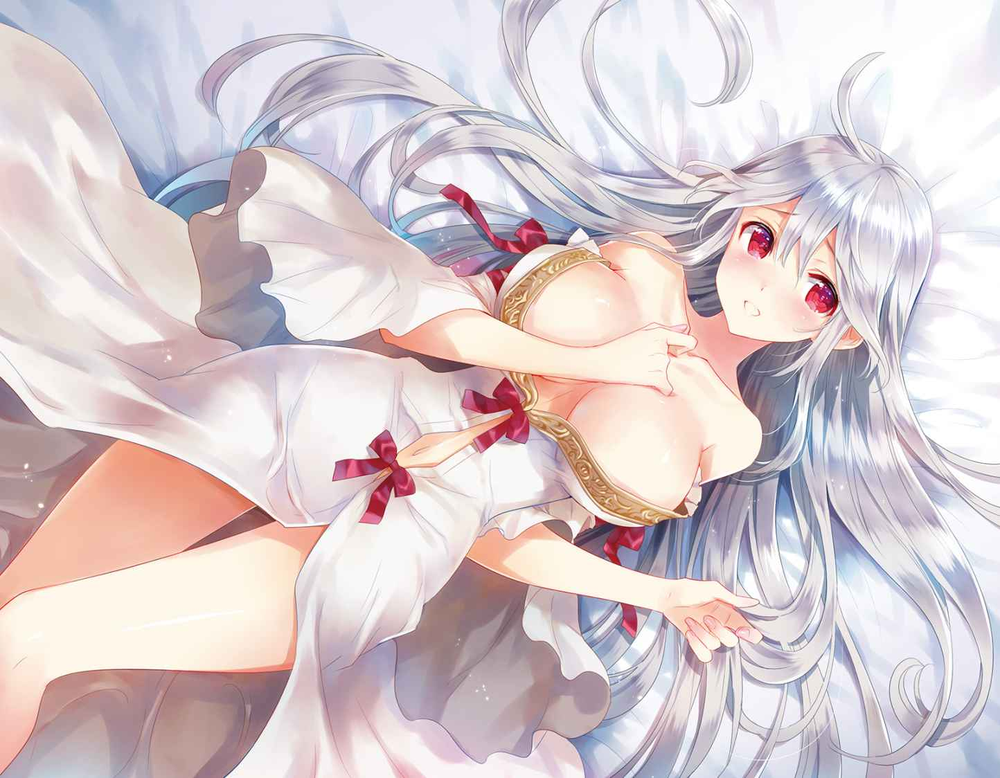
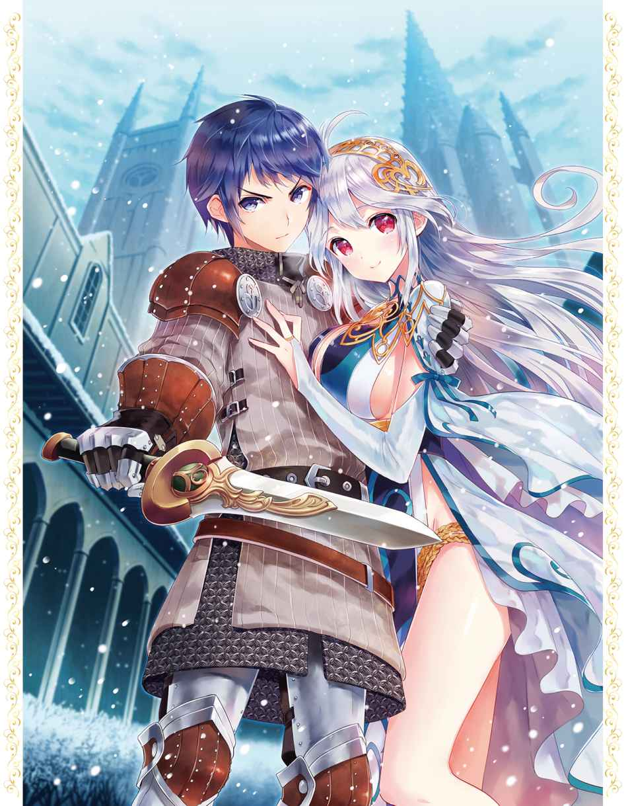
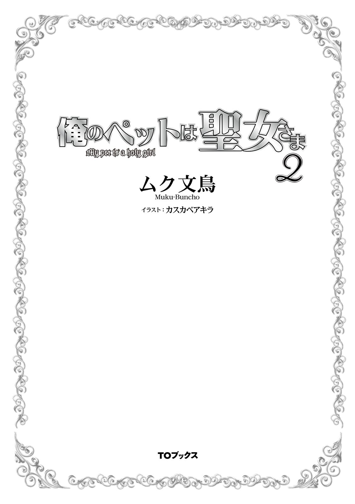
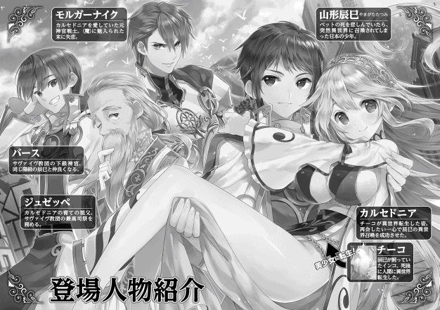
暗くて静かで心地よい闇の中を、辰巳 は揺蕩 う。
闇はどこまでも続き、永遠に辰巳を包み込んでくれるかのようで、辰巳はその心地よい静寂を堪能していた。
「..................い。...............？ そ......ろ............きて............さい」
それまで無音だった闇の中に、不意に誰かの声が響いた。
聞いていて気持ちのいい、澄んだ女性の声。その声は、静寂に慣れた辰巳の耳にするりと入り込んでくる。
誰の声だろう。どこかで確かに聞いたことのある声だ。
その声は、自分の名前を呼んでいるような気がする。ならば、その声は母親......いや、母にしては声が若々しい。
自分の名前を呼ぶ声は、自分と変わらないぐらいの年頃に思える。となれば、それは妹だろうか。
「ん......り......な？」
半ば寝ぼけた頭で、辰巳は妹の名前を口にする。
と、不意に頬をきゅっと抓 られた。
もちろん、それほど強い痛みは感じない。しかし、その衝撃で寝ぼけた頭が完全に覚醒する。
「............あ、あれ？」
「おはようございます、ご主人様」
目の前には、白金色の長い髪と神秘的な真紅の瞳の、笑顔を浮かべる女性がいた。
活性化した辰巳の脳は、それが誰なのかを瞬時に悟る。
「......チーコ......？」
そう。辰巳の目の前で笑顔を浮かべているのは、カルセドニアだ。
しかし、彼女の笑顔から放たれる重圧に、辰巳は背中に嫌な汗が流れるのを感じた。
「ご主人様？ 私の聞き間違いでなければ、今、ご主人様が口にしたのって、女性の名前じゃないですか？」
「あ、あははは......ご、ごめん、チーコ。ちょっと寝ぼけて妹と間違えたんだ。ほら、チーコも覚えているだろ？ 以前は妹がよく俺を起こしてくれたのを」
どこか、寂しそうな笑みを浮かべる辰巳。そんな彼を見て、カルセドニアから一瞬で重圧が消える。
カルセドニアも、辰巳の妹のことは覚えている。
オカメインコという生物の習性上、チーコだった頃のカルセドニアのパートナーは辰巳だったが、彼の妹もまた、彼女をとても可愛がってくれた。
餌や水を取り替え、鳥籠を掃除してくれたし、時には辰巳と一緒に近所を散歩したこともある。
そして辰巳が言ったように、彼の家族がまだ存命だった頃は、朝になると彼の妹が辰巳を起こすことがよくあった。
辰巳は家族のことを思い出してしまったのだろう。彼の心境を悟り、カルセドニアは反射的に辰巳を抱き寄せた。
その、豊かな双丘に、彼の顔を埋もれさせるように。
「も、申し訳ありませんっ!! ご主人様の気持ちも考えず、自分勝手なことを......で、でも、今のご主人様には私がいますっ!! ご主人様が望む限り、私は絶対にご主人様の傍を離れませんっ!! ですから......ですから......っ!! 」
カルセドニアは力の限り辰巳を抱き締める。
当然ながら、彼女の胸元に頭を抱え込まれた辰巳は、呼吸するのも難しい。
顔面に触れる柔らかな感触は、世の男性にとっては天国にも等しいだろう。しかし、徐々に呼吸が苦しくなり、辰巳の意識は朦朧としてくる。
女性の胸で「溺死」する。それはまさに、天国と地獄が共存する世界だった。
「本当に......申し訳ありませんっ!! 」
「い、いや、まあ......チーコに悪気がないのは分かっているし、お、俺もその......悪い気はしなかったし......」
辰巳はあわやのところで解放され、「女性の胸で溺死する」という名誉なのか不名誉なのかよく分からない運命から何とか逃げ出すことができた。
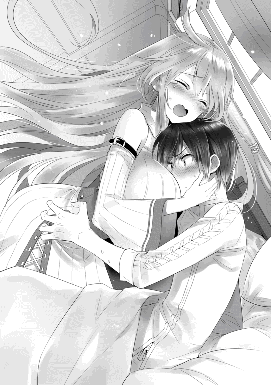
目の前で深々と頭を下げるカルセドニアに苦笑を浮かべつつ、辰巳は改めて部屋の中を見回す。
ここは、昨日からカルセドニアと一緒に暮らし始めた彼らの家。その家の中の寝室と定めた部屋だ。
部屋の中には、寝台が二つと箪笥などの真新しい家具が置かれている。寝台のうち一つは、辰巳と一緒にこの世界に召喚された、彼が日本でも愛用していたベッドである。
辰巳のベッドのすぐ横には、こちらの世界の寝台。そちらの寝台は既に綺麗に整えられており、きちんと畳まれた女性ものの夜着が寝台の上に置かれている。
それをぼんやりと眺めつつ、辰巳は昨日のことを思い出した。
昨日一日かけて、何とか引っ越しを終えた辰巳とカルセドニア。
その日の夜は、引っ越しを手伝ってくれたバースやボガードと共に、細 やかながら引っ越し祝いを行った。
その際、テーブルに出された酒をバースやボガードに薦められるまま辰巳も口にしたのだが、これまでほとんどアルコールの類を飲んだことがない彼は、早々に酔いに襲われてしまった。
それでも何とか意識を保ち、バースやボガードと共に楽しい一時を過ごした辰巳だったが、限界が近かった彼はバースらが帰った直後、そのまま自分のベッドで寝入ってしまった。
そして自分が寝た後、カルセドニアも隣の寝台で寝たのだろう。
自分のすぐ隣で、薄い夜着だけを着た姿で眠るカルセドニアを想像してしまい、思わず辰巳は頬を紅潮させた。
「ご主人様？ どうかされましたか？」
辰巳の様子がおかしいことに気づいて、カルセドニアが心配そうに問いかけてくる。
「あ、う、うん、な、何でもないよ！」
あちこちに視線を泳がせながら、辰巳は枕元に置いておいた腕時計を手に取った。
時間を確認すると、時計の針は午前六時四十分ほどを指している。
「そういや、今日からジュゼッペさんの魔法の講義が始まるんだっけ」
「はい。ですからそろそろ起きて準備をしないと、お祖父様との約束の時間である二の刻（午前八時頃）に間に合いませんよ？」
改めて、辰巳はこれからの予定を思い出す。
先日の決意通り、辰巳は今日から魔祓い師を目指して、様々なことを学んでいかなければならない。
ジュゼッペとの魔法の授業も、その一環だ。
他には本格的な武術鍛錬も近々始まる予定だし、今まで通り下級神官としての勤めもある。
「こうしちゃいられないな」
辰巳は元気よくベッドから立ち上がると、そのまま勢いよく夜着を脱ぎ捨てた。
「ひょえっ!? 」
突然目の前で服を脱ぎ出し、上半身裸になった辰巳を見て、カルセドニアが顔を真っ赤にする。
モルガーナイクとの戦いの後、カルセドニアも治療のために辰巳の身体を間近で見たし、肌にも直接触れたことはある。だが、それはあくまでも治療行為であり、あの時は辰巳の治療に集中していたため、余計なことを考える暇はなかった。
しかし今、カルセドニアの目の前に、最愛の男性のあられもない姿がある。
両手を頬に当て、そこに宿った熱を冷まそうとするが、彼女の顔を赤く染めた熱は一向に引く気配はない。
それでいながら、カルセドニアは辰巳の身体から目を逸らそうとしない。いや、逸らせない。
しばらく呆然と辰巳の身体を見つめていたが、カルセドニアはふと自分のしていることに気づく。
「も、ももも申し訳ありませんっ!! 」
慌てて辰巳に背中を向けるカルセドニア。辰巳もまた、異性の前で上半身だけとはいえ裸になって着替えていたことに気づいて再び顔を赤らめた。
「あ、あー、ご、ごめん。チーコの前で脱ぎ出すなんて、ちょっと無神経だったよな」
「い、いえ、こちらこそ......思わずまじまじと見入ってしまって......」
互いに背を向け合い、二人して顔を真っ赤にする辰巳とカルセドニアだった。
二人がややぎこちなく居間へ移動すると、既に朝食の準備は整っていた。
居間のテーブルの上に並ぶのは、焼きたてのパンや新鮮な野菜。そしてハム──辰巳にはそう思えた──をさっと炙ったものなど、食欲を刺激するいい匂いを周囲に放っている。
「おお、これは美味そうだな」
「ご主人様のお口に合うといいのですが......」
「合うに決まっているじゃないか。これまでチーコの料理を食べたことは何度もあるが、不味かったことは一度もないし」
辰巳がカルセドニアの料理の腕を褒めれば、カルセドニアは嬉しそうに微笑んだ。
「さあ、冷める前にいただきましょう」
「そうしよう」
辰巳とカルセドニアはテーブルで向かい合うように腰を下ろし、同時に神に感謝する祈りを捧げる。
最下級の階位とはいえ、今の辰巳は立派な神官である。
正直言うと、信仰心なんてものは辰巳にはまだ芽生えていないが、その立場上、様々な祈りの文句は覚えさせられた。
食事の前などに祈りを捧げることも、最初は僅かながらに抵抗を感じたものだが、今ではかなり馴染んできている。
二人で共に祈りを捧げた後、辰巳は籠に盛られているパンへと手を伸ばす。
カルセドニア謹製の焼きたてのパンを食べながら、辰巳は今日の予定を確認する。
「俺はこれからジュゼッペさんの講義を受けに神殿に行くけど、チーコは一日家にいるんだよな？」
「はい。引っ越しの片づけもまだ全部終わっていませんし、今日は掃除と片づけをする予定です。家のことは私に任せて、ご主人様はお祖父様との授業をがんばってくださいね？」
「分かっているよ。早く一人前の魔祓い師にならないといけないしな」
辰巳は目の前で微笑むカルセドニアを見つめる。
一日でも早く、彼女と肩を並べて戦える魔祓い師になりたい。それが今の辰巳の目標だ。
カルセドニアと他愛のない会話を楽しみつつ、食事を終えた辰巳は、改めて下級神官の階位を示す神官服へと着替える。
最後にカルセドニアに身支度をチェックしてもらい、辰巳は玄関の扉に手をかけた。
「じゃあ、行ってくる」
「はい、行ってらっしゃいませ。で、ですが......」
突然、カルセドニアは俯いてもじもじと身体をくねらせる。
「......できれば、早く帰ってきていただけると嬉しいなー、なんて......」
「あ、ああ......ど、努力するよ......」
カルセドニアは俯き、辰巳は仰向き。
互いに視線は逸らされているものの、二人の顔は揃って真っ赤だった。
「お主に教えることは何もない」
それは魔祓い師になるための座学の席で、師であるジュゼッペが一番最初に口にした言葉だった。
講義を聞いているのは、辰巳ただ一人。
贅沢にも彼は、最高司祭であるジュゼッペにマンツーマンで魔祓い師となるために必要な知識を教わっているのだ。
いや、「教わっている」のではなく、「教わろうとしていた」が正しい。なぜなら、その座学はこれから始まるのだから。
それなのに。
師であるジュゼッペの口から飛び出したのは、「お主に教えることは何もない」という言葉。
これにはあれやこれやといろいろと心構えをしていた辰巳も、いや、辰巳でなくても思わずぽかーんと間抜けな顔を晒してしまうことだろう。
「より正確に言うならば、『魔法に関してはお主に教えることは何もない』じゃな。実を言えばの、婿殿の魔法は何かと規格外すぎるのじゃよ」
史上二人目の〈天〉系統の魔力の持ち主であり、自身の内側にある魔力である内素 ではなく、世界に満ちる魔力である外素 を操る外素使い。これだけでも十分に規格外すぎるというのに、辰巳にはまだそれ以外にも通常の魔法の範囲から飛び出しているものがあった。
「これまたより正確に言うならば、お主は『魔法使い』ではなく『魔力使い』と言うべき存在じゃ」
「ま、魔力使い......？」
「左様。お主やカルセから聞いた限りでは、お主が使ったのは魔法ではない。魔法によく似た代物なんじゃ」
辰巳には魔法使いと魔力使いがどう違うのか全く理解できない。だが、ジュゼッペが違うと言う以上は何かが違うのだろう。
「以前にも説明したと思うが、魔法というものは魔力と呪文の詠唱、この二つがあって初めて魔法として機能する。それは覚えておるかの？」
「はい。確か......こちらの世界へ来た初日にジュゼッペさんとチーコから聞きました」
忘れるはずもない。カルセドニアによってこちらの世界に呼ばれたその日に、ジュゼッペとカルセドニアから魔法に関する知識を少しは聞いた。そして、その時はジュゼッペたちから魔力が全くないと言われて、酷く落ち込んだのもしっかりと覚えている。
「じゃが......カルセから聞いたところによると、婿殿は呪文の詠唱をしていなかったそうじゃな。というより、お主は呪文をまるで知らんじゃろ？」
「い、言われてみれば......」
辰巳は魔法を使う際に必要な、呪文というものを覚えたことがない。というより、書物なり何なりに記された呪文さえ見たことがない。もっとも、こちらの世界の文字の勉強は始めたばかりで、たとえ見せられてもまだ読めないのだが。
つまり、辰巳は呪文を詠唱しようにも呪文自体を知らないのだ。
「じゃが、婿殿は確かに魔法を使った。いや、魔力を直接用いて魔法によく似た現象を引き起こした、と言うべきじゃな。そして、お主のように魔力を直接用いる者を『魔法使い』ではなく『魔力使い』と呼ぶのじゃ」
やや強引かもしれないが、仮に魔力をガソリン、呪文をエンジンに見立ててみよう。
ガソリンをエンジンに注ぎ込み、燃焼させて初めて自動車が走るように、魔力というガソリンを呪文というエンジンに注ぎ込むことで、魔法という名の自動車はようやく走ることができる。
つまり、辰巳はエンジンを積んでいない自動車に、ガソリンだけを注いでいるようなもの。これでは本来ならば自動車は走らない。
それなのに、辰巳は実際に自動車を走らせてしまったのだ。
これがどれだけ異常なことか理解できるだろう。
「過去にもお主のように魔力使いと呼ばれた者は少数ながら存在した。いや、今でも僅かではあるが存在しておる。確かに稀な存在である魔力使いじゃが、これは儂らのような人間や亜人たちに限っての話での。それ以外の生物には案外と魔力使いはおるもんなんじゃ」
と、ジュゼッペは微笑みながらそう告げた。
朝方、神殿へと出かけた辰巳を見送ったカルセドニアは、新しい家の中の片づけを始めた。
今日は予定通り、一日かけて家の中の片づけをする予定だ。
新しいこの家に引っ越したのはまだ昨日のこと。昨日は引っ越しを手伝ってくれたボガードやバースたちと、カルセドニアの手料理で引っ越し祝いを行った。
その祝いの席が終わり、ボガードとバースは、自宅や神殿の宿舎へと引き上げていった──その際、バースが意味深な笑みと共に辰巳に向けて親指を立てていた──のだが、引っ越し疲れと祝いの席で振る舞った酒のせいで、辰巳は思いの外早くに寝入ってしまった。
どうやら、辰巳は酒をあまり飲み慣れてないようで、酒精に対する耐性も高くないようだ。
辰巳が予想以上に早くに寝入ってしまったため、少し寂しい思いをしたカルセドニア。だが、先日の怪我から回復してまだ日が浅い辰巳に、無理を言うこともできない。
寝入った辰巳の寝顔を一人幸せそうに眺めつつ、その日はカルセドニアも早めに就寝した。
そして一夜明けて今日。カルセドニアはひっそりと燃えていた。実は彼女には長年夢見てきた野望があるのだ。
「夕べはご主人様が早くに寝てしまわれたけど......今日こそは......今日こそはご主人様と......」
その長年の夢を脳裏に浮かべつつ、カルセドニアはその頬を桜色に染める。
野望を胸に秘めながら、ご機嫌に鼻歌などを歌いつつ、家の中をあらかた片づけ終えたカルセドニアは、庭先も軽く掃除しておこうと箒 を片手に玄関から外へと出た。
「あら......？」
カルセドニアの視線の先、家の門の向こうでご近所の住人と思しき数人の主婦らしき婦人たちが、家の方をちらちらと見ながら何かを囁き合っていた。おそらくは、有名な《聖女》が引っ越してきたらしいということで、ご近所の奥様たちが集まってあれこれと噂話に花を咲かせているのだろう。
そんな主婦たちの一人が、外へと出てきたカルセドニアに気づいてあっと声を上げた。
それが切っ掛けとなり、他の婦人たちも彼女の存在に気づく。
──そう言えば、まだご近所に引っ越しの挨拶をしていなかったわ。
そのことを思い出し、カルセドニアは笑顔を浮かべて婦人たちの方へと歩み寄る。
「こんにちは。この度、この家に越してきたカルセドニア・クリ......いえ、カルセドニア・ヤマガタと申します。今後は主人共々よろしくお願いします」
と、カルセドニアは主婦たちに頭を下げた。
今、極めて重大な情報操作が行われたが、それに気づいた者は誰もいなかった。
「例えば魔獣。魔獣の中には確かに魔法に似た現象を引き起こすものがおる。炎を吐いたり、吹雪を撒き散らしたりと言った具合にの。じゃが、当然ながら連中は呪文なんぞ唱えることはできん。つまり、婿殿が使った魔法──いや、魔法によく似た現象は、魔獣たちと同じ理屈なんじゃな」
なるほど、言われてみればその通りかもしれない。
辰巳はまだ本物の魔獣を見たことはないが、魔獣が人間の言葉を話すとは思えない。もしかすると言葉を話せる魔獣もいるかもしれないが、仮にいたとしてもそれはかなり例外的な存在と言っていいだろう。
「では、俺は今後は呪文を覚えないといけないわけですね？」
こちらの世界の文字の勉強に引き続き、魔法の呪文も覚えていかなければならない。果たして自分にどこまでやれるのか、どうにも不安を感じる辰巳である。
だが、やらねばならない。自分は決めたのだ。彼の大切な家族のために、必ず強くなると。そのためならばどんな努力も惜しまないと。
内心で決意を新たにする辰巳だったが、次のジュゼッペの言葉を聞いてその決意もあっさりと霧散してしまう。
「いや、それがなぁ......お主の系統である〈天〉じゃが......過去に使い手が一人しかいなかったことは話したじゃろ？ それもその使い手がおったのはかなり大昔の話でなぁ。〈天〉の系統にどんな魔法があったのかという口伝は残っておっても、肝腎の呪文の方は......実は現在には全く伝わっておらんのじゃよ」
古い文献などを探せばもしかすると出てくるかもしれないが、それを探し出すには膨大な時間と労力が必要だろう。現にカルセドニアが発見した辰巳を召喚した儀式魔法も、それを発見するまでにかなりの月日を費やしている。
「え......？ そ、それじゃあ......」
「うむ。婿殿は魔法使いではなく魔力使いとして、独自の方法を探しながらやっていくしかあるまいの。じゃから言うたのじゃよ。『お主に教えることは何もない』、とな」
「しかし、サヴァイヴ神殿の《聖女》様が近所に引っ越してきたとなると、何かと心強いねぇ」
「本当だね。急病人なんかが出た時には、よろしくお願いするわね」
「はい。できる限りお力にならせていただきます。でも、あまり私が勝手に治癒魔法を使うと、神殿の収入が下がってしまいますので......時々は神殿の方へも依頼してくださいね？」
にっこりと微笑みながら、カルセドニアが冗談混じりに言えば、集まっていた婦人たちがどっと笑う。
「しかし何だね。《聖女》様なんて呼ばれているから、私ゃてっきりもっとお固い人だとばかり思っていたけど......実際に話してみれば、ごく普通の娘さんだねぇ」
「えっと......ずっと神殿暮らしでこのようなご近所付き合いは初めてのことなので......実を言えば少し戸惑っているんです。でも、私がちゃんとご近所の皆様と仲良くしないと、主人に恥をかかせることになりますから」
そう言いつつ、頬に手を当てて穏やかに、そして嬉しそうに微笑むカルセドニア。
実際、彼女は人付き合いがあまり得意ではない。
彼女は、故郷の村でも両親や村人たちから狂人扱いされてずっと冷たい目で見られていたし、この街のサヴァイヴ神殿に来てからも、ジュゼッペの養女となったことで変な遠慮をされ、彼女に親しく話しかける者はごく限られていた。
だが、この家で暮らしていく以上は、ご近所の人たちとも上手く付き合っていかなくてはならない。
仮に自分が理由でご近所から孤立すると、辰巳にも肩身の狭い思いをさせてしまう。
辰巳がカルセドニアのためにがんばる決意をしたように、彼女もまた辰巳のために努力していくつもりなのだ。
「とはいえ、全く助言できんというわけでもないがの」
明らかに落胆の表情を浮かべている辰巳に、ジュゼッペは悪戯が成功した子供のような笑顔で告げた。
「まずは外素を自在に操れるようになることを目指すがよかろう。今のところ、婿殿は意識して外素を集めることさえできんじゃろ？」
「そうですね......その通りです」
これまで、辰巳が〈天〉の魔力を発揮したのは一度だけ。それも半ば無意識の時である。僅かな魔力を用いた時は何度かあったが、その時も意識して魔力を操作したわけではない。
意識して魔力を操れるようになること。それが辰巳にとっての最初の課題だろう。
「儂らと婿殿ではいろいろと違うじゃろうが、参考までに儂らが魔法を使う際のやり方を説明しよう。まず──」
焦る必要はない。ゆっくりと必要な技術を、確実に身に着けていけばいい。
自分自身にそう言い聞かせながら、ジュゼッペの講義に辰巳は真剣に耳を傾けていく。
「ただいまー」
七の刻──午後六時頃──を大きく過ぎて周囲がすっかり暗くなった頃、ようやく辰巳は自宅へと帰ってきた。
「お帰りなさいませ、ご主人様」
玄関の鍵──カルセドニアが施した魔法の鍵で、合い言葉によって開く──を開けて家に入った辰巳を、ぱたぱたと家の奥から小走りに現れたカルセドニアが出迎えた。
「お疲れさまでした。如何でしたか、初日の勉強は？」
「いやぁ、何というか、前途多難な感じだなぁ......」
これまで意識したこともない周囲に満ちた魔力を、いきなり意識しろと言われても簡単にはいくはずがない。
辰巳は今日一日、ジュゼッペの指導の元で、周囲に満ちる魔力を感じ取る訓練を行っていた。
しかし、全く魔力を感じ取ることができないまま一日が過ぎてしまった。
「誰でもいきなり魔力を感じたりはできませんよ？ 私も魔力を感じられるようになるまで、最初はかなり苦労しましたから」
「そっか......そうだよな。最初から上手くいくわけがないよな」
以前、ジュゼッペがカルセドニアのことを天才と評したことがある。そのカルセドニアでも最初は苦労したのならば、自分が苦労するのは当然だろう。
もしかして自分には才能がないのかも、なんてちょっぴり落ち込んでいた辰巳だったが、カルセドニアに励まされてやる気を回復させた。
単純と言うなかれ。やはり男にとって美女の励ましは、どんな回復薬よりも効果があるものなのだ。
「今、食事の準備をしていますので、ご主人様は先にお風呂に入っていてください。もうお湯は沸かしてありますから」
風呂に水を張るのも沸かすのも、カルセドニアという魔法使いがいてくれるお陰で簡単に済ませることができる。
それどころか、普通の家庭では夜は蝋燭などの頼りない灯りしか光源はないが、カルセドニアが《灯り》の魔法を使ってくれるお陰で、家の中はどこも昼のように明るい。
「ありがとう、チーコ。チーコがいてくれて本当に助かるなぁ」
「い、いえ......ご主人様のお役に立てれば、私はそれだけで......」
「でも、チーコにばかり家のことを任せるわけにもいかないしな。俺にできることがあれば何でも言ってくれよ？ それこそ薪割りでも何でもするからさ」
ぱん、と上腕筋を叩きながら辰巳が言えば、カルセドニアは急に頬を赤く染めつつもじもじとしだした。
「でしたら......でしたら、ご主人様にお願いがあるのですが......」
「俺に？ うん、俺にできることなら何でも言ってくれ」
「で、では..................今晩、一緒の寝台で寝てもいいですか......？」
ぴきーん、と。
辰巳の身体が音を立てて硬直した。
今、辰巳の目の前には巨大なベッドがある。
場所は辰巳とカルセドニアの家の一室。昨夜は二つの寝台があったはずの彼らの寝室である。
彼の感覚でいうところの、ダブルベッドよりも更に大きなそのベッド。いわゆるクイーンサイズとかキングサイズとかいうサイズではないだろうか。辰巳もこれまでにそんなサイズのベッドは見たことないので、もしかすると違うかもしれないが。
もちろんこちらの世界の寝台なので、マットレスではなく例の解 した干し草を詰めた寝台だ。
それでもよく見れば、寝台に使われている木材部分には細工なども入っており、間違いなく高級品だと思われる。
しかし、辰巳にはこんな高級そうな寝台を買った覚えがない。
「ど、どうしたんだ......これ......？」
「こ、これはその......お祖父様からの引っ越し祝いの品として、本日の昼間に届きました......」
カルセドニアも頬を赤らめつつ、それでいて嬉しそうにちらちらと辰巳と寝台を何度も見比べている。
どうやら、これはあの爺さんの仕業らしい。
今日の講義が終わって辰巳が退室するとき、妙ににやにやとした笑みを浮かべていたが、その理由がようやく分かった。
「しっかし......本当に大きな寝台だな......」
照れ隠しのためか、辰巳はカルセドニアの傍から離れて、改めて巨大な寝台に近寄る。間近でじっくりと観察してみると、その大きさが更によく分かる。
明らかに一人用ではない。確かにこの大きさの寝台に一人で寝たら、それはそれで気持ちいいのかもしれないが、それは本来の用途ではないだろう。
辰巳は、顔を赤らめながらカルセドニアに振り返った。
「そ、それで......こ、この寝台で俺と一緒に寝たい......と？」
辰巳がそう尋ねれば、カルセドニアは満面の笑顔で「はい」と答えた。
「ずっと......ずっと以前からの夢だったんです。ご主人様と......一緒の寝台で寝ることが......」
「ずっと前から......？」
「はい。まだ私が小さかった頃からの......ずっとずっと前からの夢です」
赤く染めた頬を両手で押さえながら、恥ずかしそうに、それでいてとても嬉しそうにカルセドニアは言う。
「小さかった頃からって......もしかして、チーコの前世の......オカメインコだった頃からってこと？」
「はい。あの頃は、いつもご主人様と一緒でした。もちろん、ご主人様が家にいない時、私は籠の中にいましたが......ご主人様が家にいる時はいつも籠から出してくださいました」
かつて彼女がオカメインコだった頃、辰巳は家にいる時は常に彼女を鳥籠の外に放していた。
さすがに家にいない時は、思わぬ事故などが恐かったので鳥籠の中に入れておいたが、当時の彼が家に帰ると真っ先に行ったのは、チーコを籠から出すことだった。
当時からチーコは賢かったので、鳥籠の出入り口さえ開けておけば空腹になると勝手に籠に戻って餌を食べ、喉が渇けばこれまた籠に戻って水を飲んでいた。
そして再び籠の外へ出てくると、辰巳の肩や膝の上で一時間でも二時間でもじっとしていたものだ。
そんな辰巳も、寝る時はチーコを籠に戻していた。
もしもチーコと一緒に寝て、寝返りを打った拍子に彼女を押し潰してしまったら。それが恐くて寝る時はチーコを籠に戻していたのである。
「ご主人様が私を大切にしてくださったのは理解しています。でも......当時の私はやっぱりそれが寂しくて......しかし、今なら一緒に寝られます！」
ぎゅっと拳を握り締め、カルセドニアは力説する。
そう。これは野望なのだ。カルセドニアが長年夢見てきた野望なのである。
若い男女が一つの寝台で一緒に寝る。
それを言葉通りに取る者は、年端もいかない子供だけだろう。
そして、辰巳は年端もいかない子供ではない。それどころか、思春期真っ只中だ。
当然、「一緒に寝る」という事実から、辰巳は「愛の肉体言語」を連想する。連想してしまう。
カルセドニアと一緒に暮らす以上、そして、彼女が自分に異性としての好意を寄せてくれている以上、いつかは彼女とそのような関係になるだろうと、辰巳だって考えていた。いや、期待していたと言っても過言ではない。
だけど、それはもう少し先の話で。
少なくとも、辰巳は自分がある程度の経済力を手に入れてから、というつもりでいたのだ。
一緒に暮らしている以上、辰巳がカルセドニアを押し倒すのは難しくない。そして、カルセドニアも辰巳を拒むことなく受け入れてくれるだろう。
これまでに異性を知らない辰巳は、カルセドニアという甘露を一度でも味わってしまうと、もう男の獣性を抑えることができなくなるのは目に見えている。
その結果、遠からずカルセドニアの胎内には、二人の愛の結晶が宿ることになるだろう。
別に辰巳は妊娠が恐いのではない。
ただ、何から何までカルセドニアに頼っている現状では、父親として産まれてくる子供に対して情けなさすぎると感じているのだ。
せめて。
せめて、カルセドニアほどではなくとも、自分が家族を養えるだけの経済力を身に着けてから。
カルセドニアとの正式な結婚も、肉体的に結ばれるのも、それからだと辰巳は考えていた。
言ってみれば、男の詰まらない意地と見栄以外のなにものでもない。
だが、辰巳はその意地と見栄を貫きたかった。
それなのに、まさか一緒に暮らし始めて二日目にして、カルセドニアから一緒に寝ることを求められるとは正直予想外すぎた。
カルセドニアにだって、男と女の性のあれこれの知識はあるはずだ。
辰巳はまだ知らないことだが、サヴァイヴ神に仕える神官、それも女性の神官は産まれてくる赤子を取り上げる役目、いわゆる産婆としての役割を求められる。
結婚の守護神にして、子宝の神でもあるサヴァイヴ神。産まれてくる赤子を取り上げ、その場で産まれた赤子に祝福を授けるのは、サヴァイヴ神の神官の重要な役割でもある。
そのため、サヴァイヴ神の女性神官には、簡単ながらもいわゆる性教育が施される。
子供を授かる仕組み、子供を授かるための男女の行為、そして、子供が産まれてくる時の取り上げ方の手順などを先輩の女性神官から教わるのだ。
もちろん現代日本のような科学的、医学的な知識はこちらの世界にはないが、それでも過去から連綿と受け継いできた知識と経験がある。その知識と経験を元にして、サヴァイヴ神の女性神官は産婆を務める。
実際、カルセドニアも赤子を直接取り上げたことはまだないものの、その助手ならば何度か経験したことがあった。
そのカルセドニアが、男女が一緒に寝ることの意味を知らぬはずがない。
だが、辰巳が彼女を改めてよく見れば。
今のカルセドニアの様子は、ただ単純に辰巳と同じベッドで眠れることを喜んでいるようだ。
前世のオカメインコだった頃から、辰巳の傍で眠りたいという野望を抱いていたらしいカルセドニア。
もちろん、彼女にだって期待はある。いずれは辰巳と身体を重ね、その身に彼の子を宿すという期待が。
でも、今はそんな期待よりも、長年の野望の方が優先されているようだ。
紅玉 のような瞳をきらきらと輝かせ、頭上のアホ毛をそれこそ犬の尻尾のようにひょこひょこと揺らす彼女の姿を見て、辰巳はあれこれと思い悩んだ自分が馬鹿だったと悟る。
カルセドニアが望んでいるのは、本当にただ単に一緒に寝ることだけなのだ。
確かに男としては、彼女と肌を交えることができないのは残念に感じられる。
だが、一つの寝台で共に身を寄せ合い、互いの体温を感じられるだけでも、今は満ち足りるだろう。
だから辰巳は、期待に瞳を輝かせるカルセドニアに向かって、穏やかに微笑みながら首を縦に振ったのだった。
順番に風呂に入り、食事を済ませた辰巳とカルセドニア。
二人は改めて、巨大な寝台が置いてある部屋を訪れていた。
ちなみに、昨日使った二つの寝台は、屋根裏の物置部屋に移動されている。
もう今夜は寝るだけだ。二人は寝間着用の薄い夜着に着替え、一緒に大きな寝台に身を横たえた。
嬉しそうに、それでいて少しだけ恥ずかしそうなカルセドニア。
顔を赤く染めつつ、やっぱり恥ずかしくて彼女の顔を直視できない辰巳。
それでも互いの視線がぶつかり合い、どちらともなく微笑みを浮かべる。
「では、灯りを消しますね」
カルセドニアが小声でぼそぼそと呟けば、それに反応した《灯り》の魔法が消失する。
一瞬で部屋の中は闇に侵食されるが、少し待つとその闇にも目が慣れてくる。
暗闇の中、ぼんやりと浮かぶカルセドニアのシルエット。
どちらからともなく二人の右手と左手が握り合わされ、掛け布団代わりの毛布を身体に被せる。
今、この国の季節は海洋の節、すなわち春の終わりらしい。これから短い太陽の節と豊穣の節を過ぎて、長い宵闇の節へと移り変わっていく。
今はこの毛布でも十分に暖かいが、寒い時期になると動物や魔獣の毛皮を何枚も重ねて使用するのだと、寝物語にカルセドニアが語ってくれた。
真っ暗な中、互いの僅かなシルエットだけが見えている状況で、二人は静かに言葉を重ね合わせる。
二人で暮らしていた昔のこと。こちらの世界に転生したカルセドニアのこと。これから先の希望や期待など。
それは静かながらも楽しい一時で、時の経つのを忘れさせるほどだった。
やがてどちらともなく微睡みが迫ってくると、不意にカルセドニアがその身体を辰巳に密着させた。
柔らかくて暖かい彼女の身体を全身で感じて、その心地よさに辰巳の微睡みが一段と深くなる。
カルセドニアは辰巳の首筋にその美貌を埋め、擦り付ける様に何度も頭を振ると、やがて満足したのか「えへへ」という小さな声と共に満足そうな吐息を漏らした。そして、すぐに安らかな寝息を立て始める。
オカメインコなどの鳥類は、羽毛に覆われていない嘴 や脚から体温が逃げるのを防ぐため、嘴を肩の辺りに埋めるようにし、脚を腹の羽毛の中に畳み込むようにして丸まって眠る。
今のカルセドニアのその仕草に、辰巳は昔のチーコの様子を思い出す。
──やっぱりチーコはチーコなんだなぁ。
ぼんやりと霞がかかる頭でそんなことを考えながら、辰巳もまたゆっくりと眠りの中に落ちていった。
どすん。
夜中、突然腹部に衝撃を感じて、辰巳は驚いて目を開いた。
部屋の中は暗くてはっきりとは見渡せない。
辰巳は手探りで枕元に置いておいた腕時計を探し出すと、窓から差し込む僅かな月明かりで時間を確認する。
腕時計の針が示している時間は午前二時。眠る直前に時間を確認したところ、午後十時頃だったことを覚えている。
基本この世界の人々は、日が落ちて暗くなると眠り、日の出と共に起き出す。
それは現代のような照明がないのが理由で、家庭にカルセドニアのような《灯り》の使える魔法使いでもいない限り、日没後はすぐに寝静まってしまう。
辰巳たちが十時過ぎまで起きていたのは、あれこれと話に花を咲かせていたからだが、この世界の常識からするとかなり夜更かしな部類に入る。
腕時計で時間を確認した辰巳は、次に自分の腹部へと目を向けた。
すると、自分の腹の上に白い棒のようなものが載っているのが、薄暗闇の中で何とか見ることができた。
「......何だこれ......？」
半ば寝ぼけているのか、辰巳は腹の上に載っている白い棒に指先で触れてみた。
指先に伝わるしなやかな感触。ますます棒の正体が分からなくなった辰巳は、今度は掌で棒を触ってみた。
さらさらとした滑らかで柔らかな感触が掌に伝わる。それでいて、妙に生暖かい。
何となく心地よいその柔らかさに、無意識の内に手が動いて白い棒の表面をぐにぐにと揉むように触れてしまう。
すると、彼の隣から小さな声。
もちろん、隣で寝ているカルセドニアの声だ。
ただ、その声は普段の凛とした声ではなく、どこか艶を帯びたような艶めかしい声で。この時になって、辰巳は腹に載っている白い棒の正体が分かった。
足だ。
カルセドニアの片方の足が、彼の腹に載っているのだ。
足の付け根付近まで夜着がめくれ上がり、その艶めかしい白い足が九〇パーセント以上も露出しているのが、薄暗闇の中で何とか分かった。
思わず驚きの声を上げそうになり、辰巳は慌てて自分の手で自分の口を塞ぐ。
と、そこへ今度は顔面に衝撃が走る。
「こ、今度は何が......って、腕？」
涙目になりながらも、辰巳は突然顔面に降ってきたものを見つめた。
どうやら、カルセドニアの腕が彼の顔面を直撃したらしい。
顔面に降ってきた腕をそっとどかし、次いで腹に載っている足も同じように移動させる。
だが、カルセドニアはすぐに寝返りを打ち、再び彼女の足が辰巳に襲いかかった。
慌てて身体を回転させ、足の直撃を辛くも回避する。
暗闇の中で目を凝らしてよく見れば、相変わらずカルセドニアは安らかな寝息を立てている。完全に眠っているようだ。
「ひょ、ひょっとして......チーコってかなり寝相が悪い......？」
誰に言うでもなく呟く辰巳。
そうしている間にもカルセドニアの身体は動き、今度は辰巳とは逆方向に寝返りを打つ。
もしも今、部屋の中が明るければ、完全に露わになった彼女の両足や下半身の下着、乱れた胸元から胸の谷間などが見えただろうが、幸か不幸か暗闇の中ではそこまで見分けられない。
「もしかして......ジュゼッペさんがこの大きな寝台を贈ってくれた本当の理由って......」
祖父であるジュゼッペならば、カルセドニアの寝相の悪さを知っていても不思議ではない。
彼女のこの寝相の悪さを知っていたからこそ、このような巨大すぎる寝台を贈ってくれたのではないだろうか。
これだけの広さがあれば、カルセドニアが間違って寝台から落下する心配もないし、彼女の寝返り攻撃から逃げるスペースも十分にある。
ちなみに、これだけ寝相の悪いカルセドニアだが、なぜか寝台から転げ落ちたことは一度もなかったりするが、それは今の辰巳は知らぬ情報である。
変な勘ぐりをしてしまったことを心の中でジュゼッペに詫びながら、辰巳は寝台の隅っこで丸くなって再び眠るのだった。
二十歳前と覚しき十人程の青年たちが、両肩に砂の詰められた布袋を載せたまま、その場で膝を曲げ、完全に腰を落としたところで再び膝を伸ばす。
いわゆるスクワットと呼ばれる運動を、彼らはどれだけの時間続けているだろう。
その足元には、彼らが流した汗が地面の砂を濃灰色に染め上げている。
そして、そんな青年たちの前には一人の男性。
みっちりと筋肉が詰まった大柄な身体を板金製の金属鎧に包み、腰には剣。その鎧の胸にはサヴァイヴ神を表わす聖印が刻まれていることから、神官戦士の身分にあることが分かる。
年齢は四十代の半ばだろうか。髭面で強面の、いかにも「教官」といった雰囲気の男性だ。
教官の目は、膝の曲げ伸ばしを続ける青年たちにじっと向けられている。
やがて、一人の青年が砂袋を肩から落とし、地面に倒れ込む。
それを合図にしたかのように、続けてまた一人が脱落した。
更に一人、また一人と、青年たちは次々と脱落していく。
そして、その場にいた青年たちのほとんどが地面に倒れ込み、屈伸運動を続けるのは一人だけとなった。
残された最後の一人は、周囲に倒れ込む若者たちとは若干見た目の特徴が違う。
ほとんどの青年が茶色系の髪と白い肌を持つのに対し、残った青年は黒い髪と薄い琥珀色の肌の持ち主だった。
最後に残った青年は、周囲の青年たちが全員倒れた後も、しばらく屈伸運動を続ける。
その青年を、教官はじっと鋭い目で見つめ続ける。
「おらおら、どうした？ もう終わりか？ そんなことじゃあ、一人前の神官戦士になるのはいつになる分からねぇぞ！」
教官が残った黒髪の青年に檄を飛ばす。
その檄が聞こえているのかいないのか、黒髪の青年は黙々と屈伸運動を続ける。
既に脱落し、地面に座り込んで荒い息を吐いている他の青年たちも、唯一残った青年を黙って見つめていた。
無言のまま屈伸を続ける青年には、教官や周囲の青年たちの視線を気にしている余裕はない。
肩に担いだ砂袋は、片方八キロぐらいだろうか。それを両肩に担いでいるので、都合十六キロほどの重量を上乗せしたままスクワットをしていることになる。
実際、青年の体力は限界だった。それでも歯を食いしばって続けているのは、偏 に気力がなせる技だ。
それから更にしばらく屈伸を続けた青年だったが、ついに最後の気力も尽きて地面に崩れ落ちた。
それを見た教官はにやりと髭面に笑みを浮かべる。
「ようし、半刻（約一時間）ほど休憩だ！ 今の内に腹ごしらえをしておけよ！ ただし、食い過ぎると後が苦しくなるからな。ほどほどにしておけ！」
それだけを言い残すと、教官は大股で神殿の裏手にある神官戦士たちの鍛錬場から立ち去った。
その場に残された十人ほどの青年たちも、のろのろと身体を起こして鍛錬場を後にする。教官に言われたように、食事を摂りに行くのだろう。
いまだ地面に大の字に横たわっているのは黒髪の青年一人。
立ち上がった青年の一人が、その青年へと近づいて、上から覗き込みながら声をかけてきた。
「おーい、タツミー。生きているかー？」
「おう、バース......何とかなー......」
地面に寝転んだまま、黒髪の青年──辰巳は右手だけを持ち上げてふらふらと振った。
声をかけたバースは、振られていた辰巳の手を握るとそのままぐいっと引き起こす。
「タツミも飯食いに行くだろ？」
「ああ、そのつもりだ」
「じゃあ、早く行こうぜ？ いつもの場所でおまえの奥さんが待っているぞ？」
「い、いや、チーコとはまだ結婚していないし......」
辰巳を引き起こしたバースは、その言葉を聞いて呆れた表情を浮かべた。
「何言ってやがる。一緒に暮らしている上に毎日弁当まで作ってくれるんだろ？ たとえ結婚していようがいまいが、実質的にカルセドニア様はおまえの奥さんじゃねえか」
にやにやと意味有りげな笑みを浮かべるバースに、照れた辰巳は若干顔を赤らめてバースを無視して歩き出す。
二人が目指すのは神殿の庭の一角。そこがここしばらくの辰巳たちのランチポイントなのだ。
扉が叩かれる音が響き、ジュゼッペはバルディオに代わって新たな補佐官となった高司祭に取り次ぎを命じ、誰が来たのかを確認してから入室の許可を出した。
「失礼します」
一礼しながらジュゼッペの執務室に足を踏み入れたのは、先程まで辰巳たちをしごいていたあの教官だった。
「ご苦労じゃの、オージン戦士長。して、どうじゃな？ 神官戦士見習いたちの様子は」
「いやぁ、まだまだ雛鳥もいいところです」
ジュゼッペの問いかけに、オージンと呼ばれた教官は厳つい顔を更に厳しくする。
現在のサヴァイヴ神殿には十五人から二十人ほどの規模の神官戦士の小隊が五つあり、それぞれに戦士長と呼ばれる隊長が率いている。
そして、その五人の戦士長の上には総戦士長と呼ばれる神官戦士の総隊長が存在しているのだ。
神殿を辞して市井に下ったモルガーナイクも、この戦士長の一人であった。
モルガーナイクが神殿を去ってからは、彼の補佐役を務めていた神官戦士が戦士長代理に就いており、近い将来に正式に戦士長へと昇進するだろう。
しかし、このオージンは六番目の戦士長の肩書きを持つものの、率いる小隊を持っていない。彼は神官戦士の見習いの訓練を専任して受け持つ人物なのである。
「特に、猊下が無理に見習いにねじ込んできたあのタツミとかいう小僧......ありゃあ、さっぱりですな」
オージンはジュゼッペに勧められた椅子に腰を下ろすと、腕を組みつつ無遠慮に言い放つ。
「体力はない、武器や防具を支えるだけの筋力もない、おまけに武器のまともな握り方さえ知らない。昨今の貴族の馬鹿息子でもあれよりは多少はマシってもんだ。猊下から推されたんで面倒は見ていますが、そうじゃなかったら最初の一日で放り出していますぜ？」
髭に覆われた口元を「へ」の字の形に曲げ、オージンは更に言葉を続けた。
「他の見習いどもと一緒に体力作りをやらせれば、真っ先にぶっ倒れるのはいつもあの小僧だった」
ジュゼッペはオージンの言葉の響きが微妙に変化したことに気づき、ひょいと器用に片方の眉だけを持ち上げて見せる。
「ほう。『だった』、かね？」
対するオージンもまた、ジュゼッペの鋭さににやりとその相好を崩す。
「ええ、そうです。『だった』、ですよ。最近では大抵最後まで残るのがあの小僧だ。見習いどもの訓練を始めて三十日程ですが、間違いなく一番伸びたのはあの小僧です。正直、最近はあの小僧をしごくのが楽しくなってきた」
オージンは新しい玩具を見つけた子供のように、屈託のない笑みを浮かべた。
「さあ、どうぞ、ご主人様。バースさんも遠慮なく食べてくださいね？」
「いやぁ、いつも済みませんね、カルセドニア様。しかし、持つべきは美人で気立てもよくて料理上手な嫁さんを持つ友人だな！」
バースから「嫁さん」と呼ばれ、カルセドニアは嬉しそうに微笑む。そして、準備してきた昼食を甲斐甲斐しく辰巳へと差し出した。
カルセドニアが用意してきた昼食は、パンに味付けした肉や野菜を挟んだもの。
辰巳の感覚で言えば、サンドイッチかホットドッグと言ったところか。
彼がカルセドニアやバースに尋ねてみたところ、このような食事がラルゴフィーリ王国では一般的な弁当らしい。
「いや、本当ですよ？ タツミと友人になったお陰で、こうして《聖女》様の手作りの弁当が食べられるんだ。タツミには感謝してもし足りないぐらいです」
調子のいいことを言いながらも、バースはカルセドニアが差し出したパンを受け取る。
タツミたちが神官戦士の見習いとして、武術鍛錬を始めてから三十日程が経過しているが、いつの頃からかこうして三人で昼食を食べるのが当たり前になっていた。
「しかし、俺って実は邪魔じゃありません？ タツミもカルセドニア様も本当は二人っきりの方がいいんじゃないですか？」
意地の悪い笑みを辰巳とカルセドニアに向けてそう言えば、当のカルセドニアは照れを見せるどころか逆に嬉しそうに微笑んだ。
「大丈夫ですよ、バースさん。私とご主人様は家ではいつも二人っきりですからっ!! ね、ご主人様っ!? 」
辰巳の腕をその豊満な胸に抱え込み、満面の笑みで辰巳の顔を見上げるカルセドニア。対して、辰巳は顔を真っ赤にして何も言わずに黙々と昼食を頬張っている。
そんな二人のやり取りに、バースは一瞬だけ「やってらんねぇや」といった表情を浮かべるが、すぐにそれを消して自分も昼食を食べ始めた。
「でも、バースさんが神官戦士を目指しているなんて、私もご主人様も知りませんでしたよ？」
「いやあ、俺の場合はタツミが武術鍛錬を受けるって聞いたもんでね？ じゃあ、俺もいっちょ一緒に鍛錬を受けようかと思いまして。最初は軽い気持ちで鍛錬に参加しましたが、すぐに後悔しましたね。オージン教官のしごきはキツいなんてもんじゃないですから」
鍛錬を開始した時、見習いとして鍛錬に参加した人数は三十人以上だった。だがこの三十日の間に、参加者は次々に減っていき、今では三分一の十人程度まで減じている。
「うふふ。私も駆け出しの頃はオージン様の指導を受けました。私も何度も泣きながら倒れた覚えがあります」
「うわ、あのおっさん、女の人にも手加減なしかよ」
げんなりとした顔をするバースを、辰巳とカルセドニアが笑う。
「でもまあ、そのお陰でこうして毎日カルセドニア様の料理にありつけるんですがね。お礼に今度、二人を美味い飯を食わせてくれる店に案内しますよ」
そう言うバースに、辰巳とカルセドニアは顔を見合わせてから、笑顔で「楽しみにしておくよ」と応えた。
「なんせあの小僧は、毎日ぶっ倒れるまでしごいても、次の日にはけろっとした顔で鍛錬に出てくる。あの回復力だけは凄まじいの一言ですな」
「それに関してはカルセの奴じゃな。あやつが婿殿を魔法で癒しておるのじゃろうて」
「ああ、あの小僧にはカルセがついていましたな。ならばあの回復も納得がいく」
「まあ、婿殿の場合、武術鍛錬以外もいろいろとがんばっておるようじゃしの」
「そう言えばあの小僧、武術鍛錬だけではなく、猊下やカルセから魔法の手ほどきも受けているのでしたな」
現在、辰巳は武術鍛錬と並行して、魔法の訓練も行っている。近頃はようやく僅かながらも外素を感じることができるようになり、魔法使い──辰巳の場合は魔力使いか──への第一歩を踏み出したようだ。
「それに、あの小僧はこちらの言うことを素直に聞いて、素直に実行する。ああいう変な癖のついていない奴は、指導していても真っ直ぐに伸びていくのでおもしろい」
これまでに何の武術の経験もない辰巳は、いわば白紙のようなもの。そのため、オージンの指導を素直に聞き入れ、何の疑いもなくそれに従う。
やはり彼のような素直な教え子は、教える側にとっても指導のしがいのある相手なのだろう。
「今のところ、見習いどもには基礎の体力作りだけをやらせておりますが、そろそろ武器を扱った鍛錬をしろと言い出す連中も出てきている。そういう連中に限って中途半端に経験と自信があるので、逆に厄介です。現在はこちらの言うことに渋々従ってはいますが、不満たらたらなのは一目瞭然ですからな。そろそろ反抗的なことを仕出かす頃合いでしょうな」
これまでに何人もの見習いたちに指導をしてきたオージンである。見習いたちの不満が吹き出すタイミングもしっかりと心得ている。
「ほほう？ では、そろそろ見習いたちに武器の扱いを教えるのかの？」
「何言っているんですか、猊下。まだまだ連中が武器を扱うのは早すぎってもんですよ」
と、オージンはその厳つい顔をにやりと歪ませた。
他愛のない話に花を咲かせつつ、辰巳とカルセドニア、そしてバースは食事の後片づけに入っていた。
その時、バースは辰巳が手首に着けている、飾り気のない武骨な腕輪にふと気づいた。
「なあ、タツミ。それ、一体何だ？ もしかして、カルセドニア様からの贈り物か？」
「あ？ ああ、これか。これはチーコじゃなくて、ジュゼッペさんから借りたんだ」
「ジュゼッペさんって......ったく、おまえは最高司祭様を近所の隠居爺さんみたいに気軽に呼びやがって......おまえのそういうところ、本当に凄いと思うわ......」
呆れて肩を竦めるバース。それでも、その視線は辰巳が身に着けている腕輪に注がれて離れようとしない。
辰巳もそれには気づいており、軽く手を上げて腕輪がよく見えるようにしながら解説する。
「この腕輪は、魔法を封じ込めるマジックアイテム......えっと、こっちの言葉では魔封具 だっけ？」
辰巳が確認の意味でカルセドニアへと振り向けば、彼女は辰巳の言葉を肯定するように頷いた。
「ふーん、魔法を封じ込める魔封具ねえ......ってことは、やっぱりおまえは魔法使いだったってことか？」
「どうやらそうだったらしい。とは言え、俺はちょっと特殊らしいから、最初はチーコもジュゼッペさんも気づかなかったそうなんだ」
辰巳がジュゼッペから借り受けた腕輪は、彼の説明通りの効果を持っている。
この世界では魔封具は製造が困難なため、その値段は途轍もなく高価である。
そのためだろうか、さすがのジュゼッペもこの腕輪を辰巳に譲るのではなく、単に貸し出しただけだった。
いつかの薪割りの時のように、魔力の制御が完全ではない今の辰巳は、無意識に周囲の魔力を取り込み身体を強化してしまうかもしれない。
基礎を鍛えている段階の今、魔力に頼ってしまうと鍛錬の妨げになる。そう判断したジュゼッペは、辰巳に彼個人が収蔵しているこの腕輪を貸し与えたのだ。
「さてっと。そろそろ行こうぜ、タツミ。遅れるとまたオージン教官にどやされる」
「そうだな。じゃあ、また後でな、チーコ」
「はい。行ってらっしゃいませ、ご主人様、バースさん」
肩を並べて神殿の庭を後にする辰巳とバースの背中が見えなくなるまで、カルセドニアはその場にじっと佇んで見送った。
武術教練はオージンの指導の下、走り込みや筋力強化といった基礎また基礎の日々が更に続いた。
そんな厳しい鍛錬ばかりが続いたある日、オージンは、神官戦士の見習いである辰巳たちをとある場所へと連れてきた。
いつも強面のオージンには珍しく、どこか勿体ぶった仕草でその部屋の扉の前で雛鳥たちを振り返る。
「神官戦士見習いの諸君！ 今日までよく俺の指導に耐えた！ いよいよ今日から、実際に武器を使った教練へと入る！ とは言っても、使うのは訓練用の武器だがな！」
オージンがにやりと笑みを浮かべると、見習いたちが喝采を上げる。
今、この場にいる見習いは辰巳とバース、そして彼ら以外に三人の合計五人。鍛錬を始めた当初は三十人以上いたことを考えると、今日まで残ったのは六分の一ほどということになる。
訓練開始から今日まで約百日、基礎訓練ばかりを繰り返してきた見習いたち。中にはいい加減基礎訓練に飽きて、早く武器を使わせろとオージンに詰め寄った者もいた。
だが、オージンはそんな見習いたちの意見には一切耳を貸さず、ただひたすら基礎訓練ばかりを課した。オージンに反発した者や、訓練に耐えきれない者たちが更に脱落し、見習いの数は現在に至っている。
「ここは神官戦士たちが訓練に使用する武器を納めた倉庫だ。諸君たちにはこの部屋の中から、自分に合うと思う武器を選んで実際に使用してもらう。使ってみてしっくりこないようならば、何度でも武器を替えても結構。ただし、さっきも言った通り、訓練用ではあるが本物の武器には違いない。取り扱いには十分注意しろ。分かったなっ!! 」
見習いたちの元気な返事を聞き、オージンは扉を押し開けた。中からは鉄の臭いとどこかすえたような汗の臭いが流れ出してくるが、雛鳥たちはそんなことは一切構わず倉庫の中へと駆け込んでいく。
もちろん辰巳も例外ではなく、嬉しそうな表情を浮かべて倉庫の中へと足を踏み入れた。
倉庫の中には、雑多な武器が納められていた。
壁には斧や槍が立てかけられ、部屋の片隅には剣類が無造作に積み上げられている。
辰巳は積み上げられていた剣の一本を適当に手に取ると、数回素振りをしてみる。
ずしりとくる剣の重さに思わず身体が流れそうになるが、辰巳の感覚で三ヶ月以上基礎訓練をみっちりと繰り返してきたのは伊達ではない。
咄嗟に腕と下半身に力を込めると、泳ぎそうになった身体をしっかりと引き留めてくれた。
この二ヶ月の訓練は決して無駄ではないことを実感し、辰巳は嬉しさに思わず顔をニヤつかせる。
そんな辰巳の背後から、最近ではすっかり聞き慣れたオージンの低い声が響く。
「ほう？ おまえは剣を使うつもりか？ この国では剣を主武器に使う奴は多くはないが、おまえの国では剣を使う奴が多いのか？」
ラルゴフィーリ王国では珍しい黒髪黒瞳の辰巳は、遠い異国の出身ということになっている。そのため、オージンは辰巳の故郷では剣を使う者も多いのかと思ったのだろう。
「確かに俺の国では、昔は独特な剣......刀って言いますが、それが使われていた時代がありましたね」
辰巳は手にした剣を見る。今、彼が手にしている剣は片刃ではあるが、刀身は幅広く真っ直ぐだ。日本刀とは片刃という点しか共通点はない。
それでも、やはりファンタジー世界ならば剣、というイメージが辰巳にはあるし、純粋に剣というものに憧れもある。
「......ここはまず、オーソドックスなスタイルで行くか」
辰巳は積み上げられた訓練用の刃引きされた剣の中から、若干短めで片手で振り回せる剣を選ぶ。
その剣を右手に持ち、左手には円形の盾を装備。片手剣に盾。辰巳が言うように、ファンタジーなら最もオーソドックスな武装と言えるだろう。
「別に一種類の武器に拘る必要はないからな。剣をある程度扱えるようになったら、他の武器も使ってみろ。もちろん、剣一本に絞るのもそれはそれでありだぞ」
複数の武器を使えることと、一種類だけを徹底的に学ぶこと。どちらにも長所と短所がある。
複数の武器を扱えれば、状況に応じて武装の選択の幅が広がる。剣では戦いづらい敵には戦棍 で、といったように敵の特性などに合わせて武器を選ぶことができれば、それだけで有利になるのは明らかだ。
この場合のデメリットは、それぞれの武器を深く学ぶことができない点だろう。
武器の扱いは奥が深い。奥義や秘伝と呼ばれるような奥深い技術を身に着けるならば、あちこちに浮気せずに一つに絞った方がいいのは言うまでもない。
状況に応じて柔軟に対処できるようになるか、それとも全てを振り捨てて一つの道を極めるか。対極に位置する問題でもあり、辰巳も今すぐに答えを出すつもりはない。
まずは剣を。それから先は後で考えればいい。
そう考えて、辰巳は選んだ武装を持ったまま倉庫を後にした。
それぞれに武器を選んだ見習いたちは、倉庫を後にしていつもの鍛錬場へと戻ってきた。
当然ながら、鍛錬場では先輩の神官戦士たちも訓練をしている。その訓練の邪魔にならないよう、辰巳たちはこれまで片隅で基礎訓練を繰り返してきた。
だが、今日からは違う。
先輩の神官戦士たちと同じとはいかないが、それでも堂々と武器を振るう訓練に入るのだ。
とはいえ、すぐに武器同士を用いて打ち合うわけではない。まずは革鎧を着せた案山子を標的にして、基本的な武器の扱いを覚えていく。
辰巳は剣を、それ以外のバースを含めた四人は長槍を構え、案山子と対峙する。
まずはオージンが長槍の基本的な扱いを説明する。実際は長槍を選ばなかった辰巳も、何かの役に立つかもしれないと考えて真剣に教官の説明に耳を傾ける。
と、その時。
それまで真剣に鍛錬に打ち込んでいた先輩の神官戦士たちから、どよめきの声が上がった。
何ごとかと辰巳たちがそちらを振り向けば、神官服に身を包んだ白金色の髪の女性が一人、ゆっくりと近づいてくるところだった。
「お、おい、タツミ。あれって......」
「あ、ああ。チーコだ......」
鍛錬場に居合わせた神官戦士たちがどよめきながら見つめる中、カルセドニアはゆっくりとオージンの隣まで歩を進めた。
カルセドニアがオージンに一礼すると、オージンもまた黙って頭を下げる。
「よぉし、よく聞け見習いども！」
見習いたちへと振り返ったオージンは、大きな声で彼らに告げる。
「今日からおまえたちも武器を用いた訓練に入る。だが、慣れない武器を扱う以上、思わぬ怪我をするかもしれん。そんな折、《聖女》と名高いクリソプレーズ司祭殿がおまえらの訓練の見学がしたいと申し出てくださった。もちろん、訓練中に怪我をした場合、クリソプレーズ司祭殿が治療してくださる。貴様ら、クリソプレーズ司祭殿に感謝しろっ!! 」
オージンの言葉に、辰巳とバース以外の見習い三人が嬉しそうにカルセドニアに「ありがとうございます」と挨拶する。
噂に名高い《聖女》の姿を間近で見ることができ、しかも怪我をすれば治療までしてくれると聞いて、その三人のテンションはたちまち高くなる。
もちろん、辰巳とバースもカルセドニアに頭を下げるが、バースはカルセドニアの目的を正確に把握していた。
彼女が訓練の見学を申し出たのは、やはり辰巳がこの場にいるからだろう。カルセドニアのことだ、辰巳が怪我をした時に備えてこの場に来たに違いない。
──ま、所詮俺たちは辰巳のオマケってわけだ。
バースは内心で呆れつつ、それでも笑顔をカルセドニアに向ける。
「オージン教官！ 今日は俺たちが訓練中に怪我をしても、カルセドニア様に治療してもらえるんですか？」
見習いたちのやり取りを聞いていた神官戦士の一人が、はいはいと手を上げながら尋ねた。
「馬鹿野郎！ おまえたちは自分で自分の面倒を見ろ！」
オージンの怒鳴り声に、神官戦士たちから笑い声が上がる。
「よし、見習いども！ 馬鹿は放っておいて訓練を始めるぞ！」
オージンの一声に、辰巳たちは気持ちを切り替えて改めて武器を構えた。
「えー......こほんっ!! ヤマガタ下級神官。どこか、身体の不調はありませんか？」
標的である案山子にオージンの指導を受けながら何度も剣を振るった後、順番待ちしていたバースと入れ替わった辰巳の元に、澄ました顔をしたカルセドニアが近づいてきた。
「え、えーっと......クリソプレーズ司祭......様？ べ、別に俺は怪我なんてしていませんが......？」
公私混同はよくない。そう考えて慣れない呼び方で辰巳はカルセドニアに応えた。
よく知った者を普段とは違う呼び方で呼ぶのは、何とも恥ずかしいやらくすぐったいやら。
「そんなことはないでしょう？ きっとどこかに不調があるに違いありません。ささ、遠慮なく調子のよくないところを私に言ってください。すぐに治療しますから」
「だ、だから大丈夫ですってっ!! 」
「そう言わずにっ!! 」
突然始まった押し問答。二人のことを知らない者たち──バースとオージン以外──は、一体何ごとかと思わず手を休めて二人を見つめる。
顔を赤くして照れながら逃げ腰になっている辰巳と、その辰巳に嬉しそうに詰め寄るカルセドニア。
特にこれまでにそんな様子のカルセドニアを見たことがない者たちは、今のカルセドニアを目を見開いて見つめるばかり。
「だからっ!! 怪我なんてしていないってばっ!! 」
「では、凝った筋肉を揉み解しましょうっ!! ずっと武術鍛錬をしているのですから、きっと筋肉も凝っているはずですっ!! さあさあ、遠慮なさらずにっ!! 」
「え、遠慮するってばっ!! 」
尚も続く二人のやり取り。完全にその場の注目を集めていることに、当の二人は気づいていない。
そんな二人の元に大柄な人影がゆっくりと近づくと、その戦棍のような大きな拳を無遠慮に二人の頭頂部へと振り下ろした。
「うがっ!? 」
「ひょえっ!? 」
突然の頭への衝撃に、辰巳とカルセドニアはその場で頭を抱えて踞 る。
「......ったく、この馬鹿夫婦は......」
飛び散る星を幻視する目を必死に開けて背後を振り返れば、そこに怒ったような、それでいて呆れたような複雑な表情のオージンが腕を組んで辰巳たちを見下ろしていた。
「そういうことは家でやれ、家で。家でならば、おまえらがどれだけいちゃつこうが俺も文句は言わん！」
オージンもサヴァイヴ神の神官である。結婚の守護神である彼の神の神官である以上、夫婦仲がいいこと自体は大歓迎なのだ。
問題は、時と場合を弁 えることである。
オージンはその辺りを辰巳とカルセドニアにしっかりと説教し、彼らが反省しているらしいと判断して適当なところで解放した。
そして見習いたちへと振り返った時。
見習いたちどころか、鍛錬場に居合わせた全ての神官戦士たち──バースは除く──が、ぽかーんとした表情でオージンを見ていた。
いや、彼らが見ていたのはオージンではない。彼の向こうで神妙そうにしている辰巳とカルセドニアだ。
「どうした、おまえら？ 揃いも揃って間抜け面を晒しやがって」
「あ、いや、オージン教官......い、今、教官はあの二人が夫婦とか......言いませんでしたか......？」
「ああ、そのことか。あの二人なら、まだ正式ではないものの夫婦も同然だ。このことはカルセの養父である、クリソプレーズ最高司祭様も承知しておられる」
オージンが言葉を終わらせると、鍛錬場は妙な静けさに包まれた。
そして、数拍の後。
「ええええええええええええええええええええええええええええええええええっ!? 」
神官戦士たちと見習いが、共に大きな大きな驚愕の声を上げた。
その声のあまりの大きさに、間近にいたオージンは自らの耳を思わず両手で塞いでしまった程だ。
「そ、そんなっ!? モルガーナイク様がいなくなって、カルセドニア様に近寄る絶好の好機だと思っていたのにっ!? 」
「お、俺はモルガーナイク様がカルセドニア様に振られて、その傷心のために神殿を飛び出したと聞いたが......もしかして、それは本当だったのか......？」
「う、嘘だろ......？ あ、あのタツミが......？ 神官戦士の見習いで、下級神官でしかないタツミが《聖女》様と......？」
「い、いや待て。ここは冷静になろう、冷静に。タツミでいいなら、俺たちでもいいってことじゃないか......？」
「お？ おおおっ!? い、言われてみればそうかもっ!? おまえは天才かっ!? 」
「いやー、それはないわー」
最後にそう言ったのは、一連の騒動を無視して黙々と槍を振るっていたバースだ。
「だって、カルセドニア様の方がタツミに首ったけなんだぜ？ はっきり言ってあの人、タツミ以外に全く興味ないぞ」
これまで辰巳とカルセドニアを間近で見てきたバースである。あの二人の間に立ち入る隙間などないことは、他の誰よりもよく知っている。
そして、辰巳がカルセドニアに向ける愛情よりも、カルセドニアが辰巳に向ける愛情の方が遥かに大きいことも。
その大きさは、はっきり言って男の方が押し潰されるか、あるいは逃げ出したくなる程である。でも、他の男ならいざ知らず、辰巳ならば彼女の大きな愛情を受け止めきるだろうとバースは思っている。
「ああ、それからな？ 変なやっかみでタツミにちょっかい出さない方が身のためだぜ？ タツミに下手なことすると、《聖女》が《魔王》に豹変しかねない」
「ど、どうしておまえにそんなことが分かるんだ？」
「それが分かるぐらいには、カルセドニア様とも親しくしているからな」
にやりと笑みを浮かべ、親指をおっ立てるバース。
「おまえらにいいことを教えてやろう。タツミと仲良くすれば、カルセドニア様ともある程度なら親しくなれるんだぜ？ そりゃあタツミがいる以上は恋仲には絶対になれないが、友達程度までなら親しくなれるんだ。この......俺のようになっ!! 」
おっ立てた親指で、バースはびしっと自分を指し示す。
バースも、少し前まではサヴァイヴ神殿の《聖女》に憧れていたことがある。とはいえ、それはあくまでも憧れ程度のもので、決して恋心ではない。
そして、そんな憧れの《聖女》と、友人である辰巳を通して知り合った。
実際に知り合った《聖女》は、別に何の変哲もないごく普通の女性で。それが分かった時から、バースの中で憧れは親しみへと変化した。
今のバースにとってカルセドニアは、「サヴァイヴ神殿の《聖女》」ではなく、単なる「辰巳 の奥さん」でしかない。
「いいか？ 重要なのは変な下心は一切捨てることだ。あの人、これまでの経緯からか、そういう下心には凄く敏感だからな。あくまでも、カルセドニア様のことは『仲間の奥さん』という認識でいろ。そうすれば、あの人も親しくしてくれるはずだ」
バースの助言を、他の見習いたちは真面目な顔で聞いている。
かと思えば。
「なるほどっ!! そうして親しくなっておいて、頃合いを見計らって横からカルセドニア様を奪うんだなっ!? 」
「だから、そういう下心を持つなって言ってんだっ!! 」
突発的に振るったバースの拳が、その台詞を言った同僚の顔面に綺麗に突き刺さった。
その後、サヴァイヴ神殿にある噂が急速に広がっていく。
それはサヴァイヴ神殿の《聖女》が、遂に伴侶となる男性を見つけたというものだった。
しかも、既に《聖女》とその男性は同じ家で暮らしており、婚姻の儀式を上げるのも時間の問題だという。
《聖女》を信奉する者たちは、その噂を聞いて血の涙を流した。そして、信奉者たちはその男を血祭りに上げようと様々に画策していく。
だが、そんな彼らをもう一つの噂が押し止めた。
それは、「《聖女》の伴侶となる男に危害を加えた者は、《魔王》へと変貌した《聖女》の怒りに触れ、地獄の苦しみにのたうち回った後、《聖女》から未来永劫嫌われる」というもの。
《聖女》の心を奪った男は憎いが、《聖女》に嫌われるのはもっと嫌だ。
そう考えた信奉者たちは、涙を流しながら《聖女》とその男のことを遠くから見守ることにした。
一部の狂的な信奉者の中には、虎視眈々と伴侶となる男を追い出そうと機会を狙うが、常に仲睦まじく寄り添う二人の姿を見て、その機会を得ることは遂にできなかった。
こうして。
サヴァイヴ神殿の《聖女》と、その伴侶となる黒髪黒瞳の異国の青年は、少しずつその仲を周囲から認められていくのだった。
辰巳は目を閉じて、自分自身の感覚をゆっくりと解放していく。
感覚を解放した辰巳には、自分を取り巻く魔力の存在が確かに感じられる。
自分の周囲をゆっくりと流動していく魔力。その魔力を、辰巳は自身の体内に取り入れていく。
そのイメージは呼吸。息を吸い込むと同時に、周囲に漂う魔力も自身の身体の中へと取り込んでいくのだ。
カルセドニアやジュゼッペたちのような普通の魔法使いは、体内に「井戸」を思い浮かべ、そこから水を汲み上げるイメージで自身の魔力を感じ取ると言う。
だが、辰巳は内側に「井戸」を持たない。カルセドニアやジュゼッペからいろいろとアドバイスを受けた結果、辰巳に最も分かりやすかったのが呼吸のイメージだった。
肺に入った酸素が血液に溶け込み、心臓の鼓動によって身体の隅々まで送り込まれる。そのイメージに乗せて、辰巳は身体の中を魔力で満たしていく。
この辺り、現代日本で呼吸のメカニズムを学んだことが、辰巳の魔力循環イメージの助けになっていた。
全身に魔力が漲ったことを感じた辰巳は、目を開けると足元に置いてあった石を拾い上げる。
拳ほどの大きさの、どこにでもあるごく普通の石。
辰巳がその石を軽く握り締めると、まるで泥団子のようにあっさりと握り潰すことができた。
続いて、辰巳は目の前に立っている、武術鍛錬でも用いた革鎧を着た案山子へと目を向ける。
その案山子に黄金の魔力を宿した拳を力一杯ぶつければ、案山子は轟音と共に爆発でもしたかのように木っ端微塵に吹き飛んだ。
その光景を見て、ジュゼッペとカルセドニアが同時にはぁと深い溜め息を吐き出した。
「......相変わらずいろいろと出鱈目じゃのう、婿殿は......」
「......出鱈目もいいところですね、ご主人様は......」
二人が呆れたのはもちろん理由がある。
現在のカルセドニアたちの世界では、「魔力を用いて直接身体能力を強化する」ということはまず行われない。
身体能力を向上させる魔法は確かに存在するが、それはあくまでも「魔法の効果」であり、魔力で直接身体能力を上昇させるようなものではない。
呪文を詠唱することで、予め決められた現象を発生させること。それがこの世界の魔法──詠唱魔法である。
魔力は魔法を発動させるためのエネルギーであり、呪文を詠唱することで、その呪文の中に織り込まれた一定量の魔力を自動的に消費する。
本来必要とされる以上の魔力を消費して、魔法の威力を高めたり、効果範囲を広げたりすることは可能だが、その場合は呪文の定められた箇所を複数回詠唱することによって、余分に魔力が消費されて威力を上げたり効果範囲が広がったりする。
つまり、直接的に魔力のみを操作するようなことは、ほとんど行われていないのだ。
「呪文によって自動的に消費される魔力の量は、これまでの長い研鑚の中で絞りに絞り込まれたものじゃ。もちろん、今も呪文を更に改良しようと研究する魔法使いは存在するし、中にはその研究に一生を捧げる者もおる」
例えば、呪文を唱えることで「一〇」の魔力で発動する魔法があるとしよう。
同じ呪文を詠唱する以上、誰がこの魔法を使おうとも消費される魔力は常に「一〇」である。
だが、この魔法と同じ効果を呪文を介さずに魔力を操作して発現させようとすれば、消費される魔力は術者の力量によって「二〇」になるかもしれないし、「三〇」になるかもしれない。
「......なるほど。つまり、呪文を使わないと燃費が格段に悪いわけだ」
ジュゼッペの説明を聞き、辰巳も納得する。
もちろん、魔法使いたちも直接魔力を操作すること自体は不可能ではない。
仮にカルセドニアが辰巳のように全身に魔力を行き渡らせ、身体能力を強化したとする。
カルセドニアといえども、これまでほとんど魔力の直接操作などをした経験はないため、今の辰巳と同じかそれ以上に魔力を展開させるのに時間がかかるだろう。
そして何より、内包する魔力量の問題がある。
所詮は人間一人の体内に蓄えておける魔力の量など知れている。普通の魔法使いが辰巳のような魔力の使い方をすれば、すぐに魔力切れを起こしてしまう。
個人が内包する魔力量としては格段の量を誇るカルセドニアでも、辰巳のように全身に魔力を行き渡らせて身体を強化した場合、その魔力が枯渇するまで十分とかからないだろう。
だが、同じ効果を呪文を介した魔法として使用すれば、カルセドニアならば二十回以上使用しても魔力は枯渇しないのだ。
「遥か昔......まだ呪文というものが開発される前は、皆、婿殿のように魔力を直接操作しておったと聞く。じゃが、呪文が普及し出すと、次第に魔力を直接操作する方法は廃れていったのじゃ」
魔力を持ち、詠唱さえすれば誰でも最適化された魔力量で同じ効果を発揮する呪文の開発。
当然ながら、この使い勝手のいい技術が広まるにつれ、それまでの使い勝手の悪い技術は自然と淘汰されていった。
呪文は「魔法使い」を生み出したが、同時に「魔力使い」が衰退する切っ掛けともなったのだ。
それが、現在では魔法使いはいても魔力使いは僅かにしか存在しない理由でもあった。
しかし、「魔法使い」ではなく「魔力使い」である辰巳は、呪文に頼らず魔力を直接操作するしかない。
とはいえ、辰巳は魔力使いにして外素使いという規格外すぎる存在でもある。
魔力切れというものが実質的にない辰巳は、残存魔力量を気にすることなく魔力を使うことができる。
また、先程の案山子を相手にしたように、魔力を直接叩きつけて炸裂させるなんていう荒技も、彼ならではだ。
これがカルセドニアとジュゼッペをして、辰巳を「出鱈目もいいところだ」と言わしめる理由であった。
「ふむ。ようやく婿殿も魔力を感じ、それを意識的に操ることはできるようになったようじゃの」
「ですが、まだまだ魔力の展開が遅いですね。これでは実戦では使えないと思います」
「確かになぁ......周囲の魔力を感じ取り、それをある程度は意識的に使うことはできるようになったけど......まだまだ実戦レベルじゃないよな」
ジュゼッペとカルセドニアに指摘された点を顧みて、辰巳も納得して頷いた。
「まあ、その辺は今後の課題じゃな。今は魔力を意識的に操ることができるようになったことでよしとしようかの」
ジュゼッペとカルセドニアに魔法の指導を受け始めて、もう随分と経つ。
下級神官としての勤めや武術鍛錬を行いながら、魔法の修練も一生懸命に積み重ねてきた辰巳である。
ようやくここまで来たと辰巳は思うが、ジュゼッペやカルセドニアからすれば、彼の進歩は飛躍的と言っていい程だった。
確かに最初こそ魔力を感じることに手間取っていたが、魔力を感じられるようになってからの辰巳の進歩は本当に速かった。
辰巳の〈天〉系統には呪文がないため、全ては魔力を直接操って魔法を発動させなくてはならない。
だが、この「魔力を直接操る」という点において、辰巳は類まれな適応を見せたのだ。
これには、辰巳がこれまで暮らしていた日本という環境が大きく影響していた。
言うまでもなく、日本には、いや地球世界には魔法や魔術というものは存在しない。
もしかすると社会の裏側にひっそりと存在しているのかもしれないが、少なくとも辰巳は本物の魔法を知らない。
しかし、魔法や魔術は実在しなくとも、コミックやゲームなどのいわゆるサブカルチャーでは、ごく当たり前の存在であった。
辰巳はサブカルチャーにそれほど深く関わってはこなかったが、それでも通り一遍的には触れてきた。
ゲームの中で魔法を使ったこともある。魔法使いが登場するコミックを読んだことだってある。映画に登場する魔法使いは、それは見事な火球や稲妻をばんばんと放っていた。
現代日本の洗練されたゲームやコミックなどのグラフィックは、明確な魔法のイメージを辰巳の脳に刻み込んでいたのだ。
脳に刻み込まれた明確なイメージと、周囲から取り込んだ魔力を結びつける。そうすることで、辰巳は魔法を発動させている。
ただし、この方法には膨大な魔力が必要となる。イメージなどという抽象的なものを現実のものへと転換するのだ。そこには一般的な魔法使いでは絶対に不可能なほどの膨大な魔力量が必要だった。
今後、辰巳がよりイメージと魔力を結びつけることに慣れていけば、消費する魔力量も減るかもしれない。それでもこのやり方で魔法を発動させることができるのは、やはり外素使いである辰巳だけだろう。
「では、次の修練へ移りましょうか」
カルセドニアの明るい声が、部屋の中に響く。
今、辰巳とカルセドニア、そしてジュゼッペがいるのは神殿の中のとある一室で、ここは魔法の鍛錬のために用意された、四方を強化された石の壁で囲まれた何もない広い一室であった。
あるのは部屋に出入りするための扉が一つだけ。部屋の広さは辰巳が召喚された地下室の倍ぐらいだろうか。
カルセドニアは腰に下げていた小袋から、一枚の銀貨を取り出した。
このゾイサライト大陸全体で一般的に用いられている、「交易銀貨」と呼ばれる統一コインである。
「ご主人様もご存知でしょうが、これと同じ銀貨を一枚、我が家の居間にある机の上に置いておきました。ご主人様は、その銀貨をここまで転移させてみてください」
カルセドニアの言葉に辰巳も頷く。彼も自宅を出る間際に、カルセドニアが銀貨を机の上に置いたのを見ている。
これから彼らが行おうとしているのは、〈天〉系統の代名詞とも言うべき《瞬間転移》の魔法の修練である。
辰巳は目を閉じ、すっかり見慣れた自宅の居間を脳裏に思い浮かべる。そして、自宅の中央に置かれている机の上の、一枚の銀貨も。
周囲から取り込んだ魔力が、辰巳の指先に集まる。彼の指先に黄金の淡い光が灯り、その輝きが徐々に強くなっていく。
そして黄金の輝きが閃光となって弾けた時。
辰巳の指先には一枚の銀貨が──存在しなかった。
「......失敗......ですか？」
「そうみたいだな......」
自宅の机の上に置かれた銀貨は明確にイメージできた。それでも、その銀貨をこの場に呼び寄せることはできなかったのだ。
「では、今度はこの銀貨を別の場所に移してみましょう」
カルセドニアに促され、辰巳は彼女の掌の上の銀貨に集中する。
先程と同じように彼の指先に魔力が集まり、その指先で銀貨に触れた時。カルセドニアの掌から銀貨は消え去り、次の瞬間にジュゼッペの掌に出現した。
「今度は成功のようじゃの」
「そうですね......うーん......」
辰巳は腕を組んで首を傾げる。
失敗した時と成功した時。どちらも手応えとしては同じものが感じられた。それなのに結果が違うということは、一体何が違ったというのだろう。
辰巳と同じ疑問を、カルセドニアとジュゼッペも感じているのだろう。二人も不思議そうな顔でジュゼッペの掌の上の銀貨を注目していた。
そんな中、ジュゼッペが何かを思いついたようではっと顔を上げた。
「もしかすると......ふむ、検証してみる価値はありそうじゃな。のう、婿殿や」
「何ですか？」
「今度はこの銀貨を......そうじゃな、あの扉の向こう側に送ってみてくれんかの」
ジュゼッペが指差したのは、この部屋に唯一ある出入り口の扉であった。現在その扉は閉ざされていて、その向こうにある廊下を見ることはできない。
辰巳は言われた通りに、先程と同じプロセスでジュゼッペの持つ銀貨に触れてみる。
そして弾ける黄金の光。だが、今度はジュゼッペの掌から銀貨が消えることはなかった。
「どういうことなのでしょう？」
首を傾げるカルセドニア。そんな彼女とは対照的に、ジュゼッペは納得顔で何度も頷いていた。
「ふむ。やはりのぉ。じゃが、もう少し検証を重ねてみる必要があるの。婿殿や、もう少し儂の言う通りにしてみてくれんかの？」
ジュゼッペの言葉に頷いた辰巳は、その指示に従って何度も銀貨を転移させてみた。
成功した場合もあれば、失敗した場合もある。それらを何度も繰り返すことで、辰巳の魔法の特性が徐々に見えてきた。
何度も検証を重ねた結果、辰巳の《瞬間転移》にはいくつかの制限があることが判明した。
まず、辰巳が転移させることができるのは、彼が直接触れているものに限られること。
これは生物無生物関係なく、辰巳の体の一部が触れているものでなければ転移させることはできない。
この検証のために神殿の庭で捕まえたバッタのような生き物──脚が六本ではなく八本だったが──を使って実験してみたが、銀貨などの無機物と同じ結果だった。
また、転移できる場所にも制限があった。それは辰巳の「目で見えている範囲」に限られるということ。そのため、扉の向こうなどのように直接見えない場所には、転移を用いることはできない。
逆に、転移させるものには特に制限はないようだった。どれだけ大きかろうが小さかろうが、生き物だろうが無機物だろうが転移させることはできる。
ただし、転移させるものが大きくなるほど、消費する魔力も多くなる。同じように、転移する距離が増えても消費魔力は多くなった。
もっとも、外素使いである辰巳には、この点はあまり関係しないだろう。
ただし、これが辰巳が未熟ゆえの限界なのか、それとも《瞬間転移》自体の限界なのかは、現時点では不明である。
「では、いよいよ本日の主目的の実験に入ろうかの」
再び魔法修練のための石壁の部屋に戻った辰巳たち。
いつもの穏やかな笑みを消して、ジュゼッペが辰巳とカルセドニアに告げた。
本日行われた辰巳の《瞬間転移》の各種の検証と修練。その最後の実験であり主目的でもあるもの。
それが人間の《瞬間転移》である。
以前、確かに辰巳は自分自身を《瞬間転移》で転移させた。だが、それは彼が無意識のうちに行ったもの。それを今回は意識的に行おうというのだ。
もちろん、人間を《瞬間転移》させるのは予期せぬ危険を伴う。そのため、サヴァイヴ神殿でも魔法使いとして、また治療術師として最も実力の高いジュゼッペとカルセドニアの二人がこの実験に立ち合っているのだった。
「まずは、お主自身を転移させてみようかの」
ジュゼッペに言われ、辰巳は目を閉じて意識を集中させる。
自分の周囲に渦巻く魔力を感じ、自分自身が瞬間移動するシーンを脳裏に思い描く。
某映画で有名な「考えるな、感じろ」という台詞。その台詞をなぜか思い出しながら、辰巳はゆっくりと集中していく。
彼を取り巻く魔力が彼の体内に吸収されていき、その体内を満たした時。
辰巳の姿が掻き消え、すぐさま石造りの部屋の片隅に出現した。
「まずは成功じゃの」
ジュゼッペがにこやかに微笑み、カルセドニアが満面の笑顔で拍手をする。
「でも、魔法を発動させるまでにやっぱり時間がかかりすぎですね」
「まあ、そこも今後の課題の一部じゃな。では......」
ジュゼッペが隣のカルセドニアを一瞥すると、カルセドニアは一回だけ頷いて辰巳へと近寄った。
「......次は自分以外を転移させてもらおうかの」
辰巳が自分以外の人間を転移させる。この試みは初めてのことであり、転移に失敗した時にその者がどうなるかは全く分からない。
この危険な転移の対象として、何の躊躇いも見せずに名乗り出たのはやはりカルセドニアだった。
無言で辰巳の前に立つカルセドニア。その顔に浮かぶのは笑顔で、実験への恐怖は全く見られない。
「じゅ、ジュゼッペさん......やっぱり、いきなり人間で試すのは危険じゃないですか？ まずは犬とか猫とかの小動物で......」
カルセドニアとは逆に不安そうな表情の辰巳。それはそうだろう。下手に魔法に失敗すれば、彼の大切なカルセドニアにどのような影響が出るか全く分からないのだから。
「そうは言うがの、いきなり都合のいい小動物などは手に入らんぞ？」
どうやらこのラルゴフィーリ王国では、ペットとして小動物を飼うという風習がないらしい。
犬と言えば狼や山犬、猫と言えば山猫が普通で、ペット用に品種改良された犬や猫などは存在しない。
猟犬や牧羊犬といった役割は、家畜化した魔獣に行わせるとのこと。
また、王都周辺には狼や山猫はほとんど棲息しておらず、これらを捕えるには魔獣狩りに依頼するしかないし、当然ながら費用と時間がかかる。
そのため、本日の修練には間に合わなかったのだ。
「大丈夫ですよ、ご主人様。私はご主人様を信じていますから」
にっこりと笑顔と共に信頼も向けられ、辰巳は思わず言葉に詰まってしまう。
「それに、何かあってもお祖父様がいらっしゃいます。お祖父様ならば、大抵の怪我は治療できますから」
「左様、左様。婿殿は自分を信じればよろしい」
カルセドニアとジュゼッペ。この世界で辰巳の家族とも言える二人に促され、ようやく彼も覚悟を決めた。
「じゃあ............行くぞ？」
「はい......どうぞ......」
特に気負うこともなければ緊張することもなく、カルセドニアは自然体で両の瞳を閉じる。
魔力を十分に取り込んだ辰巳は、そのままカルセドニアの身体──左肩に右手で触れた。
彼の右手に、カルセドニアの暖かくて柔らかな感触が伝わる。
何かとスキンシップを好む彼女と一緒に暮らしているため、辰巳にも既に馴染みと言ってもいいその感触。
手の中の柔らかな感触が失われることを少し残念に思いながら、辰巳は魔力を解放させた。
今、二人がいるのは部屋の片隅。そこから部屋の中央へと、カルセドニアを転移させる。
部屋の中央を目標に選んだのは、そこならば周囲に何もないため事故が起きる確率も下がると、ジュゼッペが判断したからだ。
そして、辰巳の掌からカルセドニアの感覚が消え失せ、間を空けることなくカルセドニアの身体が部屋の中央に現れた。
「おお、またもや成功のよ......っ!? 」
「へ......ぶぶっ!? 」
石造りの部屋の中央、そこに確かにカルセドニアは現れた。
彼女の身体だけは。
僅かな浮遊感をカルセドニアは感じた。
だがその浮遊感はすぐに消え失せ、彼女は閉じていた目をゆっくりと開いた。
どうやら辰巳の転移は成功したらしく、自分は無事に部屋の中央へと移動したようだ。
少し離れた所にいる辰巳とジュゼッペへと視線を移動させたカルセドニア。だが、どういうわけか二人は目を見開いて自分を凝視している。
カルセドニアは頭頂部のアホ毛を揺らしながら、不思議そうに首を傾げる。その際、僅かに移動した彼女の視界に、それは入った。
床に脱ぎ捨てられたように蟠 る神官服。よく見れば、僅かだがその中に白い下着らしきものも覗いている。
そして、その神官服の上には、とても見覚えのあるサヴァイヴ神の聖印。
──あれ？ あれって私の聖印？ ってことは、あの神官服も私のもの？
その時になって、ようやく彼女の脳が事態に追いついた。
恐る恐る自分の身体へと視線を動かすカルセドニア。
その紅玉 のような真紅の瞳に、真っ白な彼女の身体がはっきりと見えた。
すらりと長く、それでいて肉付きのよい両足。
ふっくらと絶妙な曲線を描く尻と、両足の付け根に存在する髪と同じ色合いの叢。
きゅっと括れた細い腰。
そして、たっぷりとした質量を誇りながらも、決して型くずれを見せない美しい胸の両の膨らみ。
その膨らみの頂点には、可憐な淡い色合いの果実がちょこんと顔を覗かせていて。
「..................ひょ......」
カルセドニアは、自分が今、いわゆるひとつのすっぽんぽんの状態でいることに気づき、その顔どころか胸元までを一瞬で赤く染めた。
どうやら、先程の辰巳による転移は、彼女「だけ」を転移させたらしい。
「ひょえええええええええええええええええええっ!? 」
慌てて両腕で豊かな胸を抱くようにして隠し、その場にぺたんとしゃがみ込むカルセドニア。
「ご、ご主人様は構いませんが、お祖父様は早くあっちを向いてくださいっ!! 」
思わず上がった悲鳴に、辰巳は慌てて、ジュゼッペはゆっくりと後ろを向く。
それを確認したカルセドニアは、涙目になりながら床に落ちている自分の服の元へと移動し、急いでそれを身に着けていく。内心で、辰巳までもが後ろを向いたことに若干の寂しさを感じつつ。
背後から聞こえる衣擦れの音。それは青少年である辰巳にはとても刺激の強いもので。
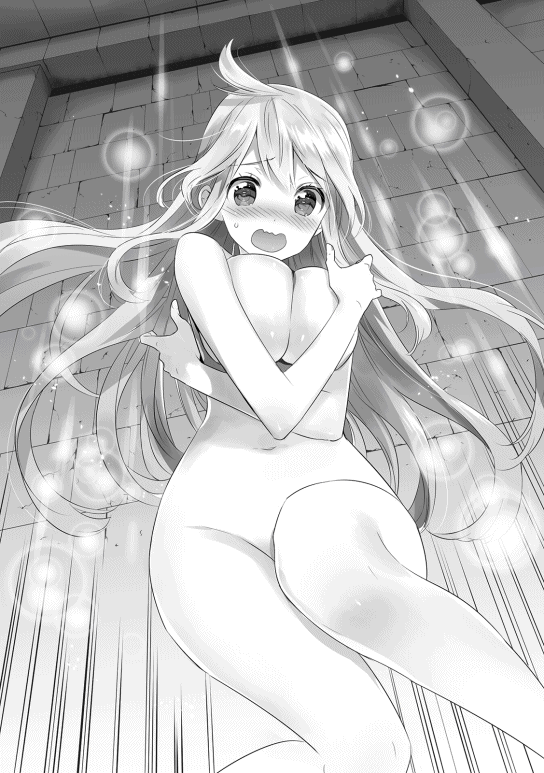
ただでさえ今しがた、カルセドニアの眩しい裸体を見たばかりなのだ。嫌でも辰巳の心臓は速く激しく鼓動してしまう。
自分の頬が火照りを持つのを自覚しながら、辰巳はとある事実に思い至る。
「あ、あれ？ これって結局、実験は......」
「まあ、失敗じゃろうのぉ。とはいえ、修正は難しくはあるまい？」
カルセドニアを意識しすぎたため、彼女「だけ」を転移してしまった。今度は彼女と彼女が身に着けたもの「全体」をしっかりと認識すれば、次は彼女「だけ」を転移してしまうことはないだろう。
「確かに失敗は失敗じゃが、これはこれで婿殿にとっては嬉しい失敗じゃな？ 婿殿がその気になれば、どんな女子 じゃろうと......それこそがちがちに鎧を着込んだ女騎士でさえ、一瞬で裸に剥けるぞい？ ほっほっほっ」
「し、しませんよ、そんなことっ!! 」
カルセドニアには聞こえないように、ぼそぼそと小声で交わされる二人の会話。
赤くなった顔を更に赤く染めて否定する辰巳に、ジュゼッペはとってもイイ笑顔を浮かべながら、にゅっと右手の親指を突き出した。
それはある日のこと。
いつものように午前中の鍛錬を終え、辰巳とバースがカルセドニアとの昼食の場になっている、神殿の庭のいつもの場所へと向かう途中のことだった。
「あ、あの......タツミ・ヤマガタ様......でいらっしゃいますか......？」
突然、背後から若い女性の遠慮がちな声が聞こえ、辰巳は振り返った。
そこには見慣れない少女が一人。年齢は辰巳より少し下だろうか。
ふわふわした栗色の髪と青味がかかった灰色の瞳の、決して美人とか美少女ではないものの、愛敬を感じさせる可愛い印象の少女だ。
「あ、はい。俺が辰巳ですけど......？」
神官服と聖印のデザインから、彼女も辰巳たちと同じ下級神官だと分かる。
だが、確かに名前を呼ばれたものの、辰巳の見知らぬ人物だった。
「あぁ、よかった......黒い髪で黒い目の下級神官だと聞いていましたけど......もしも人違いだったらどうしようかと思いましたぁ」
にこーっと微笑むその少女。だが、何かを思い出したのか、すぐに表情を引き締めた。
「申し遅れました。私、下級神官のクーリと申します。本日はカルセドニア様の使いで来ました」
「チーコ......いや、カルセの使い......？」
はい、と元気よく返事をしたクーリと名乗る少女は、カルセドニアの用件を辰巳へと伝えた。
本日、カルセドニアは急遽とある貴族の屋敷に向かうことになったらしい。
かつてより彼女と懇意にしている貴族の老婦人が、少々体調を崩したらしいのだ。
その老婦人の使用人から治療の依頼を受けたカルセドニアは、見舞いも兼ねて老婦人宅に向かったのだという。
そのため、いつものように昼食に参加できなくなったことを、顔馴染みのクーリに辰巳たちへの伝言として託したのだそうだ。
「なるほどなぁ。こっちには携帯もメールもないもんな。何か急に予定が変更になったら、こうして伝言を頼むしかないわけだ」
もしかすると意思伝達の魔法とかあるかもしれないが、カルセドニアやジュゼッペからは、そんな魔法の話は聞いていない。
仮に存在するのなら、カルセドニアのことだから絶対に辰巳にその魔法を教えるだろう。
もっとも存在はしても、カルセドニアにもジュゼッペにも使えない魔法なのかもしれないが。
「それで、これをカルセドニア様から預かってきたのですが......」
そう言ってクーリが差し出したのは、いつもカルセドニアが昼食を運ぶのに使っている、バスケットのような籠だった。
「カルセドニア様は出先で食事を供されるそうなので、タツミ様たちで食べてしまって構わないとのことでした」
「ありがとう。えっとクーリさんだっけ？ 同じ下級神官だし、俺のことは様付けなんてせずにタツミで構わないよ？」
籠を受け取りながら辰巳がそう言えば、クーリは目を丸くしながらぶんぶんと両手を顔の前で振る。
「そ、そんなわけにはいきません！ タツミ様はカルセドニア様の旦那様になる方じゃないですか！ しかも、クリソプレーズ最高司祭様自らがつきっきりでご指導しているとも聞いています。将来、神殿内で高い地位に就くだろうと言われている方と私とでは、同じ下級神官でも立場が違いますよぅっ!! 」
「えっ!? 俺ってそんな風に見られていたのかっ!? 」
クーリの言葉に、辰巳の方が逆に驚いて隣のバースへと振り向けば、バースは呆れたように肩を竦めて溜め息を吐いた。
「知らないのはおまえ本人ぐらいじゃね？ カルセドニア様とのことも含め、最近はいろいろと噂になってんぞ？」
サヴァイヴ教団の最高司祭が、孫娘の伴侶としてわざわざ遠い異国から招いた人物。
最高司祭が自ら教え導き、将来はサヴァイヴ神殿の中で高い地位、もしくは自分の後継者にと考えているらしい。
人間離れした膨大な魔力を有し、《大魔道師》の名を継ぐ人物となるかもしれない。
魔法だけではなく剣の腕も類まれな冴えを見せ、ゆくゆくは神官戦士を束ねる総戦士長となるだろう。
かつて《聖女》と恋仲だったモルガーナイクを決闘で打ち倒し、彼からカルセドニアを奪った。
などなど、大袈裟に伝わっているものや根も葉もないものも含め、辰巳に関するかなりの数の噂が神殿内だけではなくレバンティスの街にまで広がりつつある。
そして最近では王家や各貴族の家々から、辰巳に一度会ってみたいという申し込みがジュゼッペの元に寄せられているとかいないとか。
「いろんな意味で、今やおまえは時の人って奴だな」
にやにやとした笑みを浮かべたバースに言われて、辰巳は思いっ切り渋い顔をした。
「わざわざごめんなさいね。大したことないのに、慌てた使用人があなたを呼びつけてしまって......」
寝台の上に身を横たえた老婦人が、カルセドニアに向けて穏やかな笑みを向けた。
「いえ、お気になさらず。大奥様には私が小さな頃からいろいろとお世話になりましたから、何かあればいつでも呼んでください。できる限りのことをさせていただきます」
カルセドニアが老婦人に《病気治癒》の魔法を施すと、身体が楽になったのか老婦人は寝台の上で上半身を起こした。
この老婦人の名前は、エリーシア・クワロートという。
クワロート公爵家の先代の夫人で、彼女の夫であった先代クワロート公爵が神の御元に旅立ち、息子が家督を継いだ時に隠居して今はのんびりと余生を楽しんでいる人物である。
だが隠居したとはいえ、今でもラルゴフィーリ王国の貴族社会、特に貴族の夫人や令嬢といった女の世界に絶大な影響力を持つ。
その影響力は「クワロート公爵の先代夫人がその気になれば、王妃の首でさえすげ替わる」とまで言われており、ラルゴフィーリの貴族の女性たちの間では、敬愛されながらも怖れられている人物であった。
だがカルセドニアにとってみれば、彼女の祖父──血縁上は養父──の古くからの知己であったこの気さくな老婦人は、小さな頃より何かと世話になった大好きな「優しいおばさん」でしかない。
「相変わらず、あなたの魔法はよく効くわね。ところで......」
エリーシアはそれまでの穏やかな笑みを、まるで悪戯をしかける子供のような笑みへと変えた。
「聞いたわよ？ とうとうあなたも身を固める決心をしたそうね？」
「まあ。もう大奥様の耳にまで届いているのですか？」
驚きを露わにするカルセドニア。だが、その目元や口元には、幸せそうなものが浮かんでいるのを、エリーシアははっきりと見て取った。
「そう......。どうやら、よき伴侶と巡り会えたみたいね。本音を言えば、あなたには私の孫の誰かと一緒になって欲しかったのだけれど......」
これまで、エリーシアは何かとカルセドニアに縁談を持ちかけていた。
彼女の孫たちを始め、貴族の中でも特に将来有望な令息たちと、カルセドニアを結びつけようとしていたのだ。
これはサヴァイヴ神殿の《聖女》を血族に取り込もうという政治的な野心ではなく、単に適齢期も後半にさしかかったカルセドニアを心から心配してのこと。
それが分かっているだけに、カルセドニアもジュゼッペもエリーシアの持ってくる縁談だけは、他の縁談とは違って断る度に心苦しい思いを感じていた。
「でも、今のあなたの表情 を見れば、野暮なことは言わない方がよさそうね。ねえ、聞かせてくれるかしら？ あなたが選んだ男性がどんな素敵な方なのかを」
「はいっ!! 」
そして、カルセドニアは本当に嬉しそうに、伴侶となる男性のことを語って聞かせた。
最初こそはその話を楽しそうに聞いていたエリーシアだったが、延々と語るカルセドニアの話を聞いている内に、その笑みが徐々に引き攣ったものへと、そしてげんなりとした表情に変わるのにそれほどの時間は必要なかった。
クーリに礼を言って別れた辰巳とバース。
彼らは今、当初の目的地である庭ではなく、神殿内の食堂へと向かって歩いていた。
カルセドニアが一緒ではないのなら、たまには食堂で食べようかということになったのだ。
クーリが届けてくれたカルセドニアの籠をぶら下げながら、食堂へと足を踏み入れる二人。
丁度食事時ということもあり、食堂の中はかなり混み合っていた。とはいえ、空席がまるでないほどでもない。
さて、どこに腰を落ち着けようか、と辰巳とバースが辺りを見回していると、ある人物が二人の存在に気づいて声をかけてきた。
「あれ？ タツミとバース？ おまえらはいつものように、カルセドニア様と一緒に昼飯じゃなかったっけ？」
声のした方へと辰巳たちが振り向けば、そこにはとてもよく似た顔が三つ並んでいた。
「ニーズとサーゴとシーロ？ おまえたちもここにいたのか」
それは、辰巳とバースにとっては同期生とも言える、共に神官戦士としての訓練を受けている見習いたちだった。
ちなみにこの三人、そっくりな顔をしているが三つ子ではなく、年子の兄弟である。
焦げ茶色の髪と明るい茶色の瞳は三人とも共通で、一番年長のニーズが十七歳、サーゴが十六歳、シーロが十五歳。
彼らの生家は〔ドワイエズ武具店〕という、魔獣狩り相手に武具を販売する商売をしている。
このレバンティスの街でも古くから続く老舗の一つで、店主が腕のいい鍛冶師ということもあり、多くの魔獣狩りたちが出入りしている。
三兄弟はバースのような住み込みではなく、自宅から通いでサヴァイヴ神殿へと毎日やって来ていた。
当初はサヴァイヴ教団に籍はなく、神官戦士の訓練を目当てに神殿へと通っていたのだ。
現代の日本よりも遥かに危険に満ちたこの世界では、一般市民の中にも身を守る術を求める者たちがいる。
そんな者たちに、神殿は武器の扱いなどを教えてくれる。
だが、大地と豊穣の神であるサヴァイヴ神の神殿に、武器の扱いを求めて訪れる者はあまりいない。
身を守るために武器の扱いを求める者は、太陽と光を司る神であり、そこから法の守護神であり戦神としての側面も持つゴライバ神の神殿に赴くことが多いからだ。
ニーズたちのようにサヴァイヴ神殿にわざわざ神官戦士の訓練を受けに来る者は、相当な変わり者と言えるだろう。
彼らの実家である武具店は長男が継ぐため、三兄弟は将来は魔獣狩りにでもなろうかと考えて、サヴァイヴ神殿で訓練を受けていた。
だが、神官戦士の見習いとなったことを切っ掛けに、正式にサヴァイヴ教団に入信し、辰巳と同じ下級神官の位を授けられていた。
彼らがゴライバ神殿ではなくサヴァイヴ神殿を選んだのは、実家から近かったことと合わせて、もしかしたら高名なサヴァイヴ神殿の《聖女》とお近づきになれるかもしれないという、年頃の少年らしい不純な目的からである。
もっともその不純な目的は、タツミと親しくなったことで想像していた以上に達成してしまったのだが。
そんなニーズたちに手招きされ、辰巳とバースは丁度空いていた彼らの隣の席に腰を落ち着ける。
「それで、どうしたんだ？ カルセドニア様は一緒じゃないのか？」
「それがチーコは急に治療の依頼が入ったとかで出かけたらしいんだ。それで俺たちも今日はこっちへ来たってわけ」
籠の中からカルセドニアが作ってくれた昼食を取り出しつつ、辰巳がニーズたちに説明する。
だが、ニーズたち兄弟は辰巳の説明など上の空で、机の上に置かれた弁当を無言で凝視していた。
机の上に置かれた弁当。それはカルセドニアが作ってくれるいつものサンドイッチだ。その他には、梨によく似た味と食感の果物を切ったものも入っている。
料理そのものは素朴だが、料理上手なカルセドニアの作るサンドイッチはとても美味いと、辰巳にもバースにも好評であった。
「今日も美味い飯 をありがとうございます、カルセドニア様。俺は一生あなたに頭が上がりません」
手を組み合わせ、神に祈りを捧げる時の姿勢になるバース。だが、今の彼の祈りは神ではなく《聖女》に捧げられているのだろう。
そして、慣れた手付きで机の上のサンドイッチを掴み、ぱくりと頬張る。
その様子を、無言のままじーっと見つめるニーズたち三兄弟。その表情は今にも涎を垂らさんばかり。
「あー......よかったら、ニーズたちも食べる......か？」
辰巳が彼らの方へとサンドイッチをいくつか移動させると、三兄弟の顔が揃って輝いた。
『ごちになりますっ!! 』
三つの声が見事に重なり、まるで飢えた野獣のようにサンドイッチに群がる三兄弟。
「こ、これがカルセドニア様の手作りの......」
「美味いっ!! カルセドニア様が作ったかと思うと、余計に美味く感じるっ!! 」
「ありがとう、タツミ！ いや、タツミ様っ!! こんな美味い料理が毎日食べられるのなら、僕はタツミの奴隷になってもいい......いや、どっちかっていうとタツミじゃなくてカルセドニア様の奴隷になりたい......」
「いや、俺もチーコも奴隷なんていらないから」
辰巳が即座に突っ込みを入れると、バースと三兄弟が笑い声を上げ、辰巳も同じように笑う。
確かにカルセドニアとの暮らしは、辰巳にとっても楽しいものである。
辰巳とカルセドニアが暮らす家は、辰巳にとって心落ち着く居心地のいい空間であることは間違いない。
だが、こうして気の置けない同性の友人たちと馬鹿話をして盛り上がるのは、カルセドニアと一緒の時とは別の楽しさがあった。
言うならば、学校の教室で同級生たちと交わす他愛のない会話のように。
考えてみれば、今ここにいる五人は年齢も近く、日本で言えば丁度高校生ぐらいの年頃である。
高校生ならば、教室でこのような馬鹿な会話をするのは自然なことだろう。
『最近、このクラスの中で彼女ができた奴がいるそうだぜ？』
『このグラビアアイドル、いいカラダしているよなぁ。現物をナマで拝んでみてぇ』
『学校から駅へ向かう途中に、美味いラーメン屋ができたってよ。帰りに食べていかね？』
『なあなあ、おまえ、いつになったらあの娘 にコクんの？ 早くした方がいいと思うぜ？』
高校生ならば、ごく当たり前のそんな会話。
だが、辰巳にはそんな会話をした経験はない。入学した高校で浮いた存在だった彼に、そんな親しい友人はいなかったのだ。
しかし今、暮らす世界は違ってしまったが、辰巳の周囲には同じような年頃の仲間たちがいる。
──バースやニーズたちと出会えたのも、チーコがこちらの世界に呼んでくれたおかげだよな。
元の世界では得られることのなかった同性の友人たち。
彼らに出会えたことを改めてカルセドニアに感謝しながら、辰巳は仲間たちと楽しい一時を過ごしていった。
「ちょっと、クーリ！ さっきのは一体誰なのっ!? 」
カルセドニアに言われて辰巳に弁当を届けたクーリは、今日の自分の受け持ち部署に戻る途中だった。
神殿の様々な雑用をこなす下級神官。やはり男性の下級神官は、水汲みや荷物運びなどの力仕事を任される場合が多い。
一方、女性の下級神官は掃除や調理場での仕事などを割り振られることが多い。今日のクーリの担当は治癒所の手伝い。怪我や病気などで神殿を訪れた患者の、世話や対応をするのが仕事だ。
治癒所の担当になる時はカルセドニアの手伝いをすることが多く、治癒所におけるクーリはカルセドニアの直属の部下のような扱いであった。
そんなクーリを神殿の廊下でいきなり呼び止めたのは、彼女と同じ数人の下級神官の少女たち。彼女たちはクーリと一緒にこの神殿に入った、いわゆる同期の友人と呼べる存在だ。
「さっきクーリが黒髪の男の人に渡していたの、あれってお弁当よね？ もしかして、あの下級神官って......」
「クーリにお弁当を渡すような相手がいたなんて......」
「............クーリに先を越されるとは......不覚......」
「ちょ、ちょっと、みんな何言っているのっ!? あの人は......タツミ様はそんな人じゃないよっ!! 」
頬を真っ赤に染め、クーリは必死に否定する。だが、彼女以外の者たちからすれば、クーリのそんな態度は逆効果以外のなにものでもないわけで。
「ふーん、あの下級神官、タツミって言うんだ。しかも、『様』まで付けちゃうんだ？」
「見たこともない髪と目の色だけど、異国の人？」
「どういう切っ掛けであの男の人と付き合うことになったの？ 正直に吐きなさい？」
好奇心で瞳をきらきらと輝かせながら、友人たちはクーリに詰め寄る。
世界は違えども、やはり年頃の少女たちにとって、友人のコイバナは盛り上がるものの一つのようだ。
「だ、だからっ!! タツミ様はカルセドニア様の旦那様になる人なのっ!! あまり迂闊なことを言うと、カルセドニア様に怒られちゃうからねっ!! 」
クーリの言葉に、思わずぽかんとした顔をする友人たち。しかし、彼女の言葉の意味が脳に浸透していくにつれ、友人たちの顔には驚愕が浮かんでくる。
「え？ カルセドニア様......って、えええええっ!? 」
「じゃ、じゃあ、さっきの黒髪の下級神官が、モルガーナイク様を打ち負かしたって噂の......」
「噂では異国から来た絶世の美形だって話だったけど......確かに黒髪黒目は異国の人らしいけど、見た目は............ねぇ？ 本当にさっきの男の人が、カルセドニア様の結婚相手なの？」
「うん、間違いないよ。さっき私がタツミ様に渡したお弁当、あれってカルセドニア様の手作りで、直接カルセドニア様からタツミ様に渡すようにって頼まれたし、下級神官でありながら最高司祭様から直々に教えを受けているって噂も本当らしいし」
しかも、クーリはカルセドニアが辰巳のことを、「ご主人様」と呼んでいることまで知っているし、そもそもただの下級神官が、サヴァイヴ教団の頂点に立つ最高司祭から直接教えを受けるはずがない。
「なるほど......じゃあ、『最高司祭様がカルセドニア様の結婚相手として、異国の者を招いた』って噂は本当だったのね」
「しかも猊下 から直接教えを受けているとなると、その人って異国でも凄く身分が高いってことじゃない？ 下手をすると、異国の王族って可能性も......」
「そういえば、カルセドニア様に求婚した者の中には、この国の王族もいたって噂を聞いたことがあるわ」
「でも、そんな人がどうして下級神官なの？ 身分のある人なら、もっと上の位でも不思議じゃないでしょ？」
少女たちは、廊下の隅に固まってわいわいと会話を交わす。
もしも彼女たちの今の姿を辰巳が見れば、「まるで女子高生か女子中学生の会話みたいだ」と思ったことだろう。
学生のようなノリになるのは、何も男性ばかりではないようだった。
しばらく後、通りかかった上役の司祭に廊下で話し込んでいるのを見つかり、彼女たちは大目玉をくらうのだが、それもまた、辰巳の思う「学生のノリ」に違いなかった。
「............ありがとう。あなたの伴侶となる男性のことは凄くよく分かったわ......」
疲れた表情を隠すことなく、エリーシアが言う。
「申し訳ありません......私としたことが、つい調子に乗ってごしゅ......いえ、タツミ様のことをあれこれとお話ししてしまって......大奥様の体調も考えずに......」
肩を落とし、恐縮することしきりのカルセドニア。
「気にすることないわ。それに、あなたがどれだけそのタツミという殿方を好きなのかがよぉぉぉく分かったし。ふぅ、ごちそうさま」
「ひょえぇぇ......」
赤く染まった頬を両手で押さえるカルセドニアを、エリーシアはちょっとだけ意地の悪い笑みを浮かべながらも、それでいて優しく見つめた。
その後しばらく、食事を摂りながら取り留めもない世間話を交わした後、カルセドニアはエリーシアの屋敷を後にした。
カルセドニアを乗せたサヴァイヴ神殿の馬車が遠ざかっていくのを自室の窓から見送りながら、エリーシアはカルセドニアが惹かれたというタツミという青年について考えていた。
エリーシアも、幼い頃からカルセドニアを知っているだけあって、彼女が昔から口にしていた「夢の中の少年」については何度も聞かされていた。
その「夢の中の少年」を、カルセドニアは本当に召喚してしまったという。
以前から彼女が召喚魔法の研究をしていたことは知っていたが、まさか本当に召喚を実現させてしまうとは。
さすがのエリーシアも、それを聞かされた時は開いた口が塞がらなかったほどだ。
もちろん、エリーシアに辰巳が召喚された存在だと他言するつもりはない。
伝説の召喚魔法を成功させたとなれば、カルセドニアが今以上に注目されるだろうことは想像するまでもないからだ。
しかしエリーシアには、その召喚されたタツミという青年がどうしても気にかかった。
これまで彼女が知る限り、まともな恋愛などしたことがないカルセドニアである。少し女の扱いに慣れた男ならば、そんなカルセドニアを手玉に取ることなど造作もないだろう。
カルセドニアの想いが、幼い頃より「夢の中の少年」に向けられていたことをエリーシアは十分承知している。
だがその「夢の中の少年」が、カルセドニアが言うように誠実な男とは限らないではないか。
「......これはそのタツミという青年を、少し調べてみないといけないわね......誰かいるかしら？」
エリーシアがぱんぱんと手を叩けば、すぐに扉が叩かれて初老の男性が姿を現した。
彼はエリーシアに仕える使用人を束ねる立場の人物で、彼女が最も信頼している人物でもある。
エリーシアの命ならば、どんな非合法なことでもする「忠臣」。それが彼だ。
「サヴァイヴ神殿のタツミ・ヤマガタという黒髪黒瞳の下級神官の人となりを大至急調べなさい。方法は問わないわ」
部屋に入ってきた使用人に振り向くこともなく、エリーシアは手短に命じる。
命じられた使用人もまた、一言「御意」と口にすると、音もなく一礼を残してエリーシアの部屋を後にする。
遠ざかる気配を察知しながら──主人に分かるようにわざと気配を発しながら──、エリーシアは誰に言うでもなく一人呟く。
「タツミ・ヤマガタ......ね。あのジュゼッペも認めているようだから、おかしな男ではないとは思うけど......あれでジュゼッペも孫娘には甘いからねぇ。もしも......もしもカルセをその男が騙しているようなことがあれば......」
孫同然に可愛がってきたカルセドニア。そのカルセドニアを万が一その男が騙しているようなことがあれば。
たとえどれだけカルセドニアに恨まれようが、エリーシアは二人の仲を裂くつもりでいた。
そして、カルセドニアを騙した男を、エリーシアは決して許さない。
「......その時は覚悟しなさい。私の持てる全てを使って、存在そのものをこの国から消し去ってあげるわ」
「な、なにっ!? 《聖女》に......カルセドニアに婚約者だとっ!? 」
配下の者の報告を聞き、彼は驚愕とも怒りともつかない表情を浮かべた。
年は二十歳前後か。燻んだ金髪に丁寧に櫛を入れた、なかなかに整った容貌の長身の男性である。
身に着けている物も一目で上等だと分かる物ばかり。
それはすなわち、彼が支配者階級──貴族の一員であることを物語っている。
「か、カルセドニアに婚約者......？ ま、間違いないのか......？」
「は、はい......。近頃、サヴァイヴ神殿や市井で囁かれている噂でありますが......かなり信憑性の高い噂のようです」
主である人物の顔色を窺いながら、その噂話を持ち込んだ男は更に言葉を重ねる。
「し、しかも......既にカルセドニア様は......そ、その婚約者らしき男と......い、一緒に暮らしているとか......」
「な──っ!? 」
男が目を見開く。
これまで彼が何度も何度も結婚を申し込んできた相手──サヴァイヴ神殿の《聖女》、カルセドニア・クリソプレーズ。
そのカルセドニアが、自分の求婚を受けるどころか他の男と婚約し、しかも既に一緒に暮らしているとは。
男は怒りのあまり、一瞬とはいえ視界が真っ赤に染まる。
「な、何者だ......？ 何者が私のカルセドニアを奪ったのだ......？」
「は......そ、それが......噂によりますと、異国から渡ってきた平民だとか......」
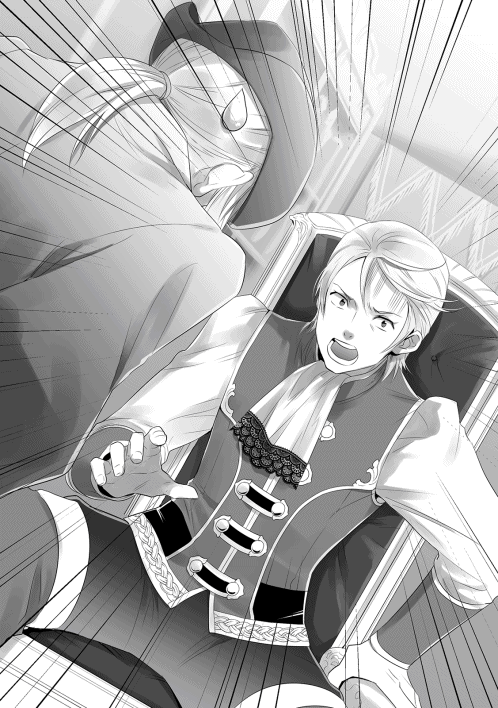
「へ、平民だと......？ このラルゴフィーリ王国に代々続く、ガルガードン伯爵家の次期当主である、このラーライク・ガルガードンの求婚を断っておきながら、《聖女》の選んだ相手が平民だと......」
どん、と大きな音が部屋に響く。部屋の主である男、ラーライク・ガルガードンが力任せに手近にあった小さなテーブルを蹴り飛ばしたのだ。
蹴り飛ばされたテーブルは、勢いよく壁にぶつかって粉々になる。
辺りに飛び散るテーブルの破片を気にすることもなく、ラーライクは大きく肩を上下させた。
「あ、あの、ラーライク様......？ へ、平民とは言っても、サヴァイヴ神殿の最高司祭様がつきっきりで教育し、ゆくゆくは最高司祭の地位をその者に譲るのではないかとの噂もあるほどで......け、決してただの平民というわけでは......」
配下の男が更に言葉を重ねるが、怒り心頭のラーライクには聞こえていない。
「おのれ......あの目障りな《自由騎士》が神殿からいなくなり、これで《聖女》は確実に私のものになるはずだったものを......平民だと？ 平民が貴族であるこの私から《聖女》を奪っただと......？」
ラーライクは血走った目を、傍らに控える配下に向けた。
「調べろっ!! 大至急、その平民について調べ上げるのだっ!! そして何としても《聖女》と別れるように仕向けろっ!! 弱みを握ろうが暴力で脅そうが、金を掴ませようが方法は問わんっ!! 」
主から命を受けた男は、これ幸いとばかりに一目散に部屋から出ていく。このまま部屋に留まれば、ラーライクからどんな八つ当たりをされるか分かったものじゃない。
配下の男がいなくなり、ラーライクは収まらない怒りに任せて部屋の中の調度品を手当たり次第に破壊していく。
彼の部屋は、金にものを言わせた実に絢爛豪華な部屋だった。
配置された家具は高級品ばかり。飾られた調度品も、どれもこれも一流の職人の手によって作り出された逸品である。
彼の部屋に置かれた家具や調度品の総額は、一般市民が十数年は遊んで暮らせるぐらいの金額になるだろう。
だがそんな数々の芸術品たちも、何も考えずにただ集められ並べられているだけなので、「品のよさ」という観点からは一歩も二歩も遠ざかっていたが。
机の上に飾られていた高価な陶器製の花瓶を床に叩きつけて割り、壁に飾られていた高名な画家が描いた絵を短剣で切り裂き、床に敷かれた珍しい魔獣の毛皮を乱暴に踏みつける。
ガルガードン家に仕える侍女や使用人が、とばっちりを受けてはたまらないと怯えてラーライクの部屋に近づくのを躊躇うのを余所に、ラーライクは嵐のように自分の部屋を破壊する。
やがて、無駄に豪華だった部屋は、見るも無惨な姿を晒すことになる。
辰巳の目の前に立つのは、彼らの教官であるオージン戦士長。
今、辰巳とオージンの二人がいるのは、神官戦士たちが日々の鍛錬に勤しむ鍛錬場。その鍛錬場の中央で、二人は互いに武具を身に纏って対峙していた。
辰巳は神官戦士見習いの制服とも言える簡易的な革製の鎧と、すっかり手に馴染んだ訓練用の剣と盾。
対するオージンはと言えば、神官戦士、それも戦士長の位にあることを示す聖印の刻まれた板金鎧。その手には長柄の戦斧を両手で構えている。
「じゃあ、そろそろ始めるか。用意はいいか、タツミ？ 先程も説明したが、最初は防御に専念しろよ？」
「はい！ 分かりました！」
オージンの問いかけに、元気に応えるタツミ。そんな彼らを遠巻きにするように、バースやニーズたち兄弟、先輩の神官戦士たちまでが、固唾を飲んでタツミとオージンを見つめていた。
もちろん、その中にはカルセドニアの姿もある。
彼女の紅玉 のような瞳は、心配そうな光を浮かべてじっと辰巳へと向けられて微動だにしない。
「よし、じゃあ......いくぜ！」
言い終わるや否や、オージンが放たれた矢のように駆け出し、一気に辰巳との距離を詰める。
彼我の距離を詰めたオージンは、大きく振りかぶった戦斧を辰巳の頭上へと振り下ろす。
今、オージンが使用しているのは、辰巳が使っているのと同じ訓練用に刃引きされた戦斧である。
だが、その重量は実戦用のものと変わることはなく、たとえ刃がなくともまともに当たればその重量だけで大怪我を負うだろう。
辰巳は、襲いくる戦斧の軌道を冷静に見極める。
そして、戦斧の軌道上に左手に装備した盾を素早く割り込ませた。
辰巳は盾をしっかりと構えながら、自分へと振り下ろされる戦斧から目を離すことなくじっと見据える。
次の瞬間、どん、と大きな音が鍛錬場に響く。音の原因はオージンの戦斧と辰巳の盾が激突したから──ではなく、オージンの戦斧が辰巳の足元の地面に激突したからだ。
「くっ......！」
仕掛けた攻撃が外れたと理解した瞬間、オージンは後方へと大きく飛び退いた。
そして、相変わらず盾を構えたままの辰巳をぎろりと睨む。
確かに手加減はしたものの、それでも辰巳はオージンの一撃を躱 した。
いや、先程のは躱されたのではない。受け流されたのだ。
盾と戦斧が接触する瞬間、辰巳は盾を操作してオージンの攻撃を横へと受け流した。
そのためオージンの戦斧は、辰巳の身体に触れることなく彼のすぐ横の大地を抉るだけに終わったのだ。
もしもこれが実戦ならば、攻撃を受け流された瞬間、オージンはがら空きになった横腹を剣で貫かれていただろう。
その事実に思い至り、オージンは人知れず小さく震えた。
怖れたのではない。喜んだゆえに。
──鍛錬中から気づいてはいたが、こいつは盾の扱いが上手いな。
どうやら、辰巳は攻めよりも守ることに適しているようだ。
がっちりと守りを固めて敵からの攻撃を耐え凌ぎ、生じた僅かな隙を見逃さずに突く。いわゆる反撃 狙いが辰巳の基本の戦術。
今、辰巳は顔の下半分から腹辺りまでを盾で隠した状態で立っていた。
身体を横にして、オージンと相対する面積を少しでも小さく。
左手の盾を前に押し出して、その陰に隠れるように構える。そして、盾と身体の更に陰に、右手に持った剣を隠すように構えている。
オージンからは、辰巳の剣は完全に見えない。そのため、辰巳の攻撃の初動が読みにくい。
もちろん、反撃狙いの戦術もこの構えも、辰巳に教えたのはオージン自身である。
だが、こうして直接対戦してみると、辰巳のこの構えと反撃狙いの戦術がどれだけ厄介であるかを痛感させられる。
しかも、オージンの得物はどうしても動作が大きくなりやすい長柄の両手斧だ。動作が大きくなれば、どうしたって攻撃を読まれやすくなる。
しかも、オージンから直接狙える場所は足と脳天ぐらいしかない。だが、それは辰巳だって承知しているだろう。そんな所へ攻撃をしかけても、あっさりといなされて隙を作るだけだ。
──盾の扱いが巧みな奴に守りに入られると、本当に厄介なもんだな。だが俺が教えたこととはいえ、ここまでモノにするとは思ってもみなかったってもんだ。
内心でそう呟きながらも、オージンは嬉しそうな笑みを浮かべる。
師としては、教え子の成長はやはり嬉しい。しかも、辰巳は実に素直な教え子で、こちらの指示に何の不満を漏らすこともなく黙々とひたすら鍛錬に打ち込んできた。
彼ら──辰巳とその同期たちが、神官戦士の見習いとして鍛錬を始めてかなり経つが、鍛錬の成果は着実に現れている。
嬉しそうな笑みを好戦的な笑みに切り替え、オージンは竜巻のような連続攻撃を辰巳に叩き込んでいく。
しかし、その怒涛のような連続攻撃を、辰巳は落ち着いて捌 く。
もちろん、オージンが手加減していることを辰巳は承知している。もしもオージンがその気になれば、構えた盾ごと辰巳の腕を破壊することは造作もないだろう。
それが分かっているからこそ、辰巳は落ち着いてオージンの攻撃に対処する。
教官であるオージンは、辰巳が捌ききれないような無茶な攻撃はしてこない。もしかすると、敢えて無茶な攻撃をしてくるかもしれないが、それでも大怪我をするようなものではないだろう。
これはあくまでも鍛錬であり、実戦ではないのだ。そして、この鍛錬でオージンは見極めているのだ。現在の辰巳の実力を。
左右から襲いくる連撃を盾でいなす。
頭上から降ってくる重撃を盾の角度を調整して横へずらす。
下から掬い上げる豪撃を後ろへ下がってやり過ごす。
次々に襲いかかってくる攻撃を捌きながら、ふとオージンの顔を見てみると実に楽しそうに笑っていた。
随分と上達したな。
無言でそう言われたような気がして、辰巳も同じように笑う。
それを見たからでもないだろうが、それまでの猛攻を突然中止し、オージンが口を開いた。
「よし。じゃあ、次はそっちから攻めてこい。何なら、例の魔法を使ってもいいぞ？」
オージンのその言葉に、辰巳は少しだけどきりとする。どうやらオージンは、辰巳の魔法について知っているらしい。
おそらくは、ジュゼッペあたりから聞いたのだろう。
「分かりました。チーコ」
「はい、ご主人様」
辰巳に呼ばれて、観戦していたカルセドニアが彼に近寄る。
今、辰巳の腕にはジュゼッペから借りた魔力を封じる魔封具が装着されている。
この魔封具は本来、罪を犯した魔法使いに対して使用するものだ。
そのため、専用の鍵を使わないとこの腕輪は外れない。その鍵をカルセドニアに預けてあった。
「がんばってくださいね」
鍵を使って辰巳の腕から魔封具を外しつつ、カルセドニアが辰巳を激励する。
「ああ。だけど、もしも怪我をした時はよろしくな？」
「はい。任せてください」
短い応酬。だが、そこに含まれた深い絆を感じ取れない者は、この場に集まっている者の中にはいない。
互いに絶対の信頼を込めた笑顔を浮かべてしばし見つめ合い、二人は別れる。
辰巳はいつものように盾を前面に押し出して構え、カルセドニアは元の場所に戻って辰巳を見守る。
「じゃあ、教官......行きます！」
大きく息を吸い込んだ辰巳がそう宣言した瞬間、彼の姿はその場から掻き消えた。
辰巳の姿が消える。
そして次の瞬間、辰巳はオージンの目の前に現れた。
「うおっ!? 」
既に辰巳は右手の剣を振り上げている。だが、その剣が振り下ろされるより僅かに早く、オージンは大きく後ろへ後退していた。
「こ、これが猊下のおっしゃっていた《瞬間転移》か......？」
オージンが目を瞬かせながら呟いた時、既に辰巳の姿はない。
そのことに気づいたオージンが再び後ろに大きく下がるのと、辰巳が再度出現したのはほとんど同時だった。
飛び退いたオージンがいた空間を、辰巳の剣が薙ぐ。そして、剣を振り切る前に再び辰巳の姿が消滅する。
消滅と出現を何度も繰り返し、攻撃を繰り出す辰巳。
時にオージンの正面、時に背後に。更には真横、斜め前、斜め後ろ。消えては出現し、攻撃を繰り出してはまた消える。
さすがのオージンも、これには完全に防戦一方に追い込まれた。
オージンの武器は取り回しに難のある大型の両手斧である。対して、辰巳の武器は小回りの利くやや短めの剣。
オージンの武器の間合いの内側に、転移によって簡単に入り込める辰巳にとっては、相性のいい相手と言えるだろう。
それでも、オージンは巧みに戦斧を操って辰巳の攻撃を防ぐ。
辰巳の技術がまだまだ拙いとはいえ、連続する奇襲じみたこの攻撃をことごとく防ぐオージンの技量も並大抵ではない。
だが、オージンの表情から徐々に余裕が失われていく。
辰巳の振るう剣閃が、徐々にその速度を上げているのだ。
「こ......こいつは......？」
辰巳の異常なまでの剣速に、オージンが目を白黒させる。
魔法使いにだけ見える黄金の魔力光を全身から放ちながら、辰巳は更にその速度を上げていった。
「い......一体何が起こっているのですか......？」
そう呟いたのは、女性の神官戦士だった。
「か......カルセドニア様......タツミが放っている黄金の魔力光は......まさか......？」
どうやらその女性は魔法使いらしく、辰巳が全身から放っている魔力光が見えているらしい。
「はい。ご主人様の......いえ、タツミ様の魔力系統は............〈天〉です」
「て、〈天〉......っ!? 」
ざわり、と周囲にいる神官戦士たちに動揺が広がる。
過去、たった一人しかいなかったと言われている、伝説にも等しい魔力系統。それが目の前に存在していると言われれば、誰だって驚くだろう。
「た、タツミが〈天〉系統の魔法使いだと......？」
「だ、だけど〈天〉と言えば伝説の......」
周囲の神官戦士たちが、思い思いに口を開く。神官戦士の見習いとして鍛錬を始めてから、もうかなりの時間が経過している。先輩である神官戦士たちも、辰巳を含めた見習い五人のことはそれなりに見知っているし、時には打ち込みなどの相手を務める場合もある。
それでも、先輩の神官戦士たちは辰巳が〈天〉系統の魔力の持ち主であることを知らなかった。
いや、辰巳が魔法使いであることさえ知らなかった。
鍛錬中、辰巳は常に魔力を封じる魔封具を身に着けていたので、神官戦士の中にいる魔法使いも、辰巳の魔力には気づいていなかったのだ。
そんな中、バースたち辰巳と同じ見習いだけは、全く動じていない。
おそらく、以前に辰巳から彼の魔力について聞いていたのだろう。
今、見習いの四人は辰巳と教官であるオージンの対戦を食い入るように見つめている。
それは、彼らにとってもこの対戦が決して他人事ではないからだ。
神官戦士や見習いたちの反応を横目に見ながら、カルセドニアも辰巳とオージンの対戦に集中していった。
今、辰巳は転移をしていない。
完全に足を止め、ただひたすらに剣を繰り出している。
しかし、その攻撃を受け止めるオージンは防戦一方だった。
それは辰巳の剣技がオージンの技量を上回っているからではない。単純に、辰巳が剣を振る速度が異常に速いのが原因だ。
常人離れした速度で、辰巳は剣を振り続ける。
オージンは、その辰巳の剣を何とか戦斧の柄で受け止めていた。いや、オージンが受け止めているのではない。辰巳が戦斧の柄を狙って剣を繰り出しているのだ。
その証拠に、オージンには辰巳の振る剣が見えていない。ただひたすらに歯を食いしばって、辰巳の猛攻に耐えているだけ。
先程のオージンの攻撃が竜巻ならば、辰巳の攻撃は削岩機といったところだろうか。
オージンが持つ戦斧の柄の一ヶ所。その一点目がけて辰巳は剣を振る。
いくら鍛錬用の刃引きされた剣とはいえ、金属製の剣を木製の柄にぶつけ続ければ、木製の柄は徐々にダメージを受けていく。
子供の腕ほどの太さのある戦斧の柄が、異常な速度の連続攻撃を受けて見る見る削られる。
「く......こ、この......」
もちろん、その事実にオージンも気づいている。いや、辰巳の狙いが武器破壊であることまで、オージンにはっきりと分かっていた。
彼に武術を教えてきた師として、このまま辰巳にされるがままではいられない。だが、辰巳の速度についていけないオージンにはどうすることもできない。
この場から大きく飛び退いて逃げることはできるだろう。しかし辰巳には転移がある。いくらオージンが逃げたとて、すぐに転移して間合いに入られるのは目に見えている。
それが分かっているからこそ、オージンも足を止めて必死に辰巳の攻撃に耐えている。正確には、耐えることしかできないのだ。
「あれって......単なる身体の強化じゃ......ないよな？」
「ああ......あれは一体何だ......？」
辰巳の異常な速度を見た神官戦士たちが、そんな言葉を交わし合う。
そして当然ながらその質問は、居合わせた者の中で最も魔法に詳しく、そして辰巳個人をよく知るカルセドニアに向けられた。
「カルセドニア様......タツミのあの異常な速さは......あれは一体何なのですか？」
尋ねてきた神官戦士に、カルセドニアはにっこりと微笑みながらも逆に問い返す。
「あなたは〈天〉系統について、どれくらいご存知ですか？」
「え？ 〈天〉......ですか？ 〈天〉と言えば、伝説とまで言われる特殊な系統で......〈光〉や〈聖〉の最上位に位置する系統であり、時空を操る系統だと聞いたことがありますが......」
〈天〉とは、時空を司る系統である。これは間違いない。
「時空」とは「時」と「空」、すなわち「時間」と「空間」のことである。
辰巳が先程も使った《瞬間転移》は、文字通り空間を操作して移動を行う魔法である。
そして今。
辰巳が使っているのは、「空」ではなく「時」に属する魔法。自身に流れる時間に干渉し、意図的に自分の時間だけを速める魔法である。
この魔法を、辰巳の魔法の師であるジュゼッペは《加速》と名付けた。
もちろん、これもまた辰巳が外素使いだからこそ可能な魔法でもある。加速中は常に魔力が消費されていくため、辰巳でもなければあっと言う間に魔力が尽きてしまうからだ。
これまで魔法の鍛錬を行ってきたことで、辰巳も魔法の行使にかなり慣れてきている。
《瞬間転移》と《加速》、そして拳などに魔力を溜めて爆発させる《魔力撃》の三つは、現在では完璧ではないものの、それなりに自由に使えるようになった。
逆に言えば、今の辰巳が自在に使える魔法はこの三つだけであり、その他で使えるのはまだまだ発動に時間のかかる《自己治癒》──文字通り自分にしか効果のない治癒魔法──ぐらいである。
また、武術鍛錬も並行して行ったことで体力も上昇しており、今の辰巳ならば魔法を使う際の体力の消耗にもかなり耐えることができるだろう。
「私もお祖父様も......いえ、クリソプレーズ最高司祭様も、〈天〉は〈光〉や〈聖〉の最上位だと以前は考えていました。ですが、実際にタツミ様の〈天〉の魔法を間近で見ているうちに......最高司祭様はそうではないのでは、と考えるようになられたようです」
〈天〉が〈光〉〈聖〉の上位だと思われていた理由は、〈魔〉に対する有効さからだ。
〈魔〉に最も効果のある魔法と言われている《魔祓い》。この《魔祓い》は〈光〉〈聖〉に属する魔法である。
そして、過去の文献や言い伝えによると、〈天〉は〈光〉〈聖〉以上に〈魔〉に対して有効だったという。
もしかするとこれは、かつて〈天〉の使い手であったティエート・ザムイの功績を、より大袈裟に伝えたものかもしれないが、実際に辰巳はかなり力の強い〈魔〉を倒している。
このことから、〈天〉が〈光〉〈聖〉以上に〈魔〉に対して有効なのは間違いないだろう。
「タツミ様が使う《瞬間転移》も《加速》も移動に関係したもので、〈光〉や〈聖〉に見られる治癒系や光系などとは全く別のものです。そこから最高司祭様は、〈天〉が独立した系統であるとお考えになったようですね」
辰巳が使う魔法の中で、《魔力撃》と《自己治癒》は移動系ではないものの、例えば〈火〉の中に《灯り》が、〈水〉の中に《治癒》があるように、副次的なものだとジュゼッペは考えているようであった。
以上のカルセドニアの説明を聞いた神官戦士たちは、改めて辰巳へと目を向ける。
そして、削岩機のように戦斧の柄を削っていた辰巳の剣が、遂に柄を削りきったのは丁度その時であった。
「よし、そこまでっ!! 」
戦斧の柄が破壊された瞬間を見計らってオージンは後ろに数歩下がると、停止の合図を出した。
それに従った辰巳は、肩で息をしながらも姿勢を正し、オージンに対して一礼する。
さすがにここまで長時間の《加速》の使用は、辰巳にとってもかなりの負担だったのだ。
オージンはそんな辰巳を満足そうに眺めると、手の中の破壊された戦斧を足元に放り捨て、男臭い笑みを浮かべながら辰巳へと近づいた。
「いいだろう。おまえの見習い卒業を認めよう。今日より、おまえは神官戦士見習いではなく、神官戦士の端くれだ」
「はい！ ありがとうございます！」
そう。本日のオージンとの対決はただの鍛錬や模擬戦ではなく、神官戦士への昇進を決める、いわば「卒業試験」だったのだ。
バースやニーズたちが真剣に辰巳とオージンの戦いを見ていたのも、これから彼らも同じ「卒業試験」を受けるからだ。
オージンは辰巳の目前まで来ると、静かに右手を差し出した。
「今日までよくがんばった。だが、神官戦士と認められたからといって、それで鍛錬が終わったわけじゃない。しかも、おまえが目指すのは、単なる神官戦士ではなく魔祓い師だろう？ 魔祓い師は通常の神官戦士よりも更にきつい仕事が回ってくる。今後も日々の鍛錬を怠ることなく、目標をしっかりと見据えていけ！」
「はい！ 今日までありがとうございました！」
辰巳はオージンの右手をしっかりと握り締める。
背後からは、バースたちや先輩の神官戦士たちから祝福の声が上がっているのが聞こえてくる。
辰巳がそれに応えようと背後を振り返った時、その視界一杯に白金と白のナニかが飛び込んできた。
「ぅわっぷ......っ!? 」
飛び込んできた白金と白のナニかは、辰巳の頭をその豊かな胸の双山に押しつけるようにして抱き締める。
「おめでとうございます、ご主人様！ ご主人様ならば、絶対に合格すると信じていました！」
危うく白金と白のナニか──カルセドニアの胸で窒息するところだった辰巳だが、彼女が抱擁を解いたことで何とか一命を取り留めた。
結果的に、互いに真っ正面から抱き合う形となった辰巳とカルセドニアへ、周囲の神官戦士たちから冷やかしと祝福の声がかかる。
オージンも、今日ばかりはと大目に見るつもりのようで、どこか優しげな眼差しで二人を見つめている。
「そ、それで......ですね？」
顔を赤く染め、至近距離から上目使いで辰巳を見るカルセドニア。そして、彼女のどこかよそよそしい雰囲気に内心で首を傾げる辰巳。
「こ、これはそ、その......ご主人様が見習いから卒業されたお祝いと言いますか、祝福と言いますか......」
カルセドニアは辰巳の顔から視線を逸らし、それでもちらちらと辰巳の顔を見る。
「改めて......おめでとうございます......」
意を決したのか、カルセドニアはそれまで以上に辰巳に身体を密着させると、少しだけ背伸びをしてふわりと彼の唇に自分の可憐な唇を触れさせた。
「ち、チーコ......っ!? い、今のって......っ!? 」
「えへへ。やっちゃいました」
ぺろっと舌を出すカルセドニア。改めて彼女がしたことを理解した辰巳は、それはもうすっげえ勢いで真っ赤になった。
と、そこへ背後からいくつもの衝撃が襲いかかる。
「ちくしょう、この野郎！ 見せつけてんじゃねえぞっ!! 」
「今更おまえとカルセドニア様の仲をどうこう言うつもりはないが、そういうことは人の目のない所でやりやがれ！」
「当てつけか？ それは生まれてこの方、一度も恋人ができたことのない俺への当てつけかっ!? 」
一部、本気で泣きそうになっている者もいるが、辰巳とカルセドニアを囲む先輩の神官戦士たちの視線はとても優しい。
そして、当然その輪の中には、辰巳の同期にして友人たちの姿もある。
「か、カルセドニア様......そ、その......もしも俺たちも今日の試練に合格したら......そ、その......辰巳みたいに......いや、ここでいいんでチュッとやってもらえたりしますか......っ!? 」
期待に顔を輝かせるニーズたち三兄弟。その中でニーズは指先で自分の頬を指し示している。
その傍らでは、バースが困ったような顔をして肩を竦めていた。
そして。
「嫌です」
にっこりと。かつ、きっぱりと。
僅かな期待でしかなかったが、それでも面と向かって拒否されて、ニーズたち兄弟が目に見えて落ち込む。
「......うん。分かっていたさ。分かっていたけどさ......」
「改めて......タツミが羨ましい......」
「あ、あの......頬に口づけがだめなら、そ、その......踏みつけるだけでもいいんですが......」
最後に何やら不穏な言葉が聞こえたような聞こえなかったような。
何はともかく、辰巳が自分の目標に向かって一歩前進したことは間違いなかった。
「なあ、タツミとバース。今日は俺たちが正式に神官戦士となった記念すべき日だ。ここはひとつ、これから酒場にでも繰り出して派手にお祝いといかないか？」
サヴァイヴ神殿の建物から出て門へと向かう途中、ニーズがそう提案した。
辰巳と同じように無事に「卒業試験」に合格したバースとニーズたち三兄弟は、晴れて神官戦士として認められた。
その記念と合格祝いに、これから飲みに行こうというニーズの提案は、ある意味で当然な成り行きだろう。
しかし、辰巳がニーズのこの提案に頷くことはなかった。
「今日は俺の合格祝いに、チーコが腕によりをかけて料理するって張り切っていたからなぁ......悪いけど、また今度付き合うよ」
一足先に家に帰ったカルセドニアの様子を思い出し、辰巳は申し訳なさそうにニーズの提案を断る。
「そうか、それは仕方ないな」
その時のカルセドニアのとても嬉しそうな様子は、バースも三兄弟も見ている。
そのため、彼らとしてもあまり強引に辰巳を誘うつもりはない。
自宅へと早足で向かう辰巳の背中を見送ったニーズは、次にバースへと声をかけた。
「じゃあ、バースはどうだ？」
「悪いが、俺もちょっと先約があってな」
にやり、と意味深な笑みを浮かべながら、バースもニーズの誘いを断る。
「ま、まさかバース......おまえにも女がいるとか言わない......よな？」
驚いた表情を浮かべるニーズだったが、バースは余裕のある笑みを崩さない。
「さぁてな？ そこは想像に任せるさ」
「くっ、まかさ、バースにも女がいたとは......」
「いいなぁ......僕も毎日踏みつけてくれる恋人が欲しいなぁ......」
心底悔しそうな様子のサーゴと、とろんとした表情を浮かべながらかなりイタいことを口にするシーロ。
「......シーロの願いが叶うのは......ちょっと難しくね？」
若干顔を引き攣らせつつ、誰に聞かせるでもなくバースは零した。
「い、いい気になるなよっ!? 家で女が飯の用意をして待っているのは、何もタツミとバースだけじゃないからなっ!! 」
びしっとバースに指を突きつけながら、ニーズが宣言した。
「俺にだって、飯を用意して待っている女ぐらい、いるんだからなっ!! 」
「へえ、そうだったのか。じゃあ、今日は早くその女のところに帰ってやれよな」
「おう！ もちろんそのつもりだぜっ!! 」
「じゃあ、俺はもう行くな。ニーズも女が待っているのなら、早く帰れよ」
三兄弟にそう言い置いたバースは、ひらひらと背中越しに手を振りながらレバンティスの街の中に消えていく。
その背中を見送りつつ、サーゴは隣のニーズに小声で囁いた。
「............兄貴。言っていて虚しくはないか？」
「お、俺は嘘は言っていないっ!! だって家には俺たちの帰りを母さんが待っていてくれるじゃないかっ!! 母さんだって女なのは間違いないし、飯だって用意してくれているっ!! 」
「確かにその通りだが......」
サーゴはがっくりと肩を落とし、盛大に溜め息を吐き出した。
その隣では。
「......ああ、そうです、カルセドニア様......できればもっと踵の高い靴で、僕の身体をぐりぐりと踏み躙ってください......」
弟が意味不明の言葉を呟きつつ、不気味に身体をぐりんぐりんと悶えさせていた。
「............俺、家を出ようかなぁ......」
サーゴが誰に言うでもなく呟いた言葉は、夜が迫った群青色の空に吸い込まれていった。
この時、辰巳やバース、そして三兄弟の誰も気づいていなかった。
偶然サヴァイヴ神殿の前を通りかかった初老の男性が、彼らの会話にしっかりと耳を傾けていたことに。
そして、一番最初に立ち去った辰巳の後を、彼と同じ速度の歩みで追いかけていったことに。
誰一人として、気づいていなかったのだ。
「それで？ 調べた結果はどうだったの？」
上品に飾られた部屋の中で、一人の老婦人が部下の報告に耳を傾けていた。
「はい、大奥様。タツミ・ヤマガタという人物ですが、おかしな噂などはありませんでした。今住んでいる家の近所でも評判はよく、カルセドニア様とも仲睦まじく、似合いの二人だと言われております」
「そう。では、何かおかしな所に出入りしているなんてことは？」
「そちらも調べたましたが、タツミという者が頻繁に通っている娼館や酒場、賭場などはありませんでした。当然ながら、入れ込んでいる娼婦も存在しません」
現代日本と違い、こちらの世界は全般的に娯楽が少ない。
時には旅の劇団などが上演する演目を楽しんだり、吟遊詩人が紡ぐ物語に耳を傾けることもある。
だが、それでも庶民の、それも成人男性の一般的な娯楽と言えば、やはり「飲む」「打つ」「買う」であった。
酒、賭博、そして娼婦。貴族ともなるとまた違ってくるが、庶民の男性の娯楽ではそれらが代表的で、仕事帰りに友人や仕事仲間と共に一杯ひっかけに行くのは何よりの楽しみなのだ。
老婦人とて、タツミという若者が少しぐらいそれらの娯楽に手を出していたとしても、それほど咎めるつもりはない。だが、娼館に頻繁に出入りしていたり、酒や賭博で身を持ち崩すほどとなれば話は別だ。
過去、酒や賭博、そして女で身を持ち崩した男の例は、庶民、貴族を問わずいくらでもある。
だが、調べさせたところによると、タツミという若者はそれらに一切手を出していないらしい。
毎朝決まった時間に神殿に出かけ、勤めを果たした後は真っ直ぐに自宅に帰る。時々、街の市場などで買い物をすることもあるようだが、買っているもののほとんどが食材だと言うから、カルセドニアに頼まれて買いに行くのだろう。
「......そのタツミという者、年齢の割には固いと言うか、どうにも真面目すぎるわね。もしかして、わざとそう思わせているのでは......？」
やはり、この世界の人間と現代日本の人間、それも未成年に分類される辰巳とでは、メンタル面では大きく違う。
それが理解できない老婦人には、辰巳の行動はいっそ奇異なものに思えるのだろう。
「いえ、少なくとも、周囲の者たちや親しい友人たちには、誠実な若者であると思われているようです」
バースや三兄弟が鍛錬が終わった後に、辰巳を街の酒場に誘ったことは何度もある。
だが、辰巳はその誘いに応じたことは一度もない。
「それから、これは直接タツミという若者とは関係ないことですが......」
そう前置きしつつ、彼は更に言葉を続けた。
「どうも、我々とは別の者も彼を調べているようです」
「あら、どこの誰がタツミを調べているというの？」
「は、調べたところ、ガルガードン伯爵家の嫡男、ラーライク・ガルガードンのようでした」
「ラーライク......ああ、確か何度断られても懲りることなくカルセに求婚し続けている男ね」
老婦人も、ラーライク・ガルガードンの行動は聞き及んでいた。ラーライクが執拗なまでに、カルセドニアに執着していることも含めて。
「......ラーライクをカルセと添い遂げさせるつもりは全くないけど......タツミを調べるのには利用できるのではなくて？」
「御意」
短くそう答えた彼は、静かに部屋を後にした。
ぱたんと静かに扉が閉まる音を耳にしながら、老婦人──エリーシア・クワロート前公爵夫人は、窓の外に広がる街並みへと視線を向けた。
「............少なくとも、悪い人間ではなさそうだけど......一度、直接会ってみようかしら......」
そう口にしたエリーシアの言葉は、誰に聞かれるともなく部屋の中で静かに消えていった。
季節は移り変わっていく。
この世界に召喚された当初は、海の節──春だったが、今では節も巡って宵月の節──冬へと入っていた。
王都レバンティスの一般住宅は、赤茶色の煉瓦のようなものを積み上げて造られている。そのため王都の外観は全体的に赤茶色なのだが、雪が降り積もった今では白一色に染まっていた。
そして、変わったのは王都の外観だけではない。
辰巳の日常もまた、それまでとは大幅に変化した。
正式に神官戦士として認められたことで、神官としての身分も下級神官から上級神官へと上がった。
そもそも下級神官とはある意味で見習いでもあるので、辰巳もこれで正式な神官と認められたことになる。
それに合わせて、身に着ける神官服と聖印も、上級神官を示す物へと変更された。だが、聖印はともかく、新しい神官服に袖を通す機会は意外と少ない。
神官戦士となった辰巳は、神殿内では鎧を着用することが多いからだ。
神官戦士を示す、サヴァイヴ神の聖印が刻まれた要所に補強の入った鎖鎧。板金鎧は神官戦士の中でも隊長のみが身に着けるので、ヒラの神官戦士は全員辰巳と同じ武装である。
そして、腰には剣。これもまた、神官戦士の身分を表わすものだった。
聖印の入った鎧を身に着け、腰に剣を佩 いた神官戦士姿の辰巳に、カルセドニアがうっとりと見惚れていたのは言うまでもない。
「卒業試験」に合格した五人の元見習いたち。
彼らの内、辰巳を除いた四名は五つある分隊の内の四つに、それぞれ一人ずつ所属することになった。
なぜ辰巳がバースたちのように分隊に所属しないのかと言えば、彼は通常の神官戦士ではなく魔祓い師となるからだ。
そのため、今後は対人だけではなく対魔獣の経験も積んでいかなければならない。
辰巳は市井の魔獣狩りと同じように個人で、もしくは少人数のグループで魔獣退治の依頼を受け、魔獣と対決して経験を積んでいくことになるだろう。
友人たちとは実質的に行く道を違えたことになるが、それでも魔祓い師となることが辰巳の目標である以上は仕方ない。
時に神官戦士に混じって武術の鍛錬を続け、時にジュゼッペやカルセドニアから魔法の指導を受ける。
家に帰れば、毎日カルセドニアが笑顔と共に出迎え、彼女の作ってくれる料理に舌鼓を打ち、風呂に入って暖まった後は、カルセドニアと共にベッドに入る。
ちなみに、カルセドニアを背中から包み込むように抱き締めながら眠ると、なぜか彼女の寝相がよくなることが判明してからは、常にその体勢で眠るようにしている辰巳である。
折しも今は雪の舞い散る季節。互いの体温を心地よく感じながら、毎日ぐっすりと眠る二人であった。
忙しくも充実した日々を送っている辰巳だったが、そんな日々に波紋を投げかける者の影もまた、少しずつ見え始めるようになっていた。
「おまえがタツミとかいう奴だな？」
一日の勤めを終えた、神殿からの帰り道。突然背後から声をかけられ、辰巳が反射的に振り向くと、そこには風体のよくない大柄な三人の男たちがいた。
いかにもチンピラとかゴロツキというに相応しい見てくれの男たちだ。
棍棒のように太く、ハンマーのように大きな拳を誇示しつつ、三人の男たちは辰巳へと近づいてくる。
「ちょっと話があるんだがよ？」
「話......？ 一体何の話です？ 俺、あなたたちとは初対面だと思いますけど？」
辰巳が男たちを訝しげに見れば、男たちはにやにやと笑みを浮かべながら辰巳を取り囲むようにして立つ。
「確かに初対面だが、なぁに、そんなに手間は取らせねえって。ただ......ここじゃ場所が悪い。少し付き合いな」
太い腕を馴れ馴れしく辰巳の肩にかけながら、男たちは彼を誘導する。
彼らの視線の先には薄暗い路地。どうやら彼らの言う話とは、人目を避けてしなければならない類のものらしい。
端から見れば、ガラのよくない男たちに絡まれている青年。通りかかる人々は、好奇心や心配そうな目を辰巳たちに向けるが、そこに割って入ろうとする者はいなかった。皆、男たちが振り撒く暴力の気配を敏感に感じ取っているのだろう。
もしも辰巳が神官戦士の証である鎧を着ていたら、男たちや周囲の反応ももう少し違ったものになっていたかもしれない。
だが、この寒い季節に野外で金属製の鎧を着て歩くのはさすがにきつい。鎧下 を着込んでいても、氷のように冷えた鎧が容赦なく体温を奪うからだ。
そのため、辰巳は神殿への行き帰りは分厚い防寒具を着込んで歩き、鎧は神殿の中でのみ着るようにしていた。
男たちに半ば背中を押されるように、路地へと強引に歩かされる辰巳。だが、今の辰巳はこの世界に来たばかりの頃の彼とは違う。
背中を押されつつも、冷静に男たちの動きを観察する。どうやら男たちは辰巳が怯えていると思っているらしく、完全に油断し切っていた。
辰巳は油断している男の一人の足の甲を、思いっ切り踏みつける。
突然足を襲った痛みのため、男が思わず歩みを止めた。
その隙を突いて、辰巳はあっさりと囲みから脱出。そのまま男たちから逃げるように、彼らが辰巳を引き込もうとしていた路地へと駆け込んだ。
「ま、待ちやがれ、この野郎っ!! 」
「馬鹿が。自分から路地に逃げ込みやがったぜ！」
辰巳に逃げられて一瞬焦りを見せた男たちだったが、辰巳が自分から路地へと逃げ込んだのを見て、嫌らしい笑みを浮かべながらその背中を追いかけた。
そして、男たちが路地へと足を踏み入れた時。そこに辰巳の姿は既になかった。
「ど、どこに行きやがったっ!? 」
薄暗い路地は真っ直ぐに奥へと伸びている。そして、この路地には身を隠せるような所はない。
もしも路地の奥へと逃げ込んだのならば、その背中ぐらいは見えるだろう。
それなのに、辰巳の姿は見当たらない。
男たちはそれまでの余裕のある態度とは真逆に、焦りを浮かべながら辰巳の姿を探し求める。
周囲をきょろきょろと見回すが、やはり辰巳の姿はどこにもない。
「くそっ!! 奥か？」
「それしか考えられねえだろ！」
「足だけは速いネズミみてえな野郎だぜ！」
男たちは口々に罵りながら、辰巳の姿を求めて路地の奥へと走り去った。
「何だったんだ、あいつらは......」
ばたばたと走り去る男たちを見下ろしながら、辰巳は一人呟いた。
路地を形成する建物の屋根の上。降り積もった雪に半ば埋もれるような体勢で辰巳はそこにいた。
路地に駆け込み、男たちの死角に入った瞬間、辰巳は一旦上空へと転移、そして上空から建物の屋根を視界に入れ、その上へと再び移動し、その後は雪の中に身を伏せつつ男たちの様子を窺っていたのだ。
一旦上空へと転移したのは、路地からは屋根の上は視認できなかったからである。
当然ながら、辰巳にはあんな男たちに絡まれるような心当たりはない。
では、単なるカツアゲやタカリの標的に、たまたま辰巳が目をつけられただけだろうか。
いや、あの男たちは辰巳の名前を知っていた。つまり、辰巳個人に用があったということになる。
「よく分からないけど、しばらく用心した方がよさそうだな。チーコやジュゼッペさんにも、このことは知らせておこう」
辰巳は男たちが戻ってくるかもしれないと、屋根の上で身を伏せつつしばらく様子を見ていた。だが、結局男たちが戻ってくることはなかった。
「......帰ろうか。このままここにいても寒いだけだし......」
ぶるりと身体を震わせつつ、辰巳は立ち上がって身体に付いた雪を払う。そして、そのまま視界内の遠く離れたとある屋根へと転移した。
念のため、そのまま屋根から屋根へと転移を繰り返し、辰巳は家へと向かうのだった。
辰巳がそんな遭遇を果たしていた頃。
サヴァイヴ神殿の最高司祭であるジュゼッペは、とある人物の元を訪れていた。
「久しいの。カルセから聞いたのじゃが、体調を崩しておったとか？ もう大丈夫なのかの？」
暖炉で薪が燃え上がり、暖かく過ごしやすい温度に保たれた部屋に通されたジュゼッペは、古い友人と顔を合わせていた。
「ええ。カルセの魔法のおかげで、こうしてあなたの老いぼれた顔をもう一度見ることができたわ」
「何をぬかすか。老いぼれたのはお互い様じゃろうが」
「うふふ。それもそうね」
互いに憎まれ口を叩き合うものの、二人の表情は実に楽しそうだ。
このような憎まれ口を平気で交わせるほど、二人の中は親しいのだろう。
「それで？ 本日はどのような用件で来たの？ まさか、私の体調の善し悪しを伺うためじゃないでしょ？」
「無論じゃよ、エリーシア。本日はお主に尋ねたいことがあっての。............お主、最近いろいろと嗅ぎ回っておるそうじゃな？」
それまで穏やかだったジュゼッペの視線が、不意に鋭いものへと変化する。そして、それに合わせてエリーシアのものも、また。
「まあ、耳が早いわね」
「儂にも耳目 となってくれる者ぐらいおるでの。それで何のつもりじゃな？」
「あら、当然でしょう？ 私にとってもカルセは孫のようなものよ？ その孫の相手がどんな男なのか......気にならない方がおかしいわ」
「ふむ......それで？ お主の目に婿殿は......タツミはどのように映った？」
「そうね......信頼できる配下の者に聞き込ませたところだと、真面目で誠実な人物のようね。でも、正直に言わせてもらえば......真面目すぎるところが逆に気になるわ」
エリーシアが入手した辰巳の情報は、どれもこれも彼が真面目だと言わざるをえないものばかりだった。
朝は早くから神殿に向かい、神殿での勤めが終われば寄り道もせずに真っ直ぐに自宅へと戻る。
辰巳ぐらいの年齢の成人男性が、仕事帰りに仕事仲間と一緒に酒を飲んで帰るということを一度もしていないという事実が、エリーシアには逆に不審だったのだ。
あまりにも真面目すぎて、敢えて周囲にそう思い込ませようとしているのではないか。それがエリーシアが辰巳に抱いた疑問であった。
エリーシアがその疑問を口にした時、ジュゼッペは大きな口を開けて大笑いした。
「ほっほっほっほっほっ!! なんじゃ、お主はそんなことを気にしとったのか！ いやはや、女狐の考えそうなことじゃのぅ」
「あら、私としては、あなたのような古狸が、この点に気がつかない方が不思議なのだけれど？」
大笑いされて気分を害したのか、むっとした表情でエリーシアが問い返す。
「それは常識の相違という奴じゃな」
「常識の相違......？」
ようやく笑いが収まったジュゼッペは、エリーシアに向けて大きく頷いた。
「左様 。お主もタツミがどこから来たのか、カルセから聞いておろう？」
ジュゼッペの問いに頷くエリーシア。彼女も辰巳がカルセドニアに異世界から召喚された事実は知っている。
「タツミが元いた世界......ニホンとか言うたかの？ そこでは、タツミはまだ成人前の子供なんだそうじゃ」
「ちょ、ちょっと待ちなさい！ 確か、タツミという人物は十六歳だったはずよ？ 十六歳にもなって、成人と認められないなんて......」
「だから言うたんじゃよ。常識の相違だとな」
「つまり、私たちはタツミという人物を大人だと決めつけていたけど、タツミ本人は自分をまだ子供だと思っている......と？」
「......というか、故郷での風習が抜けきっておらんようじゃの。タツミから聞いたところじゃと、彼がおった国では成人するまで酒や煙草、賭博などはほとんど国の法で禁止されておるらしい。無論、中には法に従わずにこっそりとそれらに手を出す者もおるそうじゃが、それはどちらかと言えば少数らしいの。ニホンという国の彼と同じ年頃の若者は、皆多かれ少なかれタツミのような生活をしておるそうじゃ」
「......私たちにとっては真面目すぎると思える彼の生活も、彼にしてみればごく普通だったってこと......？」
「国が変われば生活の風習も当然変わる。それが異世界ともなれば、我々の常識とはかけ離れたことがあっても当然じゃろ？」
ジュゼッペの言葉を噛みしめるように、エリーシアはゆっくりと目を閉じた。そしてしばらくその姿勢で何やら考え込むと、再びゆっくりと目を開く。
「............私の考えすぎだったってこと......？」
ゆっくりと吐き出されたエリーシアの言葉。それを聞いてジュゼッペは満足そうに微笑む。
「お主がカルセを大切に思ってくれることは、儂としてもとても嬉しい。じゃが、もう少しあやつを信じてみてはくれんかの？ その上で、どうしてもタツミが信用できぬと言うのならば......一度直接会ってみたらどうじゃな？ 一度でも会えば、あやつのことはすぐに理解できると思うがの」
「そうね......。どうもすぐに裏から手を回そうとするのは私のよくない癖なのかもね」
苦笑混じりに言うエリーシアに、ジュゼッペもほっほっほっといつものように笑う。
「それは致し方あるまいて。貴族なんてものは他人を動かして当然であり、自ずからの手を動かすのは最後の最後じゃからのぅ。それに、普段から油断のならぬ貴族どもを相手にしているお主じゃ。つい穿った見方をするのも無理もないわい」
「確かに、相手によって出方を変えなくちゃね。そんなことも忘れていたなんて、確かに私も耄碌 したのかもしれないわ」
「なに、それに気づけただけでも重畳 よ。性 の悪い者になると、最後の最後までそこに気づかんからのぅ」
朗らかに笑うジュゼッペに釣られるように、エリーシアもまた優しく微笑んだ。
だが、その笑みはすぐに再び緊張したものへと変化する。
「性の悪い者で思い出したけど......私以外にもタツミにちょっかいをかけようとしている者がいるわよ？」
「ほほぅ。それは初耳じゃの。で、どこの誰じゃ？」
「ガルガードン伯爵家の嫡子......と言えば分かるかしら？」
「ああ、いまだにしつこくカルセに求婚してくる、血筋以外に何の取り柄もない馬鹿息子か......」
ジュゼッペもラーライク・ガルガードンについては思う所があるようで、すぐに納得した表情を浮かべる。
「お主のことじゃから、既に何らかの手は打ってあるんじゃろ？」
「ええ。タツミという若者が、果たしてカルセの言う通りの人間なのか否か......ラーライクを試金石代わりにしてみようと思っているところよ」
「うむ、この際じゃ。ひとつどこぞの馬鹿息子を懲らしめるとするかのぉ。婿殿にはちと悪いが、カルセの憂いを絶つためならば納得してくれるじゃろ。うむ、その件に関しては儂も一枚噛ませてもらうぞ？」
まるで悪戯を思いついた子供のようににやりと笑うジュゼッペを見て、エリーシアもまた含みのある笑みを浮かべた。
何度かの転移を経て、辰巳は自分の家の玄関まで帰ってきた。
魔法の鍵を合い言葉で解錠し、家の中へと入る。
家の中は暖炉に火が入れられ、とても暖かい。
その心地よい暖かさにほっと息を吐きながら防寒着を脱いで居間へと入った瞬間、どんという衝撃が背後から襲ってきた。
──もしかして、誰かが待ち伏せを？
先程の男たちのことを思い出しながら、辰巳は厳しい表情を浮かべながら背後へと首を巡らせる。
すると、そこに最近ではすっかり見慣れた白金の髪の毛が躍っているのが見えた。
「えっと......チーコ......？」
「はい、私です。うふふ。びっくりしました？」
背後から辰巳に抱きつき、にっこりとした笑みを浮かべるカルセドニア。
どうやら辰巳を驚かせようと居間へと続く扉の影に隠れていたらしい。きっと辰巳が転移した際の魔力を感じ取ったのだろう。
「？ どうかしましたか？」
だが、辰巳の表情から何かを察したのか、カルセドニアはこくんと首を傾げる。
冷静に考えてみれば、誰かがこの家で待ち伏せを行うことはまず不可能なのだ。
この家の鍵は全て魔法で施されており、普通の盗賊などでは開けることはできない。
しかも、解錠の合い言葉に設定されているのは日本語なので、実質的に解錠できるのは日本語を理解できる辰巳とカルセドニア──前世の記憶で日常会話ぐらいなら理解できる──だけ。
そう思い至った辰巳は、ようやく身体から力を抜いた。
そして、怪訝そうに自分を見つめるカルセドニアに、今日の神殿からの帰り道にあった出来事を説明する。
「......まあ。それでは、誰かがご主人様を狙って......？」
「......そうなんだと思う。だけど、俺には誰かから狙われるような心当たりなんてないしなぁ......」
こちらの世界では、まだまだ知り合いの少ない辰巳である。彼が誰かから狙われるような覚えはない。
いや、あるとすればただ一つ。
「......もしかして、あいつらチーコの信奉者だったのかな？」
辰巳がカルセドニアと一緒に暮らしていることは、既にかなり有名になっている。
もしかして今日出会った男たちが《聖女》の信奉者だとすれば、逆恨みで狙われても不思議ではないかもしれない。
「うーん......だとすると、今後どうしたものか......まあ、逃げるだけならいくらでも逃げきる自信はあるけど」
辰巳の魔法の特性から、彼を捕まえるのは極めて難しい。それこそ魔力が一切ない空間に閉じ込めるか、窓や扉のない完全に隔離した部屋に閉じ込めるかでもしなければ、彼を捕えておくことは不可能だ。
「その件に関しては、明日にでもお祖父様にも相談してみましょう。それより──」
カルセドニアは辰巳の腕を取り、暖炉の前まで引っ張っていく。
「ご主人様の身体、すっかり冷えきっています」
「そりゃあ......雪の上に寝そべったりしたからなぁ......」
「早く暖まらないと風邪を引いてしまいますよ？......えいっ!! 」
「うわぁっ!? 」
カルセドニアは、暖炉の前に腰を落ち着けて暖を取る辰巳の背中を、改めて抱き締めた。
「......どうですか？ 暖かいですか......？」
「う、うん......凄く暖かい......ありがとう、チーコ」
顔を紅潮させ、視線を泳がせる辰巳を見て、カルセドニアはくすくすと笑うと背後からそっと辰巳の頬に自分の頬を擦り寄せた。
自分たちを取り巻く影のことも一時的に忘れ、ある意味で通常運転の二人だった。
辰巳が見知らぬゴロツキたちに絡まれた翌日。
辰巳とカルセドニアは揃ってジュゼッペの元へと赴き、ことの経緯を説明した。
「ほうほう。既に動いておったか」
辰巳たちの報告を聞いたジュゼッペは、なぜか楽しそうな笑みを浮かべた。
「あ、あの、ジュゼッペさん？ もしかして、今回の件に何か心当たりが......？」
「うむ。心当たりならあるな。とはいえ、これは儂も昨日初めて耳にしたのじゃがの。のう、カルセよ。お主はラーライク・ガルガードンという者を知っておろう？」
「ラーライク......ガルガードン......ですか？」
首を傾げつつ、何やら考え込むカルセドニア。
ラーライク・ガルガードンという名前に心当たりのない辰巳はともかく、ジュゼッペは意外なものを見るようにきゅっと眉を寄せていた。
「............申し訳ありませんが、その名前に心当たりはありません。でも、ガルガードンとはガルガードン伯爵家のことですよね？ あの家にラーライクなんて人、いたかしら？」
「......お主、本気でそれを言っておるのか？」
「はい。ガルガードン家にラーライクという名前の方がいらっしゃるなど、初耳だと思うのですが......」
どうやらカルセドニアの言葉に嘘偽りはないと判断したジュゼッペは、なぜか部屋の天井を仰いで片手で両目を覆った。
「....................................好きとか嫌いとか以前の問題じゃったか......ここまでくるといろいろと突き抜けすぎて、いっそラーライクの奴が哀れに思えてきたわい」
ラーライクがこれまでに何度もカルセドニアに求婚してきたことは、当然ながらジュゼッペは知っている。そして、カルセドニアへの求婚の話は、一応は全て彼女の耳にも入れてある。
それなのに名前も覚えられていなければ、印象さえ残っていないとは。
ここまでくると、ジュゼッペではないが哀れと言う以外に表現のしようがない。
ちなみに、カルセドニアが辰巳を召喚したその日、サヴァイヴ神殿の廊下で彼女に声をかけてきたのが、他ならぬラーライク本人である。
しかし、彼女はそのことさえ忘れているようだった。
「ほれ、お主に求婚してきた者の中に、ガルガードン家の嫡男がおったじゃろ？ あやつこそがラーライクじゃ」
再び何やら思案し始めるカルセドニア。だが、今度はすぐに思い至ったらしくぱっと表情を輝かせた。
「──ああ、思い出しました。そうですか。あの方、ラーライクという名前だったんですね」
求婚までしたのに、ここまで印象に残っていないなんて。
辰巳も同じ男として、そのラーライクとかいう人物に同情する。
だが、それとこれとは話が別。
話の流れからして、昨日の件にそのラーライクが絡んでいるに違いない。
「じゃあ、そのラーライクって人が昨日の男たちを？」
「間違いなく婿殿に絡んできたという男たちは、ラーライクに雇われておるんじゃろう。そして、その目的は──」
この時、ジュゼッペの視線は辰巳ではなくカルセドニアに向けられていた。
「自分がチーコに求婚を断られたから、俺に嫌がらせをしているってことですか？」
「おそらくの。正確にはどうにかして婿殿とカルセを別れさせ、自分が婿殿に取って代わるつもりなのじゃろう」
仮に辰巳とカルセドニアが別れたとしても、カルセドニアの態度からしてそのラーライクという男が彼女の次のパートナーになる確率はないに等しいだろう。
それなのに、わざわざそんな工作を仕掛ける必要があるのだろうか。
辰巳にはそこが納得できず、首を傾げるばかりである。
まさかラーライクが一方的に、自分が彼女を愛しているのだから彼女も自分を愛しているに決まっている、と都合のいいことばかり考えていると辰巳は知らないので、その疑問はもっともなのだが。
とはいえ、このままラーライクを放置しておくわけにもいかない。
「じゃあ、今後はどうしたらいいんですか？」
ジュゼッペの推測通りならば、昨日の一件だけでは終わらないだろう。今後この件にどう対処するかが問題になる。
「それについては、儂に考えがある。正直、何度断っても懲りずに求婚してくるラーライクには、儂も手を焼いておったんじゃ。これを機にあやつにはしっかりと分からせてやるわい。じゃが、それには婿殿とカルセの協力が必要じゃ。特に婿殿にはちとがんばってもらうことになるが......構わんかの？」
「もちろん、俺にできることなら......それで、俺は一体何をすればいいんですか？」
「私だって何でもやりますっ!! ご主人様を脅そうとするなんて......絶対に許してはいけない所業ですっ!! 」
ゆらり、とカルセドニアの全身から魔力が立ち上る。
その魔力と共に放出される何とも言えぬ迫力に、辰巳は思わず頬を引き攣らせた。
「まったく、相変わらずお主は婿殿のことになると過激になるのぅ。じゃが、しばらくは向こうの出方を見つつ、相手を焦らせるだけ焦らすのじゃ。焦れば、その内にラーライク本人が動き出すじゃろう。それまで、くれぐれも身辺の注意は怠らぬようにの？ 絶対に向こうに付け入る隙を与えるでないぞ」
真面目な顔のジュゼッペにそう忠告され、辰巳とカルセドニアは揃って頷いて見せた。
ジュゼッペからラーライク・ガルガードンに注意するように言われた翌日。
自宅から神殿へと向かうその途中で、早速そのラーライクの息のかかった男たちが辰巳に接触してきた。
「ようやく見つけたぜ。この前はまんまと逃げられたが、今日はそうはいかねえからな」
男はにやりとした笑みを浮かべた。
彼らは、以前に辰巳に絡んだ男たちだ。
前回は辰巳にまんまと逃げられたため、今度こそはと前回の倍の人数である六人で辰巳の前に立ちはだかった。
そして、彼らの先頭にいたリーダー格らしき男は、辰巳の隣にいるカルセドニアへと目を向ける。
「女連れじゃあ、この前のような逃げ足も発揮できねえだろ？」
どれだけ辰巳の足が速かろうが──男たちはそう思っている──、女と一緒では必ず逃げ足は遅くなるだろう。
もしもタツミとかいう男が連れの女を置いて逃げるようならば、「女を置き去りにして自分だけ逃げる卑怯者」という評判を周囲に言い触らせばいい。
もちろん、あの女を捕えて、自分たちが散々楽しんだ後に、だ。
どうやら男たちの考えは皆同じようで、全員が粘ついた視線をカルセドニアの身体中に這い回らせていた。
彼らがいつもしているように、男は痛めつけ、そして、女は好きなだけ凌辱する。
レバンティスの街は、この世界の中ではかなり治安がいい方ではあるが、それでも現代日本とは比べ物にならない。
一歩路地の裏へと入り込めば、そこには暴力と理不尽が待ち構えている。
男たちは、そんな路地裏の住人なのだ。
暴力と共に生きてきた彼らにとって、他人から何かを奪うことは日常の一部なのである。
しかも、どうやら目の前にいる女性こそが、自分たちの雇い主の本当の目的であることまでは知らされていないらしい。自分勝手な妄想を頭の中で楽しみつつ、男たちは辰巳とカルセドニアへと一歩足を踏み出した。
その時、それまで辰巳の横──しっかりと腕を組んで歩いていた──にいたカルセドニアが、男たちと同じように一歩前へと進み出た。
「ご主人様。しばらく目を閉じてくださいね」
辰巳の傍から離れる際、彼の耳元へこっそりと囁いたカルセドニアは、小声で魔法の詠唱を行いながら数歩前へと進み、両手を勢いよく前へと突き出した。
かっ、とカルセドニアの両の掌から眩しい閃光が迸り、男たちの視界を白く焼き尽くす。
〈光〉系統、《閃光》の魔法。
眩しい光で一時的に視力を奪い、相手の行動を封じるために使われる魔法である。
直前にカルセドニアに忠告を受けた辰巳は、素直にそれに従って目を閉じていたため、魔法の影響を受けてはいない。
目蓋越しにも感じられる激しい光。だが、その光はすぐに収まった。
辰巳がゆっくりと目を開けると、《閃光》を直視してしまった男たちは、揃って視界を奪われて右往左往している。
「く、くそっ!! 何が起きたんだっ!? 」
必死に目を擦り、視界を取り戻そうとする男たち。
そして、しばらくして男たちの目から《閃光》の影響が消えた時、当然ながら辰巳とカルセドニアの姿はそこから消え去っていた。
男たちが視界を奪われている隙に、辰巳とカルセドニアはサヴァイヴ神殿に逃げ込むことに成功した。
途中、何度か《瞬間転移》も使用したので、男たちが辰巳とカルセドニアの足取りを追うことはまず不可能だろう。
しかし、彼らは辰巳たちがサヴァイヴ神殿の神官だということを知っている。
神殿の門を見張ることができる路地などに潜み、辰巳たちが神殿から出てくるのを待ち構えているかもしれない。
確かに油断はできないが、それでも今はもう大丈夫。辰巳とカルセドニアは、走ったことで弾む息を整えながら、互いに顔を見合わせて微笑み合う。
「チーコの機転のおかげで、上手く逃げることができたな」
「いえ、ご主人様が私の言葉に迷うことなく従い、その後迅速に行動してくださったからですよ」
「そりゃチーコの言ったことだからな。素直に信じるに決まっているじゃないか」
「ご主人様......」
辰巳が笑いながらそう告げれば、カルセドニアも嬉しそうに顔を綻ばせる。
「さあ、それよりも今日の神殿での仕事をがんばらないとな」
「はい！ お互いがんばりましょう！」
上級神官であり、神官戦士でもある辰巳と、司祭であるカルセドニアでは神殿での仕事内容が大きく異なる。
辰巳は神殿の警備と武術鍛錬が主な役目だが、カルセドニアは信者の前で行う説法や、怪我人や病人に治療を施すことが主な仕事である。
そのため、神殿内ではまず二人が顔を合わせることはない。精々、昼食時に中庭で落ち合うぐらいだ。
だから、一緒にいられるこの時間は、二人にとってはかなり貴重な一時である。
辰巳は右手でカルセドニアの左手を握り締める。
そして、カルセドニアは左手を辰巳の右手で包み込まれて。
共にサヴァイヴ神殿の建物を目指して歩いていく。
仲睦まじく手を繋ぎながら寄り添って歩く二人を、神殿を訪れた信者たちは微笑ましげに見守っていた。
「どういうことだっ!? 」
手にしていた果実酒の入った高価なガラス製の杯を、ラーライクは苛立たしげに足元に叩きつけた。
「なぜ、私の計画が上手くいかないっ!? 」
床に叩きつけられた杯は、きらきらとした破片を撒き散らして砕け散る。
だが、今のラーライクにはその輝きさえもが気に触った。
不機嫌を通り越し、既に怒りの表情を浮かべながら、ラーライクは砕けた硝子の破片を更に踏み躙る。
ラーライクの言う計画とは、言うまでもなく辰巳を陥れるためのものだ。
腕に覚えのあるゴロツキを雇って辰巳を脅すように命じれば、なぜかいつもいつも辰巳には逃げられてしまう。
商売女を使って罠に嵌め、それを元に脅迫しようと試みるも、そもそも辰巳は商売女がいるような店には出入りしていない。
それではと彼の息のかかった者が直接辰巳の元へと赴き──無論、ガルガードン家の人間であることは伏せて──、《聖女》と別れることを条件に銀貨の入った袋を掴ませようとするも、銀貨など何の価値もないとばかりに即断で断られてしまった。
暴力で脅され、女の罠に嵌って立場を失った辰巳が、突きつけられた金を嬉々として受け取ってこの王都から逃げ出す。
それがラーライクが勝手に描いていた計画だった。
当然ながら、そんな自分勝手な目論見の計画──計画とはお世辞にも言えないほど自分勝手な妄想──はどれ一つとして成功していない。するわけがない。
「どうしてだっ!? どうして私の思う通りにことが運ばないのだっ!? 」
だが、自分の思い描いた通りにならないラーライクは本気で憤り、口から唾を撒き散らして喚きながら地団駄を踏む。
今、彼の周囲には誰もいない。彼の個人的な配下もガルガードン家の家人も、八つ当たりを怖れて近づかないのだ。
だからラーライクは独り、自室で暴れ回る。
先日彼が破壊した部屋の中の調度品などは、新たに買い求められて元の豪華な姿に戻っていた。それを、ラーライクは再び破壊していく。
そうやって部屋の中が半壊した頃。
突然扉が開き、一組の男女が彼の部屋に足を踏み入れた。
「何をやっているのだ、ラーライク！ 使用人たちが怯えているではないかっ!! 」
「まあ......ラーラちゃんの素敵なお部屋が、またもやこんな姿に......」
「お、お父様......お母様......」
部屋の中に入ってきた中年の男女。それはガルガードン伯爵家の当主であるアルモンド・ガルガードンと、その妻であるシエナクァリア・ガルガードン。言うまでもなく、ラーライクの両親である。
背はそれほど高くはないが、それなりに均整の取れた体格のアルモンドに対し、夫人のシエナクァリアは背丈は夫よりは低いものの、体重は夫の倍はあろうかというどっしりとした体型。そのどっしりとした体型を、これでもかと豪華な装飾品や衣服で飾りたてていた。
「お、お母様ぁぁぁぁぁぁぁぁっ!! ぼ、ボクのカルセドニアが......カルセドニアがぁぁぁぁぁぁぁ.........」
母親の──全体的に──豊満な身体に涙を浮かべながら抱きつくラーライク。
そして、そんなラーライクを幼子のように頭を撫でてあやすシエナクァリア。
そこだけ見れば仲のよい家族のようだが、彼らの年齢や立場を考えれば、その光景は見る者におぞましい思いを抱かせるに違いない。
「おー、よしよし、泣かなくてもいいのよ、ラーラちゃん。お母様はいつでもあなたの味方ですからね」
「うん......うんっ!! ありがとう、お母様っ!! でも......カルセドニアが......ボクと結婚してくれないんだ......彼女だって本当はボクのことを愛しているはずなのに......きっと、タツミとかいう悪い男に騙されているか、脅迫されているんだよ......」
「そうですとも。ラーラちゃんを嫌いになる女の人なんているはずがないもの。きっとラーラちゃんの言う通りなのよ」
どこまでも甘く我が子に接する母親。そんな妻と息子の姿に、夫であり父親であるアルモンドは顔を顰 めながら口を開く。
「そうは言うがな、ラーライク。そのタツミという人物とカルセドニア殿は、既に婚約しており極めて仲睦まじい間柄だと私は聞いたぞ？ しかも、クリソプレーズ猊下までもが完全に二人をお認めになっておられるとか。結婚の守護神であるサヴァイヴ神の最高司祭様が認めた婚姻に異を唱えるのは──」
「お黙りなさいっ!! あなたはご自分の息子が可愛くないのっ!? こんなに......こんなに泣いている息子を見て、どうにかしてあげようとは思わないのっ!? 」
「い、いや......ラーライクももう二十歳を過ぎているわけで、幼子ならばともかく、立派な大人の男をそこまで甘やかしては......」
「もう、いいですっ!! あなたには頼りませんっ!! まったく、あなたはお金儲けの才能はあっても、我が子に対する愛情に欠けるのだから......っ!! 」
シエナクァリアは、ラーライクを抱き締めたまま悔しそうにその場で足を踏み鳴らす。
もしもこの場に辰巳がいれば、今のシエナクァリアの姿は力士が四股を踏むみたいだと思っただろう。
「このお母様に全て任せなさい、ラーラちゃん。お母様がクリソプレーズ最高司祭様に直接お願いして、カルセドニアさんをあなたのお嫁さんにくれるようにお願いしてあげるわ。最高司祭様とて、我がガルガードン家の権威を無視できるはずがないもの。きっとあなたの望みは叶うわ」
「うん......うんっ!! お願いだよ、お母様っ!! 」
しっかりと抱き合う母親と息子。そんな二人の姿に、父親はこっそりと溜め息を吐いた。
ガルガードン伯爵家は、今でこそ伯爵の爵位をいただいているものの、アルモンドの父親の代までは一つ下の子爵だった。
だが、身分こそ貴族の中ではそれほど高くはないが、その勢力はラルゴフィーリ王国の中でも上位に数えられる。
領地内に良質の鉱脈をいくつも持ち、そこから産出される各種の金属資源が、ガルガードン家とその領地を豊かに支えている。
それはもちろん、現領主であるアルモンドの手腕によるところが大きい。
彼の指揮の元、産出された良質の鉱石は、伯爵家が抱える優れた職人の手で上質の武器や鎧、その他の生活必需品へと姿を変えていく。
アルモンドは鉱石の産出だけではなく、職人を育てることにも力を注ぎ、その結果ガルガードン伯爵領産の金属製品は、国内だけではなく他国にも高く評価されている。
また、アルモンドは良質の武具を数多く国に納めることで国力を高めることに貢献、その功績を認められてガルガードン家は伯爵の位をいただくことになる。
一方、シエナクァリアの生家は、とある公爵家と縁続きの侯爵家と身分こそ高いものの、その羽振りは決してよくはない。
悪い意味で典型的な貴族であったシエナクァリアの生家は、領地全体を富ませる努力をすることなく、単に搾取によって自らだけを肥え太らせてきた。
そのツケが巡りに巡り、領地内にこれといった特産品もなく、めぼしい資源も狩り尽くしたため、遂には「貧乏貴族」の烙印を押されるまでになってしまった。
身分こそ高くはないものの、金と勢いのある伯爵家と、身分こそ高いものの、金と勢いのない侯爵家。その二つが打算によって結びついたのは、ある意味自然な成り行きと言えるかもしれない。
貴族とはいえ、それまで慎ましい生活を余儀なくされていたシエナクァリア。だが、その生活は結婚を境に大きく変貌した。
最初は格下の伯爵家に嫁ぐことを嫌がっていたシエナクァリアだったが、実際に嫁いだ途端ガルガードン家の裕福な生活にあっという間に魅了された。
政略結婚とはいえ妻を愛したアルモンドは、シエナクァリアの言うことを何でも聞いてしまい、彼女が欲しがる物は何でも買い与えてしまった。
これが全ての間違いであったと、後にアルモンドは気づく。
侯爵家の娘として、元々気位が高く我が儘だったシエナクァリア。生家が貧乏だったゆえに、その性格にも歯止めがかかっていた。
しかし裕福な家に嫁いだことで、生来の彼女の気位の高さと我が儘な性格に火をつけてしまった。
夫は何でも自分の言うことを聞いてくれる。
欲しいと思ったものは何でも手に入れてくれる。
その事実が、彼女の生来の我が儘さをどんどん加速させていった。
アルモンドはシエナクァリアの行動に気づいていながら、それでも彼女を放っておいた。
領主としての仕事が忙しいこともあったし、やがて子供でも生まれれば彼女の我が儘な行動も自然と収まるだろうと考えていたからだ。
母となれば、自分の我が儘ばかりを通すわけにはいかない。
何と言っても生まれたばかりの赤子は、この世の中で最も愛らしい暴君なのだから。
だが、アルモンドの期待を裏切り、子供が生まれてもシエナクァリアの我が儘な性格が収まることはなかった。それどころか、我が子への愛情を過剰なまでに注ぎ込んだことで生まれた子供は母親に一方的に懐き、その性格は母親そっくりに育っていくことになる。
世界が違っても、子が親を倣うのは変わらない。
こうして生まれた子供──ラーライク・ガルガードンは、アルモンドがどんなに厳しく躾けても、それ以上に母親が甘やかしてしまったため、極めて自分勝手で我が儘な人間に育ってしまったのだ。
サヴァイヴ神殿の敷地は塀で囲まれており、出入りできるのは正門と裏門の二ケ所のみである。
もっとも神殿という場所柄、それほど高い塀ではないので、少し身体能力の高い者ならば塀をよじ登ることは難しくはない。
だが、さすがに神の家である神殿にそんな無作法を行う者は皆無で、訪れる者は堂々と正門を通って神殿へと向かう。
ちなみに、裏門は神殿に食料や薪などの生活に必要な物資を納入する商人によって使われることが多い。
そんな正門から一歩外へと出た辰巳は、油断なく周囲に視線を飛ばす。
例の一件以来、ラーライクの手の者らしい柄のよくない男たちが、やはりこの正門を見張っていることがよくあるのだ。
男たちが門より内側に入ってこないのは、門の内側で問題を起こせば神官戦士たちが駆けつけてくるからであろう。
もちろん、辰巳には男たちの目的が分かっているので、男たちの姿を見つけた時は一目散に逃げ出すか、逆に一旦神殿に逃げ込んで裏門から抜け出すかのどちらかを選んでいた。
何度も周囲を見回して、今日は大丈夫だと判断した辰巳は門の奥を振り返る。
「大丈夫だ、チーコ。今日はいないみたいだ」
辰巳の声に応じたカルセドニアが、門の向こうから姿を現して足早に辰巳の元へとやって来る。
男たちの襲撃を警戒した二人は、極力一人で帰ることはせずに、こうして一緒に帰るようにしていた。
「そんなに警戒なさらなくても......私が一緒にいる以上、ご主人様には指一本触れさせませんよ？ それどころか、姿を見せた瞬間に死なない程度に魔法で......」
「いやいや。柄のよくない連中とは言っても、相手もただ雇われているだけだしさ。できれば過激なことは控えようよ」
「はぁ......ご主人様がそこまでおっしゃるのなら......」
男たちを見る度に逃げ回っているので、どうやらカルセドニアにも相当ストレスが溜まっているらしい。
不満げな表情を浮かべるカルセドニアだが、辰巳が歩き出すとすぐにその後を追いかける。
たたたっと早足で辰巳に追いつくと、彼の右腕を自分の胸元へと抱え込んだ。
「え......？ ち、チーコ？ と、突然どうしたんだっ!? 」
突然腕を抱き抱えられて驚く辰巳。そして、カルセドニアはその辰巳に向かってきっぱりとこう言ってのけた。
「こうして身体同士を密着させつつ、私はご主人様をお守りしているのですっ!! 」
にっこりと。それはもう、とっても嬉しそうな笑みを浮かべながら。
「こうしていれば、突然襲われてもご主人様を身を呈して守れますし..................何よりもこの方が暖かいじゃないですか」
「いや、身を呈してまで守ってもらう必要はないんだけど......ま、まあ、暖かいのは確かだけど......」
そんなことを言いつつも、満更でもない辰巳はカルセドニアと共に我が家へ向けて歩き出す。
神殿から自宅までの道筋は、当然ながら今日までに何度も通っている道筋である。
二人が一緒に帰る時は、このように寄り添って帰ることが多い。そのためだろうか、彼らが歩く通りに店を開く商人たちや通り過ぎる街の人々は、暖かくて優しげな視線を二人へと向けている。
サヴァイヴ神殿の《聖女》と、その伴侶となる予定の黒髪黒瞳の青年の仲睦まじさは、一部の街の住人たちにはすっかりお馴染みのものとなっていた。
神殿の外では襲撃を警戒しつつ、そして神殿の中では武術と魔法の厳しい鍛錬を積み重ねる日々を送ること数日。
辰巳とカルセドニアは、ジュゼッペの執務室へと呼ばれた。
「今日までご苦労じゃったの、婿殿。どうやら全ての準備が整ったようじゃぞい」
「では？」
「うむ。そろそろ、こちらから仕掛ける番のようじゃの」
いつものようにほっほっほと笑うジュゼッペ。
しかし、その瞳の奥には真剣な光が宿っている。
それを見て、辰巳とカルセドニアは気持ちを入れ替える。
ジュゼッペの言葉通り、今度はこちらから仕掛ける番なのだ。
「あちこちに既に通達してある。まずは婿殿に纏わり付いておる連中を釣り上げるとするかのぉ。そのためには、婿殿にちと餌になってもらわねばならん。やってくれるな？」
ジュゼッペの言葉は、調子こそ柔らかいが拒否できない強さを秘めていた。
元より辰巳も、ジュゼッペの言葉を拒否するつもりはない。
彼もまた、逃げ回る毎日に相当フラストレーションを溜め込んでいたのだ。
「もちろんですよ」
辰巳とジュゼッペは、共ににやりと笑みを浮かべる。
この瞬間、辰巳に纏わり付く連中の運命は決まったと言えた。
ジュゼッペから、ゴーサインが出たまさにその日。
神殿の門を出た辰巳を、数人の男たちが取り囲んだ。
辰巳に絡んでくる男たちの数は、辰巳に逃げられる度に増えていき、今では十人ほどにまで増えている。
そのため、辰巳にはどの男も一度は見た覚えのある顔ばかり。だが、今の男たちの顔には明らかな焦りが見えていた。
「今日という今日は絶対に逃がさねえからな！ いい加減、成果を出さないと俺たちにも都合があるんでな」
どうやら、いつまで経っても辰巳を捕えられない男たちに、彼らの雇い主であろうラーライクも焦れているらしい。
「それは丁度よかった。こっちとしても、初日に釣られてくれて助かったよ」
十人ほどのゴロツキたちに囲まれながらも、辰巳はにこりと笑う。
その余裕の表情に、男たちは訝しげに眉を寄せる。だが、考えるより腕力を振るう方が早い生活をしていた彼らに、辰巳の余裕の理由は分からなかった。
「あぁぁん？ 何わけ分かんねぇこと言ってやがんだぁ、コラ？ いいからちょっとツラぁ貸せや！ 素直に言うこと聞けば、手足の一本ぐらいでカンベンしてやっからよ？」
「いや、付き合ってもらうのはあんたたちの方だ」
辰巳がそう言った瞬間だった。
辰巳の背後、神殿の正門より完全武装の数人の神官戦士たちが飛び出してきたのは。
「な、何だっ!? 」
「どうして完全武装の神官戦士が......っ!? 」
「お、俺たちには神官戦士に武器を向けられる理由はないぞっ!! 」
今更どの口がそんなことを言うかな？ と、辰巳は呆れ果てた。
だが、よく考えてみれば、彼らは確かに何もしていない。
彼らが何かする前に、辰巳が逃げ回っていたのだから。
とはいえ、サヴァイヴ神殿の前でサヴァイヴ神の神官である辰巳を十人近くで取り囲めば、神官戦士が出動する正統な理由になる。
「さぁて、おまえたち。大人しく武器を捨ててもらおうか。そうすれば、痛い目を見ずに済ませてやろう」
現れた神官戦士の中のリーダーと覚しき者が、辰巳を取り囲んでいるゴロツキたちに忠告する。
もっとも、彼もゴロツキたちが大人しく従うとは思っていない。
それでも警告するのは、それが一種の手順であることと、彼が警告している間に数名の神官戦士がゴロツキたちの背後へと回り込み、彼らの退路を絶つ時間を稼ぐためだ。
今度は逆に自分たちが取り囲まれ、ゴロツキたちは目に見えて怯える。
どれだけ腕に覚えがあるとはいえ、所詮は街のゴロツキ程度でしかない彼らが、完全武装の神官戦士に敵うはずがないのだ。
逃げ場はないと悟ったゴロツキたち。自棄になった彼らは、手に手にナイフなどの刃物を持って神官戦士たちに襲いかかる。
だが、街のゴロツキ程度が神官戦士に勝てるはずもなく、あっさりと鎮圧されて捕えられてしまった。
「よう、タツミ。今日まで逃げ回るの、ご苦労だったな」
辰巳に話しかけてきたのは、神官戦士のリーダー格だ。彼もジュゼッペの計画は聞かされており、今日の出番が来るまでうずうずして待っていた一人だった。
「お手数をおかけしました。ようやく最高司祭様の許可が出ましたね」
「ああ、ようやく猊下からお許しが出たな。こいつらに神殿の周囲をうろちょろされるのは鬱陶しくて仕方なかったし、一般の信者たちからも苦情が出始めていたしで、これで俺たちもすっきりしたぜ」
「ありがとうございました」
「なぁに、俺たちはおまえが日々どれだけ努力をしているかよく知っているからな。確かに、おまえとカルセドニア様のことを認めないと言う者もいるだろう。だが少なくとも、ここにいる連中は皆おまえとカルセドニア様の味方だぜ」
ゴロツキたちを捕えた神官戦士たちが、各々右手の親指を突き立てて見せる。
「タツミと一緒に鍛錬すると、カルセドニア様に治療してもらえる機会が増えるからな。俺はそれが楽しみなんだよ」
「そうそう。少なくとも俺の本当の狙いはカルセドニア様の治癒魔法だからな？ 決しておまえのためじゃねえぞ？」
「よく言いやがるぜ。タツミとカルセドニア様を別れさせようとしている奴がいると知った時、まるで自分のことみたいに憤慨していたじゃないか」
「なっ!? い、いや、そ、それはだなっ!? や、やっぱり一緒に鍛錬した仲間である以上は......そ、それに俺だってサヴァイヴ様の神官だからな。しっかりと絆で結ばれた二人を無理矢理別れさせるような真似は許せないんだよっ!! 」
互いに笑い合う神官戦士たち。
先輩の神官戦士たちの心遣いに、辰巳は改めて深々と頭を下げた。
辰巳たちが神殿前で一騒動した翌日。
ジュゼッペは朝一番に飛び込んできた突然の客人の対応をすることになった。
とはいえ、その客人の来訪は予想していたもの。ただ、その来訪が朝一番だとまでは、さすがのジュゼッペも予想していなかったが。
「ようこそ、サヴァイヴ神殿へ。ガルガードン伯爵夫人」
神殿の応接室の一つ。そこに入ったジュゼッペは、客人に対して歓迎の口上を述べる。
対して、応接室の中にいた客人もまた、背後に家人らしき人物を従えつつ、立ち上がってジュゼッペを迎える。
「こちらこそ、このような時間に突然押しかけてしまって、本当に申し訳ありませんわ」
──そう思うのならば、予め約束を入れるなり来る時間を考えるなりせんかい。
心の中でそう毒づきながらも、ジュゼッペはガルガードン伯爵夫人──シエナクァリア・ガルガードンに笑顔で椅子を勧める。
「して、本日はどのようなご用件かな？」
「はい、猊下。本日わたくしが参りましたのは、猊下の養女であるカルセドニア様と、我がガルガードン家の嫡子であるラーライクとの婚姻の儀式の正式な日取りを決めるためですわ」
ふくよかすぎる身体をぶるんと揺らしながら、笑顔を浮かべたシエナクァリアは椅子に腰を落ち着けると臆面もなくそう言い放った。
一方その頃。
夫人と嫡男がサヴァイヴ神殿へと出かけたガルガードン家の屋敷にも、思わぬ客人が訪れていた。
「突然ごめんなさいね、ガルガードン伯爵」
「い、いえ、とんでもありません。して、本日はどのような用件で我が家へ......？」
思わぬ客人、いや、大物すぎる客人を前に、アルモンド・ガルガードン伯爵はしきりに汗を拭きつつ対応する。
「実は、あなたの奥方と嫡男のことでお話があってね。あなたの時間を少しばかりいただけるかしら？」
と、エリーシア・クワロート前公爵夫人は、冷たく厳しい視線で目の前のアルモンドを見据えた。
「ほうほう。儂の養女 と、お主の息子の婚姻の儀の日取りとな？ はて、儂はカルセとラーライク殿が結婚するというような話は初耳じゃがのぉ」
わざとらしくすっとぼけるジュゼッペ。
「あら、そうでございましたか？ ですが、私は息子からカルセドニア様とは相思相愛の間柄だと聞いております。愛し合う二人が結ばれることは、結婚の守護神たるサヴァイヴ様の意に沿うことでございましょう。ここは猊下のご英断を持ちまして、若い二人に祝福をお与えいただけませんか？ もちろん、我がガルガードン家といたしましても、できる限りのご助力をと思っております。サヴァイヴ神殿に対してもそうですが、猊下個人にも......それなりのお礼をご用意してありますわ。猊下とて、我がガルガードン家と縁戚関係を結ぶことは決して損なことではありませんでしょう？」
にぃ、と脂肪でたるんだシエナクァリアの両の頬が釣り上がる。どうやら、笑ったらしいとジュゼッペは見当をつけた。
「ほう、儂個人にも礼を......とな？」
ジュゼッペが興味を引かれたように眉を釣り上げると、シエナクァリアの頬が更に持ち上がった。
「はい。もちろん、猊下にふさわしい額をご用意しておりますとも」
シエナクァリアは、背後に控えた家人へと振り返る。それに応じて、家人は持参してきた鞄の中から、じゃらりと金属音のする袋を取り出した。
「どうぞ、お納めください、猊下」
家人が無言で袋を差し出し、シエナクァリアがジュゼッペへと勧める。
そして、ジュゼッペは嬉しそうな表情でその袋へと手を伸ばした。
母親であるシエナクァリアがジュゼッペと対談する間、ラーライクは別の応接室で待たされていた。
若い男性の神官が、客人たるラーライクにお茶を淹れ、差し出した後は無言で応接室から退出する。
その様子をおもしろくもなさそうに見つめていたラーライク。苛立たしげに爪先を上下させながら、母親が戻ってくるのを待つ。
だが、こらえ性のないラーライクはすぐに暇を持て余してしまう。とはいえ、ここで苛立ちに任せて暴れ出さない程度には、ラーライクにも分別があった。
ラーライクは退屈を紛らわせるために、立ったり座ったり、応接室の中をうろうろ歩いたり。
彼がそうしていると、不意に扉の向こうから声がかかった。
「失礼します。こちらにラーライク・ガルガードン様はおいででしょうか？」
その声を聞いた途端、ラーライクの顔が輝く。その声は彼が初めて耳にして以来、一日たりとて忘れたことのない声だったからだ。
ラーライクは慌てて扉に近づき、外に誰がいるのか確認することもなく扉を引き開けた。
「こ、これはこれはカルセドニア殿。お、お久しぶりでございますな！」
「はい、お久しぶりですね、ラーライク様」
「し、して、どうしてここにカルセドニア殿が......？」
嬉しさを押し殺し、ラーライクは何とか平静を装う。
「はい。お祖父様より、ラーライク様が退屈しておられるだろうから、話し相手をするようにとのことで参りました。ご一緒させていただいてもよろしいでしょうか？」
「も、もちろんですとも。ささ、狭苦しい部屋ですが、どうぞどうぞ」 ここが神殿の応接室であることも忘れ、舞い上がったラーライクはカルセドニアを招き入れた。
「実は私、ラーライク様に食べていただこうとお菓子を焼いてきたんです。よろしかったらお召し上がりになりませんか？」
「む、無論です！ カルセドニア殿の手作りの菓子ならば、喜んでいただきますとも！」
ラーライクの言葉に頷いたカルセドニアは、背後を振り返って手を叩いた。
それに応じて、三人の男性神官がお茶やお菓子を載せた台車を押しながら、応接室に入ってくる。
神官たちはお茶とお菓子の準備を整えると、そのまま使用人のように壁際に控えた。
貴族であり、そのような態度の使用人と常に接しているラーライクは、控えた神官たちのことはさして気にもせず、カルセドニアに勧められるままにお菓子を口に運んだ。
その際、カルセドニアの口元に、意味有りげな笑みが浮かんでいることに気づかずに。
差し出された袋を取り上げ、ジュゼッペはぽんぽんと軽く放り上げながら、その重さを確かめる。
そして、ちらりとシエナクァリアへと視線を向ける。
それだけでシエナクァリアもジュゼッペの言いたいことを察したのか、家人に新たに指示を出す。
家人は鞄の中から先程と同じ大きさの袋を取り出した。もちろん、今回もじゃらじゃらと金属音がする。
それを見て、にやりと笑みを浮かべるジュゼッペ。シエナクァリアも、最高司祭が満足したと思ったのか同じように微笑む。
だが、ジュゼッペは受け取った袋を無造作に机の上に放り投げた。
袋の口が開き、中から銀貨が零れ出る。
だが、シエナクァリアはそれを気にするどころではなく、真っ直ぐにジュゼッペを見つめた。
それまで人のいい笑みを浮かべていたジュゼッペ。しかし、今は憮然とした表情を隠そうともしていない。
一体何が彼の気に触れたのか。シエナクァリアは必死に考える。
付け届けの金額が少なかったのか。それとも、銀貨ではなく他のものの方がよかったのだろうか。
そう言えば、最高司祭は魔封具の収蔵家としても有名だ。銀貨などではなく、魔封具を贈らなかったために気分を害してしまったのだろうか。
慌ててシエナクァリアが取り繕おうとした時。
地の底から響くような低く、そして威厳のある声が、シエナクァリアの耳朶を打った。
「......貴様はこの儂を馬鹿にしておるのか？」
「え？ い、いえ、そのようなことは決して......」
にこにこと愛想笑いを浮かべるシエナクァリア。その耳を雷もかくやという轟声が貫く。
「この......愚か者がああああああああああああああああっ!! 」
ラーライクがカルセドニアの菓子に舌鼓を打ちながら、取り止めのない話を交わしていた時。
地響きのような怒声が、少し離れたカルセドニアのいる応接室にまで聞こえてきた。
「な、何ごとですかな、今の声は......っ!? 」
「おそらく、何者かが絶対に怒らせてはいけない方を怒らせてしまったのでしょうね」
怒声に驚いて思わず腰を上げ、周囲をきょろきょろと見回すラーライク。対して、カルセドニアは平然としたままカップから香りのよいお茶を一口啜った。
「ぜ、絶対に怒らせてはいけない方ですと......？ む、むう......？」
立ち上がったラーライクが、眩暈でも起こしたかのように身体をゆらりと傾がせ、そのまま床へと倒れ込む。
「こ、これは......？」
「ちょっとした痺れ薬の一種です。それほど強力なものではないので、すぐに効果は抜けますから安心してください」
カルセドニアは澄ました顔でそう告げると、背後に控えている神官たちに振り返った。
「では、バースさん、ニーズさん。手筈通りにお願いしますね」
「承知しました、カルセドニア様」
「任せてください」
カルセドニアの背後で控えていた三人の神官の内の二人、バースとニーズは台車に忍ばせておいた縄を取り出すと、薬で身動きできないラーライクを縛り上げていく。
「こ、これは一体何の真似だ、カルセドニアよっ!? ど、どうして愛する私に薬などを......？」
「確かに神に仕える者として、薬の類を使うのは誉められたことではありませんが......状況によって最も有効な手段を使うのは、人間の知恵の賜物ですよね。幸い、薬を使っても良心が痛むような相手でもありませんし」
にっこりと微笑むカルセドニア。だが、その笑顔の奥に見え隠れする剣呑な雰囲気に、ラーライクの背筋を冷たいものが這い上がる。
「ああ、そうそう、薬を使った理由でしたね？ それは単にあなたに暴れられては困るからです。聞いていますよ？ あなたが苛立ち紛れに自分の部屋の調度品を破壊する癖があることは。この部屋は一応は高貴な方を迎えるための部屋であり、それなりに調度品などにも気を使ってあります。貴重な神殿の財貨の中から買い求めた調度品を、あなたの気まぐれや八つ当たりで壊されたくはないのです。それから────」
すぅ、と。
カルセドニアの紅玉 の如き瞳が、殺気さえ孕んで細められる。
「────私が愛しているのはただ一人だけ。私はその方以外を愛したことなんて一度もありません。勝手に私の感情 を語らないでくださいますか？」
冷たく言い放ったカルセドニアがつっと視線を動かせば、それに反応したニーズがボロ布をラーライクの口に突っ込む。
その際、彼の手元が若干震えていたのは、果たして如何なる理由からか。
それを確認したカルセドニアは、背後で控えていた最後の神官の傍らへと移動した。
どうやら最後の神官は、万が一ラーライクが暴れ出した時のために、カルセドニアの背後にずっと控えていたらしい。
そんな神官へと、カルセドニアは嬉しそうにその身体を擦り寄せる。
「私が愛しているのは......この方だけですわ」
先程とは違い、光弾けて花咲くような眩しいばかりの笑顔で。
カルセドニアは、ラーライクに見せつけるように隣に立つその神官──辰巳の頬へと、その桜色の可憐な唇を触れさせた。
がらがらと鳴る馬車の車輪の音を、ガルガードン伯爵家の当主であるアルモンド・ガルガードンは、どこか遠くに聞いていた。
今、彼の目の前には、ガルガードン伯爵家などその気になれば捻り潰せるだけの影響力を持った人物がいる。
その人物から向けられる冷たい目に、彼は最悪の事態──ガルガードン家の消滅──さえ覚悟した。
「伯爵は領主としては確かに優れた人物ですが、人の親として、そして夫としては少々問題があるようね」
「め、面目次第もございません、クワロート前公爵夫人」
「ガルガードン家の当主はあなたなのですよ？ もっと毅然とした態度で奥方や息子に接してもいいのではなくて？」
「た、確かにおっしゃる通りです。ですが妻は......我がガルガードン伯爵家よりも高位な侯爵家の出です......それを持ち出しては私の言うことなど......」
「そこが間違っていると言っているのです。どんな家の出であろうが、嫁入りした以上は妻は夫に従うもの。ならば、妻の間違いは夫であるあなたが正すのが道理でしょう？」
ラルゴフィーリ王国において、女性の立場は決してよいとは言えない。
貴族の家督を女性が継ぐことはまずなく、結婚した婿が家督を継ぐか、男児を養子として迎えて家督を継がせる場合がほとんどである。
どうしても女性が継がなくてはならない場合、結婚していなくても未亡人を名乗り、「亡き夫の名代として家を継いだ」という体裁を取ることさえあるのだ。
「それに、ご子息はもっと厳しく躾ける必要があったのではなくて？ 気に入らないことがある度に苛立ち紛れに部屋を破壊するようでは、とてもではないけど一人前の殿方とは言えませんよ？」
「そ、そのことを前公爵夫人がどうして......？」
さすがにいい年をした成人男性が、まるで子供の癇癪のように部屋を破壊するのは外聞のいいものではない。
そのためラーライクのあの癖は、伯爵家とその関係者だけの極秘事項であるはずだった。
「そんなもの、その気になればいくらでも調べられます。あまりこの私を見縊 らないで欲しいわね」
「は、申し訳ありません......。愚息も母親の影響か、私の言うことなど全く耳を貸さず......」
「だからあなたは父親としては問題があると言うのです！」
エリーシアにぴしゃりと断言され、アルモンドは思わず肩を竦めた。
「これからあなたの奥方と息子と会って話をしますが......最悪の場合の覚悟はしておくことね」
死刑の宣言にも等しいその一言。
がっくりと力なく項垂れたアルモンドを乗せ、公爵家の紋章の入った馬車はゆっくりと街の中を進む。
やがて、その前方に雪を被ったサヴァイヴ神殿の巨大な建物が見えてきた。
応接室全体がその怒声にびりびりと震える。
そう錯覚させるほど、ジュゼッペの身体から吹き出す怒気は凄まじかった。
そんな怒気を真っ正面から浴びせかけられ、シエナクァリアは座っている上質な布張りの長椅子からずり落ちて目を白黒とさせる。
「貴様はこの儂が金で動く人間だと思うたかっ!? 愛しい養女 を金で売り渡す下劣な男と思うたかっ!? この儂を......サヴァイヴ教団の最高司祭である、ジュゼッペ・クリソプレーズを己のような矮小な人間と一緒にするでないわっ!! 見縊るのも大概にせい、この大たわけがっ!! 」
「ひ、ひい............っ!! 」
怒気に中てられ、腰が抜けたシエナクァリアは、四つんばいのはしたない姿勢でばたばたと部屋の隅へと逃げていく。
彼女の家人もまた、ジュゼッペの怒気を間近で浴びて真っ青になってがたがたと震えていた。
ジュゼッペはまさに豚のように這うシエナクァリアに侮蔑の視線を投げかけると、部屋の外に控えていた者へと声をかけた。
「そろそろ、この豚夫人の馬鹿息子もカルセの罠にかかっておる頃合いじゃろう。馬鹿息子をすぐにここに連れてこい！」
部屋の外に控えていた者が返事をして遠ざかる足音を聞きながら、ジュゼッペは部屋の隅でがたがたと震えるシエナクァリアをひたと見据えた。
「先程は豚夫人などと呼んでしまって本当に申し訳ないわい」
思わぬ謝罪の言葉がジュゼッペの口から飛び出したことで、シエナクァリアは思わずほぅと安堵の溜め息を吐いた。
「い......い、いえ、こ、こちらこそ差し出がましいことを致しまして......」
だが、ジュゼッペはシエナクァリアのいる部屋の隅ではなく、全く明後日の方に向かって頭を下げた。
「こんな者と一緒にされては、豚の諸君らが気を悪くするというもの。済まんの、豚の諸君。心から謝罪しよう」
虚空に向かって告げられるその言葉。
その後、それまで以上に冷たい視線を向けられたシエナクァリアは、豚以下と言われても部屋の隅で震えることしかできなかった。
前触れもなく応接室の扉が開き、そこから一人の男性が部屋の中に放り込まれた。
その男性は身体を縄で戒められ、口にはボロ布が詰め込まれている。
床の上に無様に転がった男性の姿を見て、それまで震えているだけだったシエナクァリアが目を見開きながら立ち上がり、慌てて転がった男性の元へと駆け寄った。
「ら......ら、ラーラちゃんっ!? い、一体誰が私のラーラちゃんにこんな酷い真似をっ!? ゆ、ゆゆゆゆ、許さないわっ!! 」
それまでの怯えた様子もどこへやら。怒りに燃える両の瞳を、シエナクァリアは開いたままの扉へと向けた。
その扉の向こうから、一組の若い男女が姿を見せた。言うまでもなく、辰巳とカルセドニアである。
そして、それまで実に仏頂面だったジュゼッペが、見る間にその表情を柔らかいものへと変えた。
「ご苦労ご苦労。随分とお主らには手間をかけさせてしまったのぅ。さて──」
再び冷たく細められたジュゼッペの目が、床に寝転び口に詰め込まれた布きれだけを取り除かれたラーライクと、その傍らに跪いてまるで幼子のように息子を抱き抱えるシエナクァリアへと向けられた。
「まだ役者は揃ってはおらぬが、まずはそちらの言い分から聞こうかの。のう、ラーライクとやら。お主の母親によると、お主とカルセとは相思相愛だとか。一体、いつお主とカルセは相思相愛になったのじゃな？ 儂も結婚の守護神たるサヴァイヴ様の信徒じゃ。相思相愛の二人を引き裂くような真似はしたくないからの。お主がカルセと相思相愛だと思い至った理由を聞かせてもらおうか」
床に座り込んだガルガードン家の母子を、ジュゼッペは冷たく睥睨 する。
口調こそ柔らかいがそこに含まれる言い様のない迫力に、辰巳は最高司祭という地位は伊達ではないと改めて理解した。
「お、畏れながらクリソプレーズ猊下。この私とカルセドニア殿が相思相愛なのは、偉大なるサヴァイヴ神もご承認であるはず！ なぜならば、私がこれほどまでに彼女を愛している以上、カルセドニア殿も私を愛してくれているはず......そ、そうであろう、カルセドニア殿......？」
「そ、そうよっ!! 私のラーラちゃんがこれほどまでに愛情を注いであげているのだから、世の女性ならばそれに応えて当然よ！ さあ、カルセドニアさん。あなたのお祖父様の前で......クリソプレーズ猊下の前ではっきりとあなたの気持ちを打ち明けなさいっ!! 一言ラーラちゃんを愛していると言えば、あなたを我がガルガードン家の花嫁として迎え入れてあげるわっ!! 」
床に座り込んだまま喚き散らす母子に向かって、カルセドニアはにっこりと微笑んだ。
「はい、愛しております」
カルセドニアがはっきりそう口にしたことで、ガルガードン母子の顔に歓喜が浮かぶ。
だが、その歓喜は本当に一瞬だけだった。
「ですが、先程も申し上げた通り、私が愛する方はラーライク様ではありません」
「な、何をおっしゃるの、カルセドニアさんっ!? 私のラーラちゃんのどこが気に入らないと言うのっ!? 」
信じられないといった顔で喚くシエナクァリアの言葉に、ジュゼッペは「気に入る所がどこにあるか逆に聞きたいわい」とこっそりと心の中で吐き捨てた。
そしてカルセドニアは、呆然と自分を見上げるラーライクや、その傍らで喚き続けるシエナクァリアを無視して言葉を続ける。
「その方は......私が今よりももっと小さな存在だった頃から、ずっと私の傍にいてくださいました。私に食べ物を与え、水を与え、愛情を込めて私を育ててくださいました。時には卵を詰まらせた私を抱き抱え、夜遅くにお医者様の所へと駆け込んでくださったこともあります。私はそんな小さな存在だった頃から今日まで......ずっとその方を愛してきました」
「は......は？ た、卵......？」
「あ、あなた......何をおっしゃっているの......？」
両手を胸の前で組み合わせ、まさに夢見る乙女といった雰囲気で語るカルセドニア。
だが、ガルガードン母子はカルセドニアの言っていることが理解できないらしく、ぽかんとした表情で彼女を見上げる。
そんな中、カルセドニアの言っていることを正確に理解できた唯一の人間である辰巳は、そんなこともあったなぁと場違いながらも懐かしく思い出していた。
それはカルセドニアが──いや、オカメインコのチーコが、辰巳の家族たちと一緒に暮らしていた時のこと。
ある日の夜──午後十時も過ぎていた時刻に、チーコが卵詰まりから卵管脱 を起こしたことがあった。
オカメインコは人にとてもよく懐き、また病気にも罹りにくくて飼育しやすい小鳥だが、卵詰まりを起こしやすいという欠点がある。
そしてかつてのチーコも、この卵詰まりを起こしたことがあったのだ。
しかも、ただ卵が詰まったのではなく、卵管までもが卵と一緒に体外に出てしまう卵管脱まで引き起こして。
総排泄腔から卵管で繋がったままぶらぶらとしている卵を見て、辰巳とその家族は慌てて電話帳で近所の獣医を調べて電話した。
だが、彼の住む地域の獣医は犬や猫が専門の所が多く、時間的なこともあってオカメインコを診てくれる病院はなかった。
電話帳をひっくり返すようにして調べ直し、やや遠いものの深夜でもあらゆる種類の動物の急患を受け付けてくれる獣医を見つけた辰巳たちは、チーコを抱えて父親の運転する車でその獣医へと急いだ。
予め電話でチーコの状態を知らせておいたため、そろそろ日付が変わる時間だというにもかかわらず、獣医たちは駆け込んだ辰巳たちを出迎えてくれた。
結果、チーコは何とか危険な症状を脱することができたのだ。
後に辰巳が獣医に聞いたところによると、あの卵管脱を起こしたまま朝まで放っておいたら、間違いなくチーコは死んでいただろうとのことだった。
辰巳が昔の思い出という名前の海にどっぷりと浸かっている間も、カルセドニアの言葉は続いていた。
「これも先程、ラーライク様にはお伝えいたしましたよね？ こちらにおいでのタツミ・ヤマガタ様こそが、私の愛する方です」
「な、何を言うのだ、カルセドニアっ!! その男は神官とはいえただの平民ではないかっ!! どうして栄えあるガルガードン伯爵家の嫡男である私ではなく、平民の男などを選ぶのだ......っ!? 」
「そ、そうよっ!! そんな男、どう見ても私のラーラちゃんより何もかも劣っているじゃないっ!! それなのにどうして............!? 」
既に薬の効果が抜けているらしく、縛られたまま必死に立ち上がろうともがくラーライクと、その言葉に便乗して喚くシエナクァリア。
二人はラーライクの方が、辰巳よりも全てにおいて勝っていると本気で信じているらしい。
「そ、そうか......やはり貴様がカルセドニアを騙しているのだな？ それとも、何か弱みを握って脅しているのか？ おのれ、卑怯な奴めっ!! 今すぐ、私のカルセドニアを自由にしろっ!! 今ならばこちらから金銭を払ってやってもいい。その金を持って、すぐさま我々の前から消え失せるがいいっ!! 」
「そ、そうよっ!! 所詮は薄汚い異国の出の者の考えそうなことよっ!! まあ、いいわ。あなたの言い値の金額を払いましょう。そのお金を持って、今すぐこの街......いえ、この国から出ていきなさいっ!! これはガルガードン伯爵夫人としての命令ですっ!! 平民であるあなたは貴族の命令には逆らえないでしょう？」
「先程の口づけとて、貴様がカルセドニアに強制したのであろうが！ どこまでも薄汚い奴だっ!! 」
なぜか勝ち誇った顔で言い放つガルガードン母子。どう考えたらそのような結論に至るのか理解できない辰巳は、とうとう頭痛さえ感じ始めた。
「俺はカルセドニアを騙しても脅してもいません。純粋に彼女のことを大切に想っています」
頭痛を振り払うように辰巳が言い切る。
その辰巳の傍らにいたカルセドニアが、ぱあああああっと顔を輝かせて嬉しそうに彼を見つめる。
彼女のその様子を見れば、少なくともカルセドニアが辰巳に脅されていないことは誰にもすぐ分かるだろう。
だが、ガルガードン母子だけは例外のようだ。
「ふん、口では何とでも言える！ いいだろう。貴様がどうしてもこの街から出るつもりがないのならば、我がガルガードン家の総力を以て、貴様を抹殺してやるっ!! 貴様が生きていける場所は、既にこのラルゴフィーリ王国にはないものと覚悟しろっ!! 」
「そうよ！ 我がガルガードン家に逆らうことは、ラルゴフィーリ王国そのものに逆らうも同義。既におまえは国家反逆罪にも等しい罪を犯していることに気づいていないようね？」
だめだ。
ガルガードン母子の言葉を聞いて、辰巳はそう確信した。
彼らは彼らだけの世界に生きている。彼らは彼らを中心にして、世界が回っていると信じて疑ってもいない。
おそらく、これ以上辰巳が言葉をいくら重ねても彼らは理解しないだろう。いや、理解するつもりもないのだ。
そして、ここまで自分勝手な母子を前にして、さすがに温厚な方の辰巳も段々と腹が立ってきた。
「............いい加減にしろよ？ どうしてそこまで自分勝手なことが言える？ どうしてそこまで自分の都合のいいように世界が見える？ それがいい年をした大人の......人々の上に立つ貴族のすることか......？」
押し殺したような辰巳の低い声。同時に、彼の身体から黄金の魔力光がゆらりと立ち上る。
魔力を見ることができるカルセドニアとジュゼッペは、無意識に放たれる魔力を目の当たりにして彼の怒りの深さを知る。
だが、魔力を見ることのできないガルガードン母子は、辰巳の言葉が気に入らなかったらしい。
「ま、まあ、平民の分際で、貴族に対してなんて無礼な口の利き方を............く、クリソプレーズ猊下！ 今のこの者の暴言をお聞きになりましたわね？ 平民が貴族に向かって暴言を吐くなど、これはもう立派な罪です。さあ猊下。今すぐこの愚か者を捕えてくださいませ！」
「そうだとも！ 貴様はガルガードン家に......いや、ラルゴフィーリ王国に向かって唾を吐いたにも等しい！ 当然、それ相応の罪に問われるぞ！ これで貴様も終わりだ！」
母子は勝ち誇る。確かに平民が貴族に向かって暴言を吐けば、それだけで罪に問われるのは間違いない。
「それがどうした？............俺のチーコに対するこの想いが仮に重罪だとしても、俺は絶対に引かない......相手が貴族だろうが国だろうが、俺はこの想いを諦めるつもりは一切ない！ 国家反逆？ 上等だ！ たとえ一国が相手であろうとも、俺は俺の想いを貫いてみせるっ!! 」
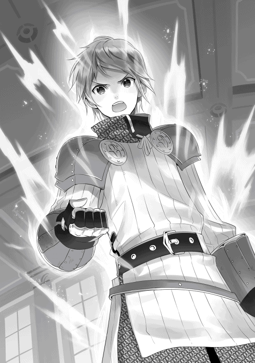
はっきりとした、辰巳の宣言。
これを聞いたジュゼッペは満足そうに何度も頷き、カルセドニアは真紅の瞳に涙を湛えながらも、嬉しそうに顔を紅潮させた。
そしてガルガードン母子は、ぽかんとした表情でただただ辰巳を見つめるばかり。
彼らにしてみれば、一介の平民が国に逆らってまで己の意志を貫くなど、理解の範疇の外に違いない。
そして。
そして、辰巳たちのいる応接室の扉が突然開き、そこから一人の老婦人がぱちぱちと手を叩きながら入ってきたのは、丁度その時のことだった。
ぱちぱちぱちぱち。
拍手をしながら突然乱入してきた身なりのいい老婦人は、柔らかい笑みを浮かべてカルセドニアが嬉しそうに寄り添う辰巳へとその視線を向けた。
「突然ごめんなさいね。でも、いい台詞だったわ。実際に貴族を前にして、なかなかあそこまで言えるものではないわよ？」
改めて言われて、辰巳も自分の言ったことの大きさを自覚する。
確かに怒りとその場の勢いに流された部分は大いにあるが、それでも「国が相手でも自分の想いを貫く」とはさすがに大きく出すぎた、と顔を赤くした。
「ちょ、ちょっと言いすぎたかもしれませんが......そ、それでも、俺は彼女を手放すつもりはありません。そこだけは事実です」
「ご、ご主人様......」
うっとりと。それでいて幸せ満面といった様子のカルセドニア。きっと今の彼女には周囲は見えていないのだろう。老婦人──エリーシア・クワロート前公爵夫人はそんなカルセドニアを見て、呆れたような表情を浮かべた。
「あらまあ。あのカルセをここまで骨抜きにするなんて。やっぱり、あなたは相当手管に優れた女ったらしみたいねぇ」
「え？ えええええええっ!? お、俺が女ったらしっ!? そ、そんなことないですよっ!! お、俺、親しくしている女の人ってチーコしかいませんからっ!! 」
「ちーこ？」
「あ、あの......チーコっていうのはカルセの以前の名前......じゃなくて、そ、その......な、なんて言ったらいいのか......と、ところで、失礼ですがどちら様ですか......？」
カルセドニアをチーコと呼ぶ理由が上手く説明できずに、思わずあたふたとする辰巳。それでいて、辰巳は目の前の老婦人が誰なのか、ようやくその点が気になった。
その老婦人はと言えば、あたふたする辰巳が余程おもしろかったのか、手で口元を隠しながらくすくすと声を零しながら笑っていた。
「あら、これは名乗りもせずに失礼したわ。私、エリーシアと申します。ジュゼッペやカルセとは古い付き合いなの。これからよろしくね」
「あ、はい、俺はタツミ・ヤマガタと言います。そうですか、ジュセッペさんやチー......じゃない、カルセの知り合いの方ですか。それで、エリーシアさんはどうしてこの場に？」
エリーシアに問いつつも、辰巳の視線はカルセドニアやジュゼッペに向けられている。
今日のこの場は余人を招くような場所ではない。だが、ジュゼッペやカルセドニアの知り合いならば、何らかの理由があってジュゼッペかカルセドニアに呼ばれたのだろう。
きょろきょろと何度もジュゼッペとエリーシアを見比べる辰巳を、再びエリーシアがおもしろそうに笑う。
「うふふふふふふ。本当、ジュゼッペの言った通りね。実際にこうして会ってみれば、あなたという人がどんな人物なのか、よぉく分かったわ」
「は、はあ......？」
エリーシアの言っている意味がよく分からず、辰巳は首を傾げる。
「実はのぅ、婿殿や。今回の件にはエリーシアにも助力してもらったんじゃ。この女狐のところには腕のいい密偵がおるからの」
「あら、どこかの古狸が泣いて頼むから、仕方なく力を貸してあげたのよ？」
口では辛辣なことを言いつつも、楽しそうな雰囲気のジュゼッペとエリーシア。辰巳はこの二人がとても親しいことをすぐに理解した。
「く、クワロート前公爵夫人っ!! 」
それまで口を利くことも忘れて、目の前の光景を眺めていたガルガードン母子。
辰巳の「国が相手でも自分の想いを貫く」宣言に驚き、突然の大物の登場に驚き、そして、その大物と辰巳が実に親しそうに会話しているのを見て更に驚いた。
だが、ようやく我に返ったシエナクァリアは、大慌てでその大物──エリーシアの傍らまで近寄るとその場でひれ伏した。
「大奥様もお聞きになられましたでしょうっ!? この者は不遜にも貴族である私たちに......いえ、ラルゴフィーリ王国そのものに弓引く愚か者！ しかも、私の可愛い息子を縛り上げるなど、乱暴狼藉は数知れず！ 何卒、大奥様のお力でこの愚か者に罰をお与えくださいっ!! 」
「そ、そうでございます！ この者は私の妻となるはずのカルセドニアを脅して様々なことを強要し、あまつさえ自分の妻にしようとする不届者！ 大奥様はカルセドニアとも親しいとお聞きしております。ここはカルセドニアのためにも、この者をただちにお裁きくださいっ!! 」
縄で縛られたままの姿で、ラーライクも母親に倣ってエリーシアの足元に這い蹲 った。
そんなガルガードン母子を、冷たく見下ろすエリーシア。一方、辰巳はエリーシアが公爵という貴族の中でも最高位に近い存在だと知り、目を白黒とさせていた。
「カルセドニアを脅す......ね。本当かしら？」
ちらりとエリーシアが辰巳を見る。その視線には強い力のようなものが含まれており、辰巳は首をぶんぶんと振りながら思わず数歩後ずさる。
だが、そんな辰巳を庇うように、カルセドニアが笑顔のままエリーシアの前に立った。
「大奥様には以前にもお話し致しましたように、私は私の意思でご主人様......タツミ様を愛しております。決して脅されてなどおりませんわ。それどころか、今の私は本当に幸せです。タツミ様があそこまではっきりとおっしゃってくださったのですから」
先程の辰巳の「国が相手でも自分の想いを貫く」宣言を思い出したのか、カルセドニアは見る者までもが心暖かくなるような極上の笑みを浮かべた。
「ええ。私もタツミがあなたを脅しているなど思っていないわ。もしもあなたを騙そうとしていたり、脅していたとしたら、あそこまで大きなことは言えないものね。ところで──」
孫娘にも等しい愛しい娘の成長と幸せを喜び、目を細めていたエリーシア。そのエリーシアの視線が再び鋭いものを宿らせて、足元に這い蹲る二人を見下ろした。
「脅していたのは......いえ、脅そうとしていたのはどちらかしら？」
じろり、と厳しい視線がラーライクを射抜く。
「な、なんのことでございましょうか......？ わ、私はこれまでの人生で、他人を脅したようなことは一度とてなく......」
「あら、そうなの？ ところでラーライク......だったかしら？ あなた、これが何かお分かり？」
そう言いながらエリーシアが取り出したのは、大人の握り拳程度の大きさの水晶だった。
混ざり物のない無色透明な真球の水晶が、エリーシアの掌の上できらきらと輝いている。
「そ、それはもしや......『姿写しの水晶』では......？」
「そう、その通り。これはどこかの古狸の収蔵品の一つなのだけれど......これにおもしろいものが映っているのよ。見てみない？」
エリーシアが姿写しの水晶と呼ばれるものに手を翳 し、何やらキーワードのようなものを唱える。
すると、その水晶の表面に何やら画像のようなものが浮かび、同時に声も聞こえてきた。
この姿写しの水晶という魔封具は、映像と音声を記録して好きな時に再生できる、言わばビデオカメラのような機能を有する魔封具なのだ。
〈────まだ、タツミとかいう若い神官を痛めつけることができないのかっ!? 俺の主である方もお怒りなのだ。このままでは、俺もおまえたちもどうなるか────〉
映し出された映像は、タツミを脅そうとしていたゴロツキたちとどこかの裕福な家の家人と思しき人物とが、何やら物騒な会話をしている場面だった。
場所は場末の酒場のようで、周囲には喧騒が満ちていた。その中でこれだけはっきりと会話まで録音したということは、余程近くからこの魔封具を使用したのだろう。
やがて映像は切り替わり、次に映し出されたのは豪華な調度品などが無惨にも破壊され尽くした部屋で、二人の男が何やら会話をしている場面だった。
どうやら天井裏から撮影したらしく、やや斜め上からの俯瞰映像だ。それでも、部屋の中にいる男の一人が、先程のどこかの家人らしき男だとはっきりと分かる。
そしてもう一人の男こそ、この場にいるラーライク・ガルガードンに間違いなかった。
〈おのれっ!! まだそのタツミとかいう神官の弱みは掴めないのかっ!? 雇った男たちは、いつになったらタツミとやらを痛めつけることができるのだっ!! 〉
〈は、はい......どうやら逃げ足だけは物凄く速いようで、雇った男たちがどれだけ周囲を囲っても、するりと抜け出してしまうらしく......〉
〈言い訳は聞き飽きた！ それよりも早く成果を出せ！ さもないと......〉
映像の中のラーライクが、目を細めて配下らしき家人へと言い放つ。
〈我がガルガードン家の力を以てすれば、貴様程度の人間など、どのようにも始末できるのだぞ？〉
〈しょ、承知しました、ラーライク様......っ!! 直ちにタツミという男を痛めつけさせます......っ!! 〉
そこでエリーシアが映像を停止させた。
これまで辰巳がゴロツキたちから逃げ回っていたのは、エリーシアの配下の密偵がジュゼッペから借り受けた魔封具にこの映像を記録し、ラーライクのしたことの動かぬ証拠とするための時間稼ぎだったのだ。
「確かあなた......先程は『これまでの人生で他人を脅したようなことは一度もない』とか言っていたけど......私の聞き間違いだったかしら？」
「し、知りませんっ!! このような映像には心当たりはありませんっ!! 」
「そ、そうですっ!! きっとこれはそこにいるタツミという卑劣な男が、私のラーラちゃんを陥れるために捏造したに違いありませんわっ!! 」
「いい加減にせんかい、お主ら。魔封具に手を加えることは、その道の専門家でもなければ極めて難しいことは知っておろうが。そもそも、その魔封具に映っておったゴロツキどもはこの神殿の神官戦士たちが既に捕えておる。なんせそのゴロツキどもは、我が神殿の神官に乱暴しようとしたのだからの。神殿とその信徒を守るのは神官戦士の務めゆえ、我が神殿の神官戦士たちがしたことは至極当然のことじゃ。さて、あのゴロツキどもからどのような話が聞けるか楽しみじゃのぉ」
「あなたたち、自分たちが一体何を仕出かしたのか......本気で理解していないみたいね」
呆れたような溜め息を吐きつつ、エリーシアが零した。
「王国と神殿は共に持ちつ持たれつ。あなたたちがしたことは、その両者の信頼関係を壊しかねないのよ。それが分かっていないようね」
神殿は王国に属する組織ではないため、王国は神殿に対していかなる命令権も持たない。
神殿もまた、王国の運営にはいかなる関与もしない。
建前的な部分は多々あるとはいえ、それが両者の立場である。しかし、両者の間には当然ながら深い結びつきがある。
神殿は国に属さないとはいえ、全く庇護を受けていないわけではないし、多くの国民にとって、神への信仰は精神的な支えである。
王国と神殿の両者の間に深い亀裂が入れば、それは民たちの国に対する不安という形で現れてくる。
仮に王国が神殿を怒らせてしまえば、神殿はその門戸を閉ざしてしまうだろう。そしてそれは、単に民たちが祈りの場を奪われるというだけでは終わらないのだ。
神殿は祈りの場だけではなく、医療施設やその他の訓練施設としても機能している。
怪我人や病人の看護や治療、神殿によっては身を守る技術や、算術などのちょっとした学問を教えている所もある。
もしも神殿が門戸を閉ざしてしまえば、民たちはそれらを受けられなくなってしまうのだ。
そうなると、当然民たちの怒りは王国へと向けられるだろう。民の信頼を失った国の行き先など、明るいものであるはずがない。
それゆえ、国と神殿は互いに良好な関係を築くように努力している。
「あなたたちのしたことは、その両者の努力を踏み躙るに等しいもの。もしもそこの古狸......いえ、最高司祭様を本気で怒らせてみなさい。神殿と国の関係は悪化し、当然国はその責任をあなたたちに求めるでしょう。そうなれば......どうなるか分かるわよね？」
言外に伯爵家の消滅を臭わせるエリーシア。
ここに至り、ガルガードン母子は自分たちが進退窮まったことをようやく理解したのだった。
「王国と神殿との間に深い亀裂を入れかねないあなたたちの行為は、本来ならば国の法によって裁かれるべきでしょう。だけど、これ以上騒ぎを大きくしたくないの」
ラルゴフィーリ王国において、現在のガルガードン伯爵領で生産される各種の金属製品は、極めて重要な存在となっている。
自国の軍への武具の供給だけでなく、ガルガードン産の金属製品は特産品として国外にも輸出されている。
ここまでその産業を大きくした現ガルガードン伯爵の手腕は大いに認められており、簡単にガルガードン家を取り潰すわけにはいかない。
仮にガルガードン家を取り潰し、伯爵領を王家の直轄地に組み込んだとしても、今後同じようにガルガードンの産業を発展させていける保証はない。
それほど、現当主の手腕は優れており、おいそれとそれを失うわけにはいかないのだ。
「よって、あなたたちの処遇は伯爵家のご当主である、アルモンド・ガルガードンに一切任せます。いいですね？」
エリーシアが開け放たれたままだった扉へと声をかければ、そこから一人の中年の紳士が姿を見せた。
おそらく、この人物がラーライクの父であるアルモンド・ガルガードンなのだろう、と辰巳は推測する。
「御意にございます、大奥様。この者たちは私が責任を持って処罰いたします。大奥様の寛大な処置、心より感謝致します」
エリーシアに向かって大きく頭を下げるアルモンド。彼はジュゼッペに向き直ると、もう一度深々と頭を下げた。
「クリソプレーズ猊下にも、今回は誠にご迷惑を......もはや、何と言ってお詫びすればいいのか見当もつきません」
「儂も詫びなど求めておらん。その代わり、しっかりとそやつらを処罰せい。くれぐれも、肉親の情などで流されるでないぞ？」
「はっ!! これ以上、猊下やカルセドニア様、そしてその婚約者殿には不愉快な思いをさせないと誓います」
「ですが、今回の件は国王陛下のお耳にだけは入れておきます。そして陛下より何らかの沙汰があった場合は、それを甘んじて受けなさい。いいですね？」
「承知致しました、大奥様」
「さて、伯爵よ。こやつら、お主はどう裁く？」
いつもの好々爺とした雰囲気ではなく、サヴァイヴ教団の最高司祭としての威厳を纏ったジュゼッペが、アルモンドに問う。
アルモンドもまた、理解していた。ここで妻や息子に情けなどかけようならば、本当にガルガードン家は滅亡するに違いないことを。
アルモンドはこの時になって、いまだに床に這い蹲っている妻と息子へと初めて目を向けた。
「あ、あなた......お、お願い......た、助けて......」
「お、お父様......お願いします......何卒、何卒お慈悲を......」
シエナクァリアもラーライクも、自分たちが窮地に陥っていることを悟り、一縷の望みをかけて夫であり父親であるアルモンドに縋る。
だが、アルモンドが二人を見る目は、既にこれ以上ないほど冷えきっていた。
「シエナクァリアよ。おまえには離縁を申しつける。おまえの実家には、大奥様の方から話をつけていただけるそうだ。おそらく、おまえの実家もおまえが戻ることを受け入れはしないだろう」
冷たく言い放たれた言葉に、シエナクァリアが息を飲む。そんな妻──既に元妻か──を無視して、アルモンドは息子へと宣告を下す。
「ラーライク。貴様を廃嫡し、今日限り当家より勘当する。今後はおまえとは父でも子でもない。どこへなりとも好きな所へ行くがいい」
「そ、そんな......お父様はお母様と私に野垂れ死ねとおっしゃるのですかっ!? 」
「そ、そうよっ!! 一人息子であるラーラちゃんを勘当して、ガルガードン家の跡継ぎはどうするのっ!? 」
厳しすぎるアルモンドの決断──少なくとも二人にはそう感じた──に、シエナクァリアとラーライクが騒ぎ立てる。だが、アルモンドはそれに耳を貸す素振りを見せない。
「あら、伯爵家の跡継ぎなら心配無用よ。私が責任を持って立派な若者を養子として紹介してあげるわ」
「なぁに、そこの馬鹿息子に比べれば、誰だって立派に思えるじゃろうがのぅ」
狸と狐が聞こえよがしにそう言う。そんな二人の辛辣な様子に、辰巳は若干引いていた。
そんな辰巳へ、エリーシアが意味有りげな視線を向けた。
「あら、そう言えば丁度いいところに将来有望そうな若者がいたわね。どう、ガルガードン伯爵。いっそのこと、このタツミという若者をあなたの跡継ぎにしてみない？」
「え、ええええええっ!? や、やめてくださいっ!! お、俺、貴族なんて柄じゃないですからっ!! 根っからの庶民ですからっ!! 貴族の跡継ぎなんて絶対に無理ですっ!! 務まりませんっ!! 」
辰巳は慌ててぶんぶんと勢いよく手と頭を振る。そんな彼の様子がおかしかったのか、ジュゼッペとエリーシア、そしてカルセドニアが笑い声を上げた。
よく見れば、アルモンドが真剣な表情で辰巳を見つめていた。もしかすると、本気で彼を跡継ぎにとでも考えているのかもしれない。
ガルガードン母子の起こした騒ぎから数日後。
辰巳はカルセドニアと共に、ジュゼッペの執務室に呼ばれた。
どうやら先日の騒ぎに一応の決着がついたらしく、顛末を教えてくれるそうだ。
「それでどうなったんですか？」
ジュゼッペの執務室に到着し、彼に勧められて椅子に腰を落ち着けてから、辰巳はあれからのことを尋ねた。
「うむ。ガルガードン家には重いお咎めはなかったようじゃの。ただし、数年は余分に税を課せられることになったそうじゃ」
貴族の家を取り潰すことは、決して簡単ではない。
それまでその貴族に仕えていた者たちも路頭に迷うことになるし、その領地の運営も上手く継続できるとは限らないからだ。
「では、あの母子はどうなりましたか？」
カルセドニアの問いにも、ジュゼッペは淡々とその結果を告げる。
「離縁し、勘当されたあの二人じゃが......結局、行く当てもないので、ガルガードン伯爵が領地内に小さな家と畑を与えて、そこに住まわすことにしたそうじゃよ。もちろん、貴族ではなく平民としてじゃ」
「それであの二人が上手くやっていけるんですかね？」
「さぁて、そこまでは知らんわい。家と畑を与えるだけでも伯爵の恩情じゃしの。これで心を入れ替えて生きていくならよし、そうでなければこのまま野垂れ死ぬしかない。それはこれからのあやつら次第じゃて」
離縁され勘当されたシエナクァリアとラーライクが、このまま野垂れ死のうともガルガードン家にはもはや関係ないのだ。それを家と畑を与えたのは、かつての家族に対する彼の最後の恩情に違いない。
辰巳が心の中で今回の件に結末をつけていた時、不意にジュゼッペから声をかけられた。
「のう、婿殿や。今回のような騒ぎがもうないとは限らん。そこでどうじゃろう？ ここらでお主とカルセの立場を世間的にもはっきりとさせようと考えているのじゃが......お主はどう思う？」
ジュゼッペのその言葉に、辰巳はびくりと身を震わせた。
それは彼自身もまた、ガルガードン母子の事件の時から考えていたことだったから。
「以前、お主から結婚に関してどう考えておるか聞いておる。儂とてお主の意思は尊重したい。カルセとて、お主が待てと言うのならば、いくらでも待つじゃろう」
ジュゼッペがちらりと辰巳の隣に座る孫娘に視線を向ければ、彼女はふわりと柔らかく笑った。
家族が養えるぐらいの収入を得られるようになるまで待って欲しい。
カルセドニアもまた、辰巳が結婚に関してそう考えていることは承知している。
辰巳は詰まらない意地だと言うが、彼の気持ちは嬉しい。それだけ彼が自分との生活を、真剣に考えていてくれるという証なのだから。
だから祖父が言うように、辰巳が自分で納得するまでいつまでも待つつもりでいる。
「お主も上級神官となった。それに加えて、正式な神官戦士でもある。この二つの俸給だけでも、市井の一般的な家族よりも収入は上じゃろう。無論、お主が最終的には魔祓い師を目指していることは重々承知じゃ。じゃが、せめて婚約という形だけでも整えてもいいのではなかろうか。儂はそう考えるが......お主はどう思うかの？」
カルセドニアと正式に婚約する。
既に半年以上彼女と一緒に暮らしているが、改めてそう言われるとやはり照れを感じる辰巳だった。
「あ、あのー......俺としましても、チーコと正式に婚約することは構いません......いや、そうした方がいいことも理解しています。ですが......具体的にどんなことをするんですか？」
元の世界では、婚約どころか女の子と付き合ったことさえない辰巳である。
婚約という言葉に漠然的なイメージはあるものの、具体的にはどんなことをするものなのか。当然ながら知識はまるでない。
「そうさの。神殿で婚約の儀と呼ばれる儀式を上げるのが一般的じゃな。その儀式には儀式を司る立会人の神官と、当事者である二人だけが参加する。神──当然サヴァイヴ神の前で、婚約を宣言し神の祝福を受ける。簡単に言うとそんなところじゃな。ああ、そうそう。もしもお主らが儀式を上げるならば、儂が立会人の神官を務めよう」
長く白い髭を扱きながらジュゼッペが大まかな段取りを説明すれば、カルセドニアが目を見開いて驚いた。
「よ、よろしいのですか？ 最高司祭であるお祖父様が立会人を務めるなど、普通は王族の婚約か、貴族の中でも上位の方たちの儀式の時だけではありませんか」
「確かにカルセの言う通りじゃが、婿殿にはいろいろとカルセが世話になっておるでな。カルセの祖父......いや、養父 として、せめてそれぐらいはしたいんじゃよ」
辰巳はこちらの世界へと強引に呼び出したカルセドニアを、なじるでもなく責めるでもなく、それどころか前向きに受け入れて仲睦まじく一緒に暮らしてくれている。
辰巳からすれば、自分の方こそカルセドニアにいろいろと世話になっていると言うだろうが、ジュゼッペも辰巳には養女 のことで感謝しているのだ。
辰巳とカルセドニアの婚姻の儀の立会人を務めることで、その感謝を彼なりに表わしたい。それがジュゼッペの思いであった。
もちろん、最高司祭であるジュゼッペが立会人を務めることで、様々な方面への圧力となることも考慮に入っているのだろう。
「分かりました。では、その儀式に関してはジュゼッペさんにお任せします。それで、その儀式はいつ執り行うのですか？」
辰巳が了承してくれたことに安堵の息を吐きつつ、ジュゼッペはあれこれと頭の中で素早く計算する。
「ふむ......神殿としてもいろいろと都合があるでな。今日から十日の後、ということでどうじゃろう？」
ジュゼッペの提案に、辰巳も素直に頷いた。
そして、そんな辰巳の背後では、カルセドニアが幸せそうな笑みを浮かべていた。
「は？ 宝飾品を扱っている店を教えて欲しい？」
ジュゼッペからカルセドニアとの婚約を切り出された翌日。
神官戦士としての鍛錬を終えた辰巳は、同じように鍛錬を受けていたバースにそう質問した。
「ああ。俺、この街でそういった商店へ行ったことがなくてさ。質のいい宝飾品を扱っている店を知っていたら教えて欲しいんだ」
「別に構わないが、どうして急に......ああ、そういうことか」
何やら勝手に納得して、にやりと含みのある笑みを浮かべるバース。
心の中を見透かされたようで、辰巳は照れ臭くなって視線を泳がせる。
「そういうことなら、俺よりもニーズたちに聞いた方がいいと思うぜ？ あいつらの実家は基本は魔獣狩り相手に武具を売っている商店だが、古くから続いている店らしいからな。この街の商人たちのことに関しては、俺よりも詳しいだろ？」
「そ、そうか。じゃあ、ニーズたちに聞いてみるよ」
「おう、そうしろ。んで、がんばっていい品を選べよ？」
「う、うるさいなっ!! 」
顔を真っ赤にし、足早に去っていく辰巳の背中を、バースは呆れたような表情を浮かべてじっと見つめる。
「半年以上一緒に暮らしているってのに、本当にいつまでも初々しいこって。まあ、それがタツミたちらしいと言えばらしいけどな」
そして十日という時間はあっと言う間に過ぎ、その十日間は辰巳も実に多忙だった。
ニーズに紹介してもらった宝飾店で、婚約の儀に使用する装飾品も購入した。
どうやらこの国では指輪ではなく、イヤリングやピアスなどの耳飾りで婚約の証とするらしい。
紹介してもらった宝飾店の店員とも相談しつつ、何とかカルセドニアによく似合いそうな耳飾りを選ぶことができた。
その際、若干予算がオーバーしてしまったため、ジュゼッペに代金を借りるなどの一幕もあったりしたが。
さすがにカルセドニアに贈る品物のための代金を、彼女に借りるわけにはいかなかったのだ。
辰巳は神殿で得られる俸給の全てを一旦カルセドニアに預けている。そしてその中から、改めて彼が自由に使えるだけの金額をもらうという、いわゆる「お小遣い制」である。
カルセドニアとの婚約がこんなに急でなければ、辰巳ももう少しじっくりと予算を組んでから買い物したことであろう。
その他には、ジュゼッペの家族たちとの面会もした。
ジュゼッペの妻やその息子たち。ジュゼッペは男ばかり三人も実子がいて、全員既に結婚して子供までいる。
ジュゼッペの年齢を考えれば当然と言えば当然なのだが、カルセドニアとは随分と年の離れた義兄 たちであった。
辰巳にとっても義兄となる人物たちと顔を合わせるのは、並大抵の緊張ではなかったが、前もってジュゼッペやカルセドニアから辰巳のことは聞かされていたらしく、ジュゼッペの家族たちからは暖かく迎えられた。
それでもやはり義妹──年齢的には義娘と言っても過言ではない──の伴侶となる辰巳に向ける、義兄たちの視線は厳しいものがあった。
だが、それもすぐに打ち解けた。特にジュゼッペの次男はサヴァイヴ神殿の神官戦士を束ねる総戦士長である。
辰巳にとっては直属の上司とも言える人物で、彼の評判は聞き及んでいたようだ。
ちなみに、ジュゼッペの妻は海洋神ダラガーベ神殿の重鎮、長男は王国騎士、三男は太陽神ゴライバの神官戦士と、実に多彩な経歴を持つ家族たちであった。
辰巳は上級神官としての儀礼用の神官服と聖印を身に着け、サヴァイヴ神殿の礼拝堂に鎮座する、巨大なサヴァイヴ神の石像の前で跪いていた。
辰巳の隣には、同じく司祭としての儀礼服と聖印を身に着けたカルセドニアが跪き、サヴァイヴ神の像の前には、煌びやかな最高司祭としての正装を纏ったジュゼッペの姿がある。
「──今ここに、若き二人が新たな縁を結ぶことを偉大なるサヴァイヴ神へと誓うものなり。この誓いは決して破られることなく、未来永劫二人を結びつける強固な鎖とならん」
朗々としたジュゼッペの声が広い礼拝堂に響く。
普段ならば信者たちで溢れ返るこの礼拝堂も、今は辰巳たち三人のみ。本日この場で婚約の儀が執り行われることは事前に通知されているため、一般の信者たちは儀式が終わるまで礼拝堂の外で待っている。
そして、その中には辰巳やカルセドニアと親しい者たちもいるはずだ。
「──では、誓いの耳飾りを身に着けることで、婚約は成立するものとする」
厳粛な表情を浮かべたジュゼッペが、神像の前に供えて聖別しておいた耳飾りを丸い盆の上に載せて、辰巳たちへと振り返った。
ジュゼッペに指示されて、辰巳とカルセドニアが立ち上がる。
そして辰巳の前に、ジュゼッペが聖別された耳飾りを恭しく差し出した。
辰巳が選んだ耳飾りは、細く板状にした銀を複雑に絡み合わせた意匠のもの。そして、その中央には小粒ながらも透明度の高い真紅の宝石が嵌め込まれていた。
この耳飾りは、炎に親しいオーグルという亜人種族の職人による逸品である。
オーグルとは赤銅色の肌とがっちりとした大柄な体躯が特徴でありながら、その巨躯からは想像できないほど指先が非常に器用という特性も持ち合わせ、細工物や鍛冶の技術に秀でる種族である。
辰巳はその耳飾りを二つとも取り上げ、その一方をカルセドニアに手渡した。
「ごめんな、チーコ」
「え？」
突然謝られて、思わずぽかんとした表情のカルセドニア。
「そ、その......本当なら、婚約じゃなくて更にその一歩先でもいいはずなのに......俺の我が儘で婚約止まりになっちゃって......本当にごめん」
「い、いえ、そんな......我が儘と言えば私の方こそ......私の方こそ、自分の都合だけでこちらの世界にご主人様を召喚してしまっ────っ!? 」
言葉を続けようとしたカルセドニアの唇に、辰巳の指先がそっと触れてその先を遮る。
「そんなことはない。俺は召喚してくれたことを本当に嬉しく思っているんだ。本音を言ってしまうと、以前の暮らしに......日本での生活に全く未練がないわけじゃない」
現代日本に比べれば、どうしたってこちらの世界は生活しづらい。
電気がないので夜は暗く、寒い冬も暖房と言えば暖炉ぐらい。エアコンを作動させれば常に一定の温度を保つことのできる日本に比べれば、過ごしやすさは雲泥の差がある。
それ以外にも、日本に劣るところはいくらでもあるだろう。
「それでも......こちらの世界にはチーコがいる。死別して、もう二度と会えないと思っていたチーコと、再びこうして一緒に暮らすことができる。それだけで......いや、それに勝る幸せは俺には考えられない」
「ご主人様......」
カルセドニアの真紅の瞳に、美しくも暖かい無色透明な宝石が生み出される。
そんなカルセドニアに柔らかく微笑みかけながら、辰巳は彼女の髪を掻き上げて左の耳を露出させると、そこに誓いの耳飾りを取り付けた。
「チーコ......さあ、頼むよ」
「はい......はい......っ!! 」
溢れる涙を何度も何度も手の甲で拭いながら、カルセドニアも辰巳の右耳に耳飾りを取り付ける。
ラルゴフィーリ王国では男性は右の耳に、女性は左の耳に。同じ意匠の耳飾りを飾ることが、婚約の証とされる。これが結婚となると、男女で耳飾りを飾る耳が逆になるのだ。
「今ここに、若き二人の婚約が成立した！」
ジュゼッペの宣言と共に、神殿の鐘が祝福の音色を奏で始める。
荘厳な音色がレバンティスの街の隅々にまで行き届き、若き二人の新たな関係を祝う。
互いの手をしっかりと握り合いながら、辰巳とカルセドニアは至近距離で見つめ合う。
おそらく今、礼拝堂の外では婚約が成立した二人を祝福するべく、友人や知人たちが二人が出てくるのを待ち構えているだろう。
バースが。ニーズが。サーゴが。シーロが。
先輩の神官戦士たちや、下級神官時代に一緒に下働きした顔見知りたち。
カルセドニアの知人である、クーリを始めとした女性神官たち。
もしかすると、辰巳たちの家の近所に住んでいる人々も駆けつけてくれているかもしれない。
「さあ、チーコ。みんなに胸を張って報告しよう。俺たちが正式に婚約したことを」
「はい、ご主人様っ!! 」
二人は手を繋いだまま、礼拝堂の入り口へと向かって歩き出す。
が。
何歩も歩かない内に、急に辰巳が歩を止めた。
「どうかなさいましたか、ご主人様？」
「いや、その『ご主人様』って呼び方だけど......そろそろ止めにしないか？」
「え？」
「だって......そ、その......チーコは確かに俺のチーコだけど、もうペットだった......オカメインコだったチーコじゃなくて、今は一人の人間の女性なんだから......お、俺もこれからは『カルセ』と呼ぶことにするから......だから、カルセも俺のことを『ご主人様』と呼ぶのは止めないか......？」
辰巳に言われて、カルセドニアは目を見開いて驚きを露わにした。だが、そうしていたのも僅かな間。すぐに彼女は幸せそうに微笑んで顔を赤らめた。
「ご主人様のお気持ちはとても嬉しいです......でも、できればこのまま私のことは『チーコ』と呼んでくださいませんか？」
顔を赤らめつつ上目使いで、カルセドニアは続ける。
「『チーコ』という名前は、ご主人様が私にくださった特別な名前です。今後もご主人様にだけは続けて『チーコ』と呼んでいただきたいのです......だめ......ですか？」
それは小さな我儘だった。しかし、辰巳にとってもカルセドニアにとっても、「チーコ」という名前は特別なものなのは間違いない。
この世界でただ一人、自分を特別な名前で呼ぶ。その「ただ一人」の人物は、辰巳以外には存在しない。
辰巳が自分のことを「チーコ」と呼んでくれるのは、カルセドニアにとっては幸せなことなのだ。
一方、そんなことを言われた辰巳もまた、その顔を真っ赤に染めた。
「あー、う、うん、チーコがそこまで言うなら......やっぱり、俺にとってもチーコはチーコだしな」
どこか照れくさそうに、それでもやっぱり嬉しそうに。辰巳はカルセドニアの小さな我儘を受け入れた。
「はいっ!! 改めてこれからよろしくお願いします、ご主人様っ!! 」
互いに顔を赤くしつつも、至近距離で嬉しそうに微笑む辰巳とカルセドニア。
二人の唇の距離が徐々に近づき、やがてゼロになるのを、ジュゼッペは満足そうに眺めていた。
それからしばらく。
いつまで経っても唇を離そうとしない二人に、ジュゼッペが呆れたように声をかけた。
「いつまでやっとるつもりじゃ。いい加減にせんかい」
口ではそう言いつつも、サヴァイヴ神の最高司祭の顔には、柔らかな笑みが浮かんだままだった。
辰巳とカルセドニアが正式に婚約して、数日経過したとある日のこと。
いつものように神殿からの帰り道。辰巳にしては珍しく寄り道をしていた。
カルセドニアとの関係をはっきりとさせたことで、彼の心にも余裕ができたのかもしれない。
辰巳が向かったのは、街の中央にある広場。そこにはラルゴフィーリ王国の各地からやって来た行商人が露店を並べている。
食料品から医療品、装飾品に服飾品、武器や防具もあれば、何に使うのか分からないようなものまで。
いくつもの露店を当てもなく眺めつつ歩いていた辰巳は、とある露店の前でふと足を止めた。
そこは一見しただけでは何に使うか分からないような物を売っている露店で、店先に並んでいるのは怪しげな水晶玉や、罅 割れた壷など、ガラクタとしか思えないような物ばかり。
「らっしゃい、兄さん。ウチの品に目を付けるとは、兄さんもなかなか目利きだねぇ？」
見るからに胡散臭そうな店主らしき中年の男が、にたにたと笑みを浮かべていた。
「ウチにあるのは、正真正銘、全部が全部、本物の魔封具ばかりだ。例えば──」
店主はごそごそと一振りの古びた長剣を取り出した。
「こいつは大昔、《剣匠》とまで呼ばれたとある魔祓い師が愛用していた聖剣だ。その聖剣がたったの銀貨七十枚。どうだい？ お買い得だろ？」
ラルゴフィーリ王国が存在するゾイサライト大陸では、大陸共通の銀貨が通貨として用いられている。
特に通貨としての単位は存在せず、買い物などは「銀貨で何枚」といった表現が使われる。
ちなみに、一般的な市民の一日の生活費が銀貨十枚程度。今、怪しい露店の店主が示したような長剣ならば、大体銀貨で百枚から二百枚ほど。もちろん、名のある職人の手による逸品ともなれば、この限りではない。
長剣一本で銀貨七十枚ならば、確かにお買い得と言えるだろう。
ただし、その長剣が実際に実用に耐えられるのならば、だが。
「ちょっとその剣、見せてもらってもいいか？」
「あいよ。気が済むまで見てくれよ」
店主から長剣を受け取った辰巳は、その剣を引き抜いてみた。いや、引き抜こうとした。
しかし剣は鞘から抜けることはなく、辰巳がどれだけ力を込めても結局刀身が姿を見せることはなかった。
「............これ、刀身が錆び付いているんじゃないのか？」
「そいつぁ違うぜ、兄さん。言っただろ？ こいつは聖剣なんだよ。つまり、持ち主を選ぶのさ。どうやら兄さんは聖剣に選ばれなかったみたいだねぇ。で、どうする？ 買うかい？」
どう考えても、聖剣なんて嘘っぱちだろう。実際、長剣からは錆びた鉄の臭いがした。
「要らないよ。抜けない剣を買って、どうしろって言うんだ？」
「いやぁ、今はだめでも、将来的には剣に認められるかもしれないぜ？」
にたにたと笑う店主に剣を返しつつ、辰巳は他の商品へと目を向けた。
「ん？ これってもしかして......」
その辰巳の目に、とあるものが映り込んだ。
それは一枚の絵。
見るからに安っぽい額に入れられた、一人の女性の肖像画だった。
「お、いい物に目を付けたね、兄さん。いやぁ、さすがだ。そいつは巷 で評判の、サヴァイヴ神殿の《聖女》様の姿絵だ。どうだい、よく似ているだろう？」
「そうかぁ......？」
眉を寄せながら、辰巳は姿絵をじっくりと眺める。
髪の色と瞳の色は、確かにカルセドニアによく似ている。だが、逆を言えば似ている所はそこだけだ。
顔も似ていなければ、体のラインもどこかおかしい。
例えて言うならば、絵の勉強をし始めたばかりの人間が描いたような、どこかデッサンの狂ったお世辞にも上手いとは言えない絵。
しかも、その絵の中のカルセドニアは、本物の彼女ならば絶対に着ないような真紅の派手なドレスを纏っていた。
大きく胸の開いたそのドレスは、確かに扇情的ではある。しかし、絵画に関する鑑定眼などない辰巳の目から見ても、決して上手いとは思えないその絵ではどれだけ扇情的なドレスでも台なしだ。
そんな辰巳の心情を知ってか知らずか、相変わらずにたにたと笑みを浮かべる店主が、ずいっと身を乗り出してその顔を辰巳へと近づけた。
「しかもな？ その絵の中の《聖女》様が着ている赤い服、実はそれ────」
にたぁり。店主の嫌らしい笑みが更に深くなった。
「────深夜になるとな、服が透けて絵の中の《聖女》様が素っ裸になるんだよ」
「兄さんだって男だ。美女として名高い《聖女》様の裸を拝んでみたいって思うだろ？ もちろん、俺だってそう思うさ。だけど、実際に《聖女》様の裸を見る機会なんて、あるわけねえじゃねえか」
そんなことはない、と辰巳は心の中で反論した。
実際に、《瞬間転移》の実験の時にカルセドニアを裸にしてしまったことがある。
それ以外にも、風呂上がりの薄い夜着の胸元から、カルセドニアの深い谷間が見えていたり、寝ている間に彼女の夜着の裾がめくれ上がって、朝起きた時にその白くて柔らかい健康的な太股が完全に露出していたりすることはままある。
とはいえ、そんなことをここで言い出せるはずもなく、辰巳は黙って店主の話を聞いていた。
「けどな？ この絵を買えば、絵とはいえ《聖女》様の裸を見ることができるんだぜ？ これは男なら絶対に買いだろ？ な？ 兄さんもそう思わねえか？」
絵に描いた服が、深夜になると透けてしまう。
そんな魔法みたいなことが実際に起こるわけがない、とここまで考えて、辰巳はふと思い至る。
「............そうか。魔法アリだっけ、この世界......」
魔法を使えば、店主が言うようなことも可能なのかもしれない。
もっとも、辰巳ではどの系統のどんな魔法を使えば、そんなことが可能になるのかまでは分からないのだが。
「さあさあ、兄さん。迷うってことは興味があるってことだろ？ だったら買いなよ。安くしておくぜ？」
にたにたと笑みを浮かべ続け、店主はしきりに買うことを勧めてくる。
そんな店主の声を聞きながら、じっくりと悩みに悩んだ辰巳は一つの結論を出した。
「......それで、本当に買っちゃったんですか？ そんな怪しい絵を？」
呆れたような、それでいて怒ったような、複雑な表情を浮かべたカルセドニアが、辰巳の前にいた。
結局、問題の絵を買うことにした辰巳。絵の大きさはそれなりなので、隠して家の中に持ち込むことは難しい。
案の定、家に帰った途端、絵はカルセドニアに見つかってしまった。
辰巳も元々隠すつもりはなかったので、この絵を買うに至った経緯を正直に話して聞かせた。その結果が、目の前で複雑な表情を浮かべているカルセドニアというわけだ。
自宅の居間として使っている部屋。外はすっかり夜の帳が降り、暖炉の中では暖かな炎が躍っている。
しかし、辰巳とカルセドニアの間には、言いようのない冷気のようなものが漂っていた。
いつも食事に使うテーブルを挟んで、辰巳とカルセドニアは向き合って椅子に腰を下ろしている。ふと辰巳が気づけば、カルセドニアは顔を伏せ、細かく肩を震わせていた。
「え、えっと......チーコ......？」
恐る恐る辰巳が声をかけると、カルセドニアは伏せていた顔を上げた。
そして、その顔を見て辰巳がはっと息を飲む。なぜならば、彼女の両の瞳には透明な雫が浮かんでいたからだ。
「ご主人様......私は......私はご主人様から見て、そんなに女として魅力ないですか......？」
「え？ ええっ!? 」
「だって......だって、私の身体はこんな下手な絵にも劣るということでしょうっ!? 実際に私の裸を見るよりも、ご主人様はこの絵の裸を見たいと思った......そうでしょうっ!? それはつまり、私がこの絵にも劣るような情けない身体だから......っ!! 」
嗚咽さえ交えながら、カルセドニアが弱々しく叫ぶ。
これほど弱々しく泣くカルセドニアを初めて見た辰巳は、最初思わずその様子に見入ってしまった。だが、すぐに我に返る。
しかし、ここで「こんな下手な絵よりも、実際のチーコの方が魅力的だよ」などと陳腐なことを言っても、彼女は聞き入れないだろう。
だから。
だから、辰巳は覚悟を決めて本当のことを告げる決意をした。
どうして彼が、こんな下手な絵を買い求めたのか。その本当の理由を。
「..................だったんだ......」
それまで両手で顔を覆って泣いていたカルセドニア。そのカルセドニアが、涙に濡れた頬もそのままに弾かれたように顔を上げた。
「ご、ご主人様......い、今、何て......」
「だから......嫌だったんだよっ!! たとえ単なる絵だろうが......どれだけ下手な絵だろうが、万が一この絵に本当に魔法がかかっていて、絵の中の服が透けるようなことがあったら......」
顔を真っ赤に染め、視線を明後日の方向に向けながら、辰巳は必死に言葉を続ける。
「......そして......それをどこの誰かも分からない男に見られるかもしれないと思うと............堪らなく嫌だったんだっ!! たとえ単なる絵だろうとも、チ、チーコの裸は誰にも見せたくない......俺だけのものにしたいんだよっ!! 」
「ご、ご主人様......」
それまで悲しげだったカルセドニアの表情が、一瞬で幸福の絶頂へと変化する。
「わ、悪かったなっ!! お、俺にだって人並みに独占欲ぐらいあるんだぞっ!! 」
辰巳は自棄になって吐き捨てるように付け足した。
その後、居間は沈黙に包まれたが、それは気不味い沈黙ではなく、どこか幸福な空気を孕んだ心地よい沈黙で。
どれぐらいそんな沈黙の海に身を浸していただろう。
不意にカルセドニアが、そんな幸福な沈黙を破った。
「で、でしたら..................................................................い、今から......ご、ご覧になりま......す？」
「え？」
「そ、その......ご主人様が望まれるのであれば............そ、そして、わ、私なんかの裸でよければ............ご、ご覧になりますか............？ ......ご主人様なら、いつでもお望みの時に..................」
そう告げたカルセドニアの顔は、本当に真っ赤だった。
そして、辰巳も自分が彼女に負けないぐらい真っ赤になっていると自覚していた。
ごくり、と思わず辰巳の喉が鳴る。
彼だって男だ。意中の相手の裸に興味がないわけがない。
「い、いや、その......見たいのは山々なんだけど......チーコの裸を実際に見たら、きっと俺......自分を押し止める自信がないから......そ、その......」
こんな時にでも、自身の欲望よりも自分に対して気を使ってくれる辰巳。カルセドニアはその気持ちが本当に嬉しかった。
だから、彼女は告げる。彼女が今感じているその想いを。
「いいじゃないですか、自分を押し止めなくても......わ、私たちも正式に婚約したことですし、今のご主人様なら収入も充分あるので、家族を養えるようになるまで、という目標は達成していると思います。だ、だから............」
顔を逸らせ、それでもちらちらと辰巳の方を見ながら。
「......ご主人様と一緒に暮らし始めて半年以上。わ、私もそろそろいいかなー、なんて............」
ここまで言われては、辰巳の理性も限界だった。
「い、いいのか......？ お、俺だって男だから......そんなこと言われたらもう止まらないぞ......？ カルセがやっぱり嫌だって言い出しても......自分を止められる自信なんてないからな？」
「は、はい、構いません。そもそも......私は生まれる前からご主人様のものではありませんか。どうぞ......ご主人様のご自由に......私を......正真正銘ご主人様のものにしてください............」
テーブルの上に置かれた二人の手が、徐々にその距離を縮めていき、指同士が絡み合う。
指だけだった絡み合いはすぐに手と手を握り合うこととなり、二人はどちらともなくテーブルの上に身を乗り出して唇と唇を重ね合わせた。
当然合わさったのは唇だけではなく、互いの舌同士までもが相手を屈服させんとばかりに戦いを開始する。
その戦いに勝利を収めたのは、果たしてどちらであっただろうか。
いや、辰巳が勝つにしろ、カルセドニアが勝つにしろ、二人の幸せな時間に変わりはない。
魔法の絵は、やはりと言うか何と言うか、深夜になっても絵の中の服が透けるようなことはなかった。
しかし二人にとって、この絵はやはり魔法の絵だったのだ。
この絵が切っ掛けで、辰巳とカルセドニアがより一層親密になれたのは間違いないのだから。
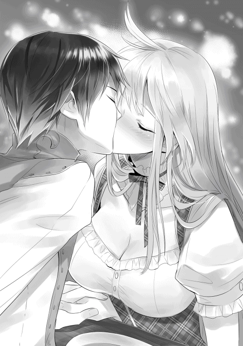
その日の夜。
辰巳とカルセドニアの絆は、今までよりも更に深くなった。
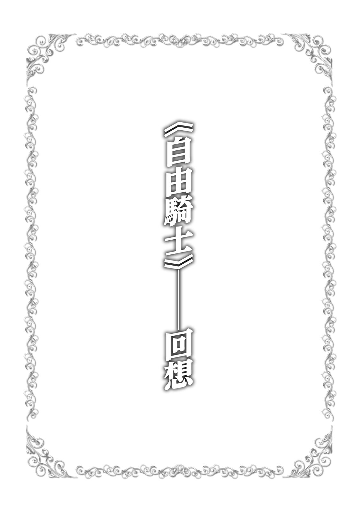
毒液の滴る牙を有する顎 が、目の前でがちんと閉じられた。
それを後ろに下がることで危なげなく回避した男性は、すぐさま目の前の魔獣に向けて手にした大槍を真っ直ぐに突き出した。
男性は二十歳前後だろうか。長身でありながらも決して武骨な印象はなく、引き締まった体つきは極めて精悍な印象を周囲に与えるだろう。
その身体を火熊 と呼ばれる魔獣の素材を用いた鎧で包み込んだ姿は、経験を積み重ねた魔獣狩りのそれだった。
炎のような赤い髪と透き通った赤茶色の瞳を持つ、極めて整った容姿に浮かぶ冷静な表情が、彼が単に腕力や体力だけが自慢の粗野な男ではないことを無言で物語っている。
その男性が繰り出した槍の穂先は、狙い違わず魔獣の目を深々と抉る。
魔獣──鎧蛇 と呼ばれる魔獣で、強固な外殻と体側に蜘蛛のような細くて長い脚を無数に持つ──は、激痛に身体を激しくくねらせた。
鎧蛇の動きに引き摺られないよう、咄嗟に槍を引き抜いた男性は、大きく後ろに飛び退いて改めて大槍を魔獣に向けつつ、素早く魔法の詠唱を開始する。
詠唱と共に、彼の目の前に合計五本の炎の槍が形成されていく。
男性が詠唱の最後の一言を唱え終わると同時に、宙に浮かんでいた炎の槍が一斉に解き放たれた。
唸りを上げて飛翔する炎の槍。
同時に、男性もまた大槍を構えて魔獣に向けて突進する。
五本の炎の槍が次々に魔獣の身体に着弾し、轟音を上げて爆発する。その爆発の轟音の中に、魔獣が上げた苦悶の咆哮が混じる。
咆哮を上げるために大きく開かれた鎧蛇の口。その口目がけて、男性は手にした大槍を力一杯繰り出した。
大槍の穂先は魔獣の口蓋を突き抜け、脳まで達してこれを破壊する。
びくりと激しく身体を震わせた魔獣は、そのままだらりと脱力して大地に横たわる。
魔獣が息絶えたことを確認した男性は、息を大きく吐き出すと、魔獣から愛用の大槍を引き抜いた。
「そう言えば、この魔獣とは以前にも戦ったことがあったな。あの時はまだカルセと組んでいた時だったか。もっとも、あの時の鎧蛇はもっと大きく、ただの魔獣でもなかったが」
大槍を大きく振るって穂先に付いた魔獣の血を吹き飛ばした男性──かつてはサヴァイヴ神殿に所属していた神官戦士であり、《自由騎士》の二つ名で呼ばれるモルガーナイク・タイコールスは、誰に聞かせるでもなくそう呟いた。
付近の村の狩人でさえ滅多に近づかない、深い森の中。
その森の中で、二人の人間が巨大な鎧蛇と対峙していた。
毒の滴る牙を剥き出しにしながら、鎧蛇が眼前に立つ人間に向けて突進する。
それを、武具に身を固めた二人の人間が左右に分かれてやり過ごす。
「思ったより速度がある！ 気をつけろ、カルセ！」
「分かったわ、モルガー！」
二手に分かれながらも、それぞれしっかりと反撃の準備を整えている辺り、この二人はかなり場慣れしているようだ。
魔獣はその真紅に輝く目を、まずは人間の雌へと向ける。
雄の方は魔獣の革で作った鎧を着ているが、雌の方はそうでもない。
雄の方は長大な槍を構えているが、雌の方は拗 くれた杖を持っているだけだ。
それほど知能の発達していない魔獣──正確にはその魔獣に取り憑いたモノ──は、雌の方が倒しやすいと単純に判断した。
その人間の雌を見た魔獣は、いたく食欲を刺激されたらしい。その口元から毒液とは違う液体が滴り落ちる。
そして、その「欲望」は魔獣に取り憑いているモノを大いに喜ばせた。
魔獣の奥深くから湧き上がってくる「欲望」を、ソレは美味そうに啜り上げる。
魔獣──いや、魔物は、蜘蛛のように長くて細い脚をかさかさと動かし、杖を構える人間の雌へと近づいていく。
この時、魔物は気づいていない。人間の雌のその可憐な唇が、しきりに動いていたことに。
人間の雌──カルセドニアは、気合と共に呪文詠唱の最後の一言を解き放つ。
同時に、魔物の細長い体を雷が真っ直ぐに貫いた。
〈風〉系統の上位派生である〈雷〉系統の魔法、《雷撃》である。
貫通力に優れたこの魔法は、魔物の体側に存在する蜘蛛脚を纏めて焼き払う。
さすがに全ての脚を焼き払うことはできなかったが、それでも片側の脚のほとんどを失い、魔物は直進することができずに蛇行しながらカルセドニアの脇を通り過ぎた。
そこへ魔物の側面より巨大な氷の槍が飛来し、鎧蛇の脇腹──と言っていいのか判断に困るが──を深々と貫いた。
周囲に悪臭と共に、大量の魔獣の血液が飛び散る。
鎧蛇の血液には強い毒性があり、飛び散った血が周囲の木々や下生えの草、そして地面に降り積もった枯葉を見る間に腐食させていく。
その毒血を浴びないようカルセドニアは素早く後ずさりながら、今しがた魔法を解き放った相棒へと鋭い目を向けた。
「気をつけてよ、モルガー！ もう少しで私まで毒血を浴びるところだったわ！」
「なに、カルセならその程度の返り血、難なく避けられるだろう？」
「そうだけど！ それでもせめて事前に一言あってもいいじゃない？」
「信頼しているんだよ、君を」
「もう！ 都合のいいことばかり口にして！」
二人は口でこそ軽口を叩くが、その目から真剣な光が失われることはなく、魔物から視線が離れることもない。
片側の脚のほとんどを失いながらも、鎧蛇は何とか態勢を整える。
そして真紅に輝く両目で、自分に手傷を負わせた人間たちを敵意を込めて見つめた。
「どうやら、相当怒っているようだぞ？」
「そのようね。もう少し弱らせたら......仕掛けるわ」
「承知した」
カルセドニアとモルガーナイクは、素早くいつもの態勢を組み上げる。
即ち、モルガーナイクが前に立って大槍を構え、カルセドニアが後方で呪文の詠唱の準備に入るのだ。
鎧蛇に憑いているモノは、この時既に逃亡を望んでいた。しかし、鎧蛇の怒りは非常に大きく、憑いているモノの支配を跳ね除けて人間たちに牙を剥く。
まあいい、と憑いているモノは考えを変える。
怒りもまた「欲望」である。その強い欲望を啜りながら、憑いているモノも改めて人間たちを見つめた。
別にこの体が破壊されようが、その時はこの魔獣の体を捨てて逃亡すればいい。魔獣の体はソレにとっては仮初の肉体に過ぎないのだから。
更に湧き上がる大きな怒りを心ゆくまで味わいながら、ソレ──〈魔〉と呼ばれる怪物はにやりと笑みを浮かべた。
睨み合うことしばし。それまで騒々しかった森の中を、静寂が包み込む。
その静寂を最初に打ち破ったのは、モルガーナイクだった。
愛用の大槍を構え、魔物に向かって突進する。
その大槍の穂先を、燃え盛る炎が包み込む。後方のカルセドニアが使用した《炎刃 》の魔法だ。
モルガーナイクは燃え盛る穂先を下から掬い上げるように大きく振るい、魔物の蜘蛛脚を更に二本ほど切り払った。
攻撃が終わったのを見計らったかのように、魔物が毒牙を剥き出しにしてモルガーナイクを襲う。
モルガーナイクは迫る魔物の牙を、巧みに大槍を操り石突の部分で払いのける。
その際、牙から飛び散った毒液が彼の鎧に付着し、じゅうと嫌な音と臭いを発しながら鎧の一部を腐食させた。
しかし、毒の影響は鎧で止まり、彼の身体にまでは届かない。モルガーナイクは大槍をくるりと回転させ、穂先で魔物の腹を力一杯突く。
大槍の穂先は深々と魔物の体に食い込み、再び周囲に毒血が飛び散る。
いくらかの毒血がモルガーナイクの身体を濡らし、再び鎧から嫌な臭いと煙が立ち上る。
だが、彼はそれを一切気にすることなく槍を引き抜き、素早い突きを更に繰り出した。
鎧蛇の胴体に三つ、四つと穴が穿たれ、魔物が苦し気な咆哮を上げる。
モルガーナイクは更に魔物を追い詰めんと、勢いよく踏み込んで大槍を繰り出した。
いや、繰り出そうとした。
魔物に向かって大きく踏み込み、渾身の突きを放とうとしたモルガーナイクを、横合いから何かが襲いかかった。
攻撃の態勢に入っていたモルガーナイクは、横からの奇襲に反応できない。
その何か──魔物の尻尾はモルガーナイクの身体を激しく打ち付け、彼の身体を大きく吹き飛ばす。
「モルガーっ!! 」
カルセドニアの悲痛な声が周囲に響く。
吹き飛ばされたモルガーナイクは、そのまま背後の木に身体を激しく打ち付けられた。
肺の空気を強制的に排出させられ、モルガーナイクが苦し気に咳き込む。
完全に体勢の崩れたモルガーナイクに追い打ちをかけんと、鎧蛇が地面を滑るようにして彼へと迫る。
魔物は大きく口を開け、主武器である毒牙を《自由騎士》に突き立てんとした。
だが、鎧蛇がモルガーナイクへと到達する直前、魔物の進路を妨害するように幾条もの雷が降り注いだ。
いや、カルセドニアが放った《雷雨》の魔法は、まさに魔物の進路を妨害するために使用されたのだ。
眼前にいくつもの雷が降り注ぎ、魔物は反射的に巨体を大きく仰け反らせ、そのまま僅かに後退する。
その隙に、カルセドニアは次の魔法である《小治癒》を詠唱する。
《小治癒》は回復量こそ大したものではないが、短い詠唱で発動するという利点を持つ。
詠唱する時間が限られる戦闘中では、短い詠唱時間は時に威力の大きな魔法を凌駕する効果を現すことが少なくない。
今もカルセドニアが素早く詠唱した《小治癒》は、僅かながらもモルガーナイクの身体を回復させた。
確かに《小治癒》では、モルガーナイクの負傷を完全に回復させることはできない。
しかしその僅かな回復で、彼は再び動けるだけの力を取り戻していた。
モルガーナイクは大槍を手にしながら立ち上がると、カルセドニアの近くへと移動する。
「助かったよ、カルセ」
「油断よ、モルガー。本格的な治療は戦闘後にするから、もう少しがんばって」
「承知」
再び態勢を整えた二人は、改めて体のあちこちから毒血を流す鎧蛇と対峙した。
ざん、という大きな切断音が、森の中に響き渡る。
炎に包まれた穂先を巧みに操り、モルガーナイクは鎧蛇の蜘蛛脚を一本、また一本と切り跳ばしていく。
まずは敵の機動力を奪う。それがモルガーナイクとカルセドニアの作戦であった。
これまでに数多くの脚を失ってきた鎧蛇に、残された脚は少ない。
既に体を支えることさえ難しいほど、その数は減じている。
そして、頭上で槍を一回転させたモルガーナイクが、見事に蜘蛛脚の付け根を刺突 してまた一本脚を使えなくした。
もう、鎧蛇に最初のような機動力と速度はない。
地面をのそのそと這うその姿は、巨大ではあっても脅威ではなかった。
手近な木を蹴り、高く飛び上がったモルガーナイクが、大槍の穂先を下にして魔物の背中へと落下する。
落下速度を味方にしたその一撃は、見事に魔物の身体を貫通して、その巨体を地面に縫い止めた。
「完全に足を止めた！ 今だ、カルセ！」
モルガーナイクのその声を聞くより早く、カルセドニアは呪文の詠唱を開始していた。
彼女が詠唱するのは、〈光〉〈聖〉系統の《魔祓 い》。取り憑いた〈魔〉を祓う魔法である。
鎧蛇の巨体が、カルセドニアの詠唱と共に銀色の光に包み込まれていく。
銀光は、鎧蛇の中にまで浸透し、魔獣の体内に巣食っていた〈魔〉を焼く。
〈魔〉は魔獣の体を捨て、逃げ出そうとした。だが、銀光は既に完全に周囲に満ち満ちていて、〈魔〉の逃げ道はない。
銀光が自分自身を徐々に無へと帰していくのを感じながら、実体を持たない恐るべき怪物は魔獣の体の中で消滅していくしかなかった。
魔物の体を銀光が完全に包み込むと、光は一際鮮やかに輝き、今度は徐々にその明度を失っていく。
そして銀光が完全に消え去った時、そこには大地に縫い止められた鎧蛇の姿があった。
その目からは完全に赤い輝きは失せていて、本来の黒い目が見えている。
「モルガー、〈魔〉は消滅したわ」
「そうか」
言葉短く応じたモルガーナイクは、魔獣の背から愛用の得物を引き抜く。
既に鎧蛇に動く力はなく、〈魔〉も完全に祓われた。だが、この魔獣が危険な魔獣であることは変わりがない。
モルガーナイクは口の中で神への祈りの言葉を呟く。そして、大槍の穂先を大地に横たわる魔獣の頭へと向け、渾身の力で突き下ろした。
穂先が鎧蛇の頭蓋を破壊し、魔獣の生命活動を強引に停止させる。
びくり、と一際大きくのたうつと、鎧蛇の体は二度と動かなくなった。
「終わったわね」
「ああ」
カルセドニアとモルガーナイクは、互いに顔を見合わせると、そのままにこりと微笑み合った。
「後始末はまだ残っているけど、まずはモルガーの傷の手当てをしないと。結構、酷いのでしょう？」
「やれやれ。やっぱりお見通しか」
「もちろんよ。もう長い間二人で組んで仕事しているわけだしね」
鎧蛇の横殴りの尻尾の一撃は、鎧の上からでもモルガーナイクに深手を負わせていた。おそらく、肋骨の数本は折れているだろう。
それだけの負傷をしながら、苦悶の表情を浮かべることなく魔獣と戦い続けた彼の精神力は、《自由騎士》の二つ名で称賛されるに相応しいものだろう。
痛みを堪えながら、モルガーナイクは鎧を外し、更にはその下に着ていた鎧下も脱ぎ捨てる。
カルセドニアも手を貸し、彼が装備を外すのを手伝っていくと、やがて鍛え上げられたモルガーナイクの上半身が露わになる。
露わになったモルガーナイクの身体に照れた様子を見せることもなく、カルセドニアは指を這わせつつ怪我の具合を確かめていく。
今の彼女の目は真剣そのもの。治療者としての目で、カルセドニアはモルガーナイクの怪我を診察する。
これまでに何度も、カルセドニアはこうしてモルガーナイクの身体に触れてきた。
一緒に組んで仕事をする以上、必然なことなのである。時には、今とは逆にモルガーナイクが怪我をしたカルセドニアを治療することだってあった。
異性だからと言って、肌を晒すことを恥ずかしがるような場合ではない。治療できるときにしっかりと治療しなければ、自分の命を失うことになりかねないのだから。
それはこの二人に限らず、魔獣狩りや魔祓い師であれば誰もがそう考え、そう行動するだろう。
「......やっぱり、肋骨が折れているようね。すぐに治療するわ」
カルセドニアは言葉通りにすぐに呪文の詠唱に入る。
モルガーナイクに向けて翳したカルセドニアの掌に銀の光が生まれ、その光はモルガーナイクの身体の中に染み込むように消えていく。
同じ魔法を更に数回詠唱し、発生した銀光がモルガーナイクの身体の中に消えると、彼はふうと安堵の息を吐き出した。
「相変わらずカルセの治癒魔法はよく効くな。楽になったよ」
「これでもう大丈夫だと思うけど、痛みが残るようなら言ってね」
カルセドニアの言葉に頷いたモルガーナイクは、再び装備を身に着けて立ち上がる。
「さて、日が暮れる前にできる限り魔獣を解体しておくか」
「そうね。折角苦労して倒した魔獣ですもの。回収できる素材は手に入れておきましょう」
二人は今回、神殿から命を受けて〈魔〉の憑いた鎧蛇を退治するためにこの森へ来た。
〈魔〉の取り憑いた野生動物や魔獣──魔物を退治するのは、普通の魔獣狩りではまずできない。
〈魔〉を祓い消滅させるには、《魔祓い》の魔法が必須。そして、《魔祓い》が使える魔法使いは極めて限られており、そのような魔法使いのほとんどがいずれかの神殿に所属している。
そのため、魔物退治は実質上神殿の管轄となっていた。
今回の魔物退治に際し、カルセドニアとモルガーナイクには神殿より高額な報酬が与えられる。しかし、倒した魔獣の素材は倒した魔獣狩りのものであるのは、魔獣狩りたちの間では言わずもがな。
魔物も魔獣である以上、今回倒した鎧蛇の各種素材を、二人は手にする権利があるのだ。
魔祓い師とは、言わば「神殿に所属する魔獣狩り」なのだから。
カルセドニアとモルガーナイクは、手際よく魔獣を解体していく。
たとえ二人で手分けしても、巨大な鎧蛇を全て解体することは短時間では不可能である。だから特に高価な部分だけを選んで、二人は素材を剥ぎ取っていった。
「これぐらいにしておこう。少々勿体ないがそろそろ日が暮れるし、いつまでもここにいると、血の匂いに誘われた他の魔獣や野生動物が来るかもしれない」
「そうね。希少な部位や高価な部分はほとんど回収できたし、少し勿体ないけど他は諦めましょう。今回は狩りが主目的じゃないし、日が暮れる前にここを離れた方がいいわね」
頷き合った二人は手早く後片づけを済ませると、野営に適した場所を求めて森の中を歩き出した。
ぱちぱちと爆ぜる焚火の前で、カルセドニアとモルガーナイクは簡素な夕食を摂っていた。
「野営に適した場所が見つかってよかったな。手頃な小川も近くにあったし」
「そうね。久しぶりに汗を流せてさっぱりしたわ」
ラルゴフィーリ王国では、「入浴」という文化が広く浸透している。
大きな街には、必ず町湯があるほどだ。
だが、さすがに旅の間は、身体を清める機会は限られてしまう。
今回は運よく水浴びに適した小川を見つけ、カルセドニアとモルガーナイクは交代で魔物との戦いでかいた汗を流すことができたのだ。
二人は身を清めた後、焚火の赤い炎に照らされる中で、食事を摂りつつあれこれと話を弾ませていた。
いや、正確にはカルセドニアが一方的に話しかけ、モルガーナイクは聞き手に専念していたのだが。
「──それでね、その方は優しく私の頭を撫でてくださったのよ」
「おいおい、カルセ。その話はもう何度も聞いたよ」
食事を摂りながら、モルガーナイクは苦笑を浮かべる。
これまで、こうして二人で野営をする機会はたくさんあった。その度に、カルセドニアは彼女の憧れである「夢の中の少年」の話をする。
そのため、モルガーナイクはこれまでに何度も同じ話を聞かされてきた。
苦笑しつつも、それでも彼女の話に付き合っているのは、カルセドニアを想うが故だ。
もちろん、正直言えば想い人たる目の前の女性の口から、他の男の話を聞かされるのはおもしろくはない。
それでも、所詮相手は夢の中の存在だ。本気で嫉妬するほどでもない。
モルガーナイクはそう考えていた。
まさか遠くない未来に、彼女の言う「夢の中の少年」が本当に現れるとは、この時点のモルガーナイクは思ってもいなかった。
「あ、あら、そうだったかしら......？」
頬に手を当て、首を傾げながらカルセドニアが零す。
彼女のそんな態度を愛おしく思いながら、モルガーナイクは枝で焚火をかき混ぜる。
「今日はカルセも疲れただろう。俺が先に不寝番に立つから、先に眠るといい」
「そう？ それじゃあお言葉に甘えさせてもらおうかしら」
食事に使った食器を手早く片づけ、カルセドニアは就寝の準備をする。
外套をしっかりと身体に巻き付け、その上から毛布を被る。そして背嚢を枕にして、地面にごろりと横たわる。
そしてすぐに、彼女は寝息を立て始めた。
気持ちよさそうに眠るカルセドニアの寝顔を目を細めて眺めながら、結局モルガーナイクは朝まで不寝番を続けるのだった。
「......今思えば、カルセが俺の目の前で無防備に眠ることができたのは、俺のことを異性と思っていなかったからではないのか......？」
確かにモルガーナイクは、カルセドニアにとって仕事仲間であり、大切な友人ではある。
しかし、カルセドニアは一度たりとてモルガーナイクを「異性」として見たことはない。
彼女にとって、「夢の中の少年」こそが唯一無二なのだから。
昔のことを思い出しながら、モルガーナイクは仕留めた鎧蛇の前でちょっぴり悲し気に首を傾げた。
大地に力なく横たわった鎧蛇。
モルガーナイクは自らが倒した巨大な魔獣を見下ろした。
「......この鎧蛇を解体するのは、一人では難しいな......」
今回倒した鎧蛇は、鎧蛇の中ではそれほど大きな個体ではない。だが、巨体であることは事実。この巨大な魔獣を一人で解体し、必要な素材を剥ぎ取るのは手間のかかる仕事だろう。
「ガーガスの町まで戻って人を雇うか。幸い、ここからガーガスまでそれほど離れていない。二日で戻ってこられるだろう」
これだけ大きな魔獣であれば、森の中に放置して他の魔獣や野生動物に荒らされても微々たるものだろう。
そもそも、鎧蛇には危険な毒血がある。その鎧蛇の死体を食らおうという他の魔獣や野生動物は多くはない。
それでも、死体を漁る他の生物は皆無ではないので、人を雇ってくるなら急いだ方がいいのは間違いない。
モルガーナイクは、この場所までの目印を途中の木々に刻みながら、近くにある町を目指して歩き出した。
モルガーナイクが目指したガーガスという町は、小さいながらも二つの街道が交差する宿場町で、それなりの賑わいを見せていた。
街道を行く旅人や行商人、そんな彼らに雇われようとする傭兵や人足、そして、モルガーナイクと同業である魔獣狩り。
様々な職種の人々で、ガーガスの町は賑わっている。
そんなガーガスの町の中を、モルガーナイクは〔甘い果実酒亭〕という酒場兼宿屋を目指して歩く。
〔甘い果実酒亭〕は、主に魔獣狩りが拠点として利用する酒場兼宿屋である。
迷いのない足取りで〔甘い果実酒亭〕に辿り着いたモルガーナイクは、軋んだ音を立てながら出入り口の扉を押し開く。
途端、店の中から酒と料理の匂いと騒音が流れ出して、彼の身体を包み込む。
どんな町のどんな酒場に行っても、この雰囲気だけは大差ない。
魔獣狩りが集まる酒場兼宿屋は、大抵がこのような雰囲気を持った場所なのだ。
時折向けられる視線を感じながら、モルガーナイクは真っ直ぐにカウンターを目指す。
「おう、いらっしゃ......って、アンタかい。どうだ？ 鎧蛇は狩ることができたかい？」
この店の店主らしき禿頭の中年の男が、カウンターの中でにやりと笑みを浮かべた。
「ああ、狩ることはできた。だが、相手が少々大きすぎてな。解体するには俺一人では手間がかかりすぎるので、数人ばかり人を雇いたい」
「な、何......ほ、本当に鎧蛇を一人で狩っちまったのか......？」
驚愕を露わにする店主。彼も鎧蛇の恐ろしさは熟知している。その鎧蛇をたった一人で狩ってしまったモルガーナイクに、店主は驚きを隠せなかった。
最近、このガーガスの町の近くの森の中で、鎧蛇を目撃したという話が何件も舞い込んだ。
それを聞いたこの町の町長は、魔獣の出現により街道を行き来する旅人の減少を、何よりも恐れた。
宿場町であるガーガスの町にとって、街道を行き来する旅人は生命線であり、旅人の減少はそのまま宿場町の衰退へと繋がる。
そのため、町長はガーガスに存在する魔獣狩りが滞在する全ての宿屋で、鎧蛇の狩猟依頼を張り出した。
しかし、鎧蛇は強敵であり、そんじょそこらの魔獣狩りに倒せる相手ではない。
十分に経験を積んだ魔獣狩りが、数人がかりでようやく倒せる。時には、魔獣狩りにも被害が出ることを覚悟しなければならない。鎧蛇とはそれほどの相手なのだ。
当然、この仕事に名乗りを上げる魔獣狩りはいなかった。
ガーガスは賑わっているとはいえ、町の規模としては大きくはない。
鎧蛇を相手にできるような魔獣狩りは、この時不運にも滞在していなかったのだ。
町長を始めとした町の首脳陣は、鎧蛇の存在に頭を抱える。
そんな時だ。《自由騎士》モルガーナイクが、ガーガスの町に現れたのは。
彼の姿を見た〔甘い果実酒亭〕の店主は、これこそ神の采配だと内心で喝采を上げた。
店主は以前から《自由騎士》と《聖女》を知っている。この二人が組んだ時、その実力は「二人の魔獣狩り」以上のものとなることも、よく承知している。
しかし、その《自由騎士》と《聖女》が組まなくなったという噂が最近広がっており、実際、今回《自由騎士》は一人で〔甘い果実酒亭〕に現れた。
さすがの《自由騎士》といえども、一人では鎧蛇を狩るのは難しい、と店主は考えていたのだが、彼以外に鎧蛇を狩れそうな魔獣狩りは存在せず、店主はモルガーナイクに鎧蛇の狩猟を持ちかけた。
そして、《自由騎士》はその依頼を受け、実際にたった一人で鎧蛇を倒して見せたのだ。
「いやはや、お見事の一言だな。さすがは《自由騎士》、神殿から離れて《聖女》と組まなくても、その実力は変わらずか！ ほら、こいつは依頼の報酬と成功の祝いだ。もちろん、成功祝いは儂の奢りだぜ！」
店主はカウンターの上に銀貨の詰まった革袋と、酒の満たされた木製のジョッキをドンと置いた。
モルガーナイクは笑顔で革袋をしまい込みながら、ジョッキを受け取って一気に中身を飲み干す。
空になったジョッキを見て、店主が改めて笑顔を見せた。
「ははは、飲みっぷりも見事だな！ よし、人手は儂が集めておこう。明日の朝一番の出発でいいな？」
「ああ、それでいい。賃金は一人銀貨五十枚、前金で半分を渡そう。人数は五人もいればいいか。魔獣の素材を渡すことで賃金に替えてもいいぞ」
「よっしゃ、その条件で人を集めておこう。で、アンタはこれからどうする？」
「さすがに疲れたからな。今日はもう休ませてもらおう。食事は部屋に運んでくれ。食事には酒も付けて欲しいな」
「よしきた。部屋は三階の一番奥を使いな。ほら、こいつが鍵だ」
モルガーナイクは店主から鍵を受け取ると、カウンターから離れて客室に向かって階段を登っていった。
借りた部屋に入り、荷物を降ろして旅装を解くモルガーナイク。
入った部屋は二人部屋で、寝台が二つとテーブルが一つ、そして椅子が二脚。
他には、照明用のランタンが一つ、テーブルの上に置いてあるだけの質素な部屋だ。
モルガーナイクはその部屋の中をぐるりと見回し、ふと既視感を覚えた。
「そうか......この部屋は、以前にカルセと借りたことがある部屋か......」
以前──まだカルセドニアと組んでいた時、このガーガスの町には何度も来たことがあり、その際にはいつもこの〔甘い果実酒亭〕を利用していた。
そのため、今回このガーガスを訪れた際も、モルガーナイクは迷うことなくこの宿屋を選んだのだ。
そして、顔見知りである〔甘い果実酒亭〕の宿の店主から、鎧蛇の狩猟を依頼されたのであった。
過去にこの町を訪れたのは、神殿から受けた使命の途中であったり、使命を果たした帰り道だった時もある。
もちろん、その時はカルセドニアと一緒だった。この店を一人で利用したのは、今回が初めてなのだ。
「そう言えば......以前にこの部屋を利用した時も......」
モルガーナイクは、再び過去のことを思い出していた。
カルセドニアとモルガーナイクは、部屋に入って旅装を解くとほっと安堵の息を吐き出した。
神殿の命を受け、魔物を退治したその帰り。
町の中の宿屋に入り、ようやく安心して眠ることができる。やはり、野営をしている時は、完全に熟睡することは難しい。
今日は生憎と他に部屋の空きがなく、二人部屋をカルセドニアとモルガーナイクで利用するしかなかった。
宿に部屋の空きがあれば別の部屋に泊まることの方が多いが、時にはこうして相部屋となることもある。
これはカルセドニアとモルガーナイクに限らず、一般の旅人や傭兵などであっても仲間であれば男女で相部屋を利用することは珍しくはない。
貴族ならばともかく、一般の庶民は旅の間は性別に固執することは少ないのだ。
時には大部屋を共同で利用し、そこで着替えなどをすることさえある。
「ようやくゆっくりできるわね」
「そうだな。やはり野営中や旅の道中は完全に気を抜けないしな」
共に身軽な格好になり、二人はゆったりとした気分で寝台や椅子に腰を下ろす。
「この町には町湯があるから、行ってきたらどうだ？」
「確かこの町の町湯は男女別になっていたわね。後で行ってくるわ」
小さな町の町湯だと、男女混浴の町湯もあったりするが、大きめの町だと男女で別れている場所も少なくはない。
この町の町湯も、しっかりと男女は別になっている。
「モルガーも町湯に行く？」
「い、いや、俺は他に行きたい所があるから......カルセだけで行ってくるといい」
「そう？ じゃあ、そうさせてもらうわ」
モルガーナイクが言葉を濁した理由。それは彼が行こうとしていた場所が娼館だからだ。
彼とて、聖職者であっても決して聖人君子ではない。
時には男の欲望を解き放ちたくなる時はある。
サヴァイヴ神は結婚の守護神であり、戒律で浮気を禁じている。しかし、「一夜限りの恋」までを禁じているわけではない。
しかも、モルガーナイクは想い人たるカルセドニアと四六時中一緒にいるのだ。
どうしたって、男の欲望はどんどん溜まっていく。
思い余ってカルセドニアを押し倒さないだけ、モルガーナイクはある意味で「聖人」と呼んでもいいのかもしれない。
実を言えば、この時カルセドニアは気づいていた。モルガーナイクの行き先が、娼館であることに。
カルセドニアにとって、モルガーナイクは仕事上のパートナーであり、大切な友人であることは間違いない。
しかし、それだけなのだ。
彼が娼館へ行こうとも、彼女は何とも思わない。
それどころか、「男の人だし、そういう時もあるわよね」とまで考えていた。
カルセドニアにとって、想い人は「夢の中の少年」のみ。それ以外は友人ではあっても「異性」ではない。
だから、たとえモルガーナイクが娼館へ通おうが、カルセドニアは何とも思わないのだった。
そうとは知らないモルガーナイクは、こっそりと娼館へ向かう。
実は全然「こっそり」ではないのだが、当時の彼はそれに気づいていなかった。
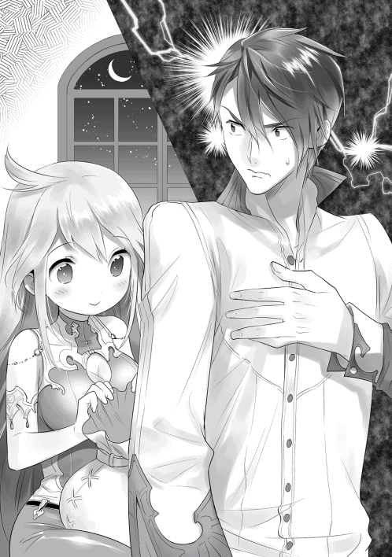
「......やはり、俺はカルセに『異性』として認識されていなかったのだろうな......」
あくまでも「大切な友人」。それがモルガーナイクに対するカルセドニアの認識だ。
それを改めて思い知らされ、モルガーナイクは悲しい気持ちに囚われた。
今ならば理解できる。彼が娼館に行っていたことに、間違いなくカルセドニアは気づいていただろう。
娼館へ行けば、どうしたって名残が残る。
娼婦の使う香水の移り香や、娼婦と共に飲んだ酒の匂いなど。
当然カルセドニアも、モルガーナイクのそのような名残に気づいていた。
それでも何も言われなかったということは、やはり彼女にとって自分は「異性」ではなかったに違いない。
「まあ......カルセの想い人たる『夢の中の少年』は、なかなか見込みのある男だ。彼ならば、カルセを幸せにするだろう」
稚拙な戦い方ながら、自分を打倒してみせた黒髪の青年。彼のことを思い出しながら、モルガーナイクは笑みを浮かべた。
「カルセが異世界から呼び寄せた男か......彼ならば、彼女を不幸せにすることはあるまい」
真摯な瞳で真っ直ぐに自分に向かってきた、「異世界の少年」。モルガーナイクが出会った黒髪の彼は──既に少年という年齢ではなかったが──、決してカルセドニアを裏切ることはないだろう。
そう思わせるだけの何かを、確かに彼は秘めていた。
モルガーナイクは椅子を引いてそこに腰を下ろすと、ゆっくりと目を閉じた。
今でも、瞼の裏側には彼女の姿がはっきりと映る。
しかし、その姿はもう振り捨てなければならないだろう。
今すぐは無理でも、近い将来には彼女への想いは過去のものにしなければならない。
そう考えて、モルガーナイクは彼女に対して抱いていた想いを、胸の一番奥へとゆっくりと沈み込ませていった。
翌朝。
モルガーナイクが階下の酒場に降りると、店主が手配した者たちが既に集まっていた。
「よう、あんたが《自由騎士》の旦那かい？」
「そうだ。今日のことは店主から聞いているな？」
声をかけてきたのは、それなりに実力がありそうな魔獣狩りだ。
彼以外はまだまだ駆け出しの域を出ていない者ばかりだが、彼だけは結構経験がありそうだ。
本来、今回のような人足紛いの仕事は、駆け出しの者たちが受ける仕事なのである。
「どうやら一人だけ毛色が違うようだが、本当に人足の真似ごとをすると理解しているか？」
「まあな。今回の俺の目的は賃金じゃなく、あんたと縁を繋ぐことだからな」
悪びれる風もなく、その魔獣狩りは堂々と言いのけた。
名のある魔獣狩りと馴染みになっておくのは、決して悪いことではない。
何かの折に仕事の相棒として指名される可能性だってあるし、高名な魔獣狩りと一緒に仕事をしたという事実は、一種の箔をつけることになる。
無名の魔獣狩りは、自分の名前を売り込むことに貪欲なものなのだ。
彼のその態度からそれほど悪い人物ではなさそうだと判断し、モルガーナイクは笑みを浮かべながら右手を差し出した。
「モルガーナイクだ。今日はよろしく頼むぞ」
「任せておけって。俺はギールって名前で、後ろの若造たちの纏め役みたいなもんだ。今後も何かあれば、遠慮なく俺を指名してくれ」
ギールと名乗った魔獣狩りが、にかりとどこか少年のような笑みを浮かべながらモルガーナイクの右手を握り返す。
「では、腹ごしらえをしたら、早速出発しよう」
「承知だ。ところで......その腹ごしらえは賃金の内に入るのかい？」
どうやら、このギールという男はかなりちゃっかりしているようだ。
しっかりと朝食を奢れと要求してくる。
「いいだろう。途中で空腹を理由に仕事を放り出されては困るからな」
苦笑を浮かべながらモルガーナイクがそう言うと、ギールとその背後の若い魔獣狩りたちが喝采を上げた。
「さすが音に聞こえた《自由騎士》の旦那だ。気前がいいねぇ」
ところで、と続けたギールは、何かを探すように視線を彷徨わせた。
「今日は噂の《聖女》様は一緒じゃないのか？ 凄え別嬪だって評判の《聖女》様に会えると思って楽しみにしていたんだがよ？」
ギールの言葉に、モルガーナイクはあからさまに顔を顰 めた。
ようやく見切りをつけようと思っていたことを蒸し返されては、誰だって彼と同じ思いを抱くだろう。
もちろん、ギールに悪気はないのだろう。それを承知の上で、モルガーナイクはギールの尻を思いっ切り蹴り上げた。
酒場に響くギールの悲鳴を背中で聞きながら、モルガーナイクは顰めっ面のまま人数分の朝食を店主に注文するのだった。
ご無沙汰しております。この度は、『俺のペットは聖女さま』の第二巻を手に取ってくださり、本当にありがとうございます。
一巻の発売から僅か二か月とちょっと、早くも二巻を発売することができました。
全ては様々な応援をしてくださったり、実際に一巻をお買い上げくださった皆様のお蔭です。特にｗｅｂ版の時から応援してくださっている方々には、本当に頭が下がる思いです。
この場を持ちまして、改めてお礼申し上げます。
さて、堅苦しい挨拶はここまでにして（笑）。
皆さんが本書を手にしている時は、既に年も明けてひと月近く経過していると思います。
毎年この時期は、自分は本業の方が繁忙期に突入する時期であり、きっと毎日ひーひー言いながら仕事をしたり、ｗｅｂ小説を書いたり、休日は子供と遊んでいたりすることだと思います。
毎年のこととはいえ、この時期になると春になるのが待ち遠しくて仕方ありません。
大体繁忙期は桜が咲く頃まで続くので、サクラの開花が繁忙期の終了の合図でもあるのです。
ちなみに、自分は寒いのは苦手ではありません。寒い季節の方が暮らしやすいぐらいです。
反面、夏はだめですね。暑いと本当に身体が辛くて。子供の頃は断然夏の方が好きでしたが、今は夏よりも冬の方が絶対にいいです。
そういう意味では、春になるのはちょっと残念だったりします。
では、最後に。
書籍という形に纏めてくださった出版社の方々、美麗なイラストを描いてくださったカスカベアキラ様、そして何よりこうして最後にここまでお付き合いくださった、全ての読者の皆様に感謝を捧げつつ、締めくくりたいと思います。
皆様、本当に、ありがとうございました。
そして、これからもどうかよろしくお願いします。
ムク文鳥
著者プロフィール
ムク文鳥
Muku-Buncho
瀬戸生まれの名古屋市民。
「人生何が起こるか分からない」を、現在進行形で体験中。チーコのモデルとなったオカメインコは、既に他界しております。もしかすると、異世界で聖女に生まれ変わっているかもしれません（笑）。我が家には現在、文鳥が三羽（桜文鳥二羽、シルバー文鳥一羽）、オカメインコ（並オカメ）が一羽います。
俺のペットは聖女さま２
2016年３月１日発行 ver.1.0
著 者 ムク文鳥
発行所 TOブックス
〒150-0045 東京都渋谷区神泉町18-８
松濤ハイツ２Ｆ
03-6452-5678（編集）
0120-933-772（営業フリーダイヤル）
Ⓒ2016 Muku-Buncho
※無断で複製・複写・データ配信などをすることは、かたくお断りいたします。
本電子書籍は下記にもとづいて制作しました
俺のペットは聖女さま２
発行日 2016年２月１日 第１刷発行
本作品の全部または一部を無断で複製、転載、配信、送信したり、ホームぺージ上に転載することを禁止します。また、本作品の内容を無断で改変、改ざん等を行うことも禁止します。
本作品購入時にご承諾いただいた規約により、有償・無償にかかわらず本作品を第三者に譲渡することはできません。
本作品を示すサムネイルなどのイメージ画像は、再ダウンロード時に予告なく変更される場合があります。
本作品は縦書きでレイアウトされています。
また、ご覧になるリーディングシステムにより、表示の差が認められることがあります。